Course Archive — 코스 아카이브
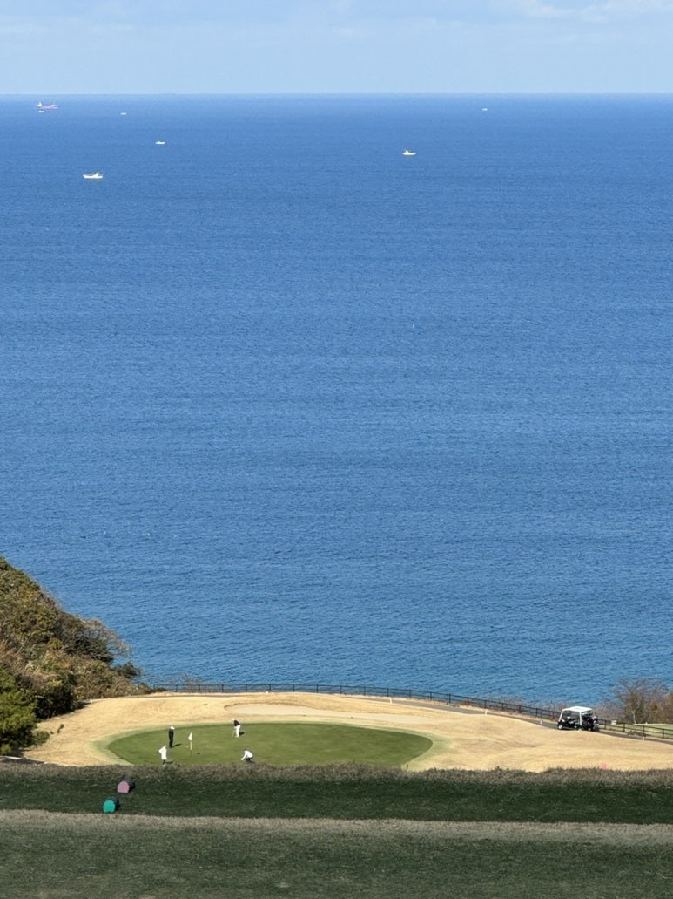
새벽 비행기. 공항에서 차로 50분. 그게 니조CC를 고른 이유의 전부였다. 아코디아 계열이다. 지금은 PGM에 인수됐지만 아코디아라는 이름을 그대로 쓰고 있다. 셀프 체크인 키오스크로 빠르게 수속을 마쳤다. 새벽부터 서둘러 움직여야 하는 첫날 일정에 딱 맞는 시스템이다. 카트를 끌고 코스로 나가는 순간 피로가 날아갔다. 겐카이나다 바다가 코스 곳곳에서 내려다보인다. 후쿠오카 시내에서 1시간도 안 걸리는 거리에 이런 오션뷰 코스가 있다는 게 놀라웠다. 바다를 배경으로 티샷을 날리는 홀에서는 셔터를 누르기만 해도 사진이 된다. 코스는 무난할 줄 알았다. 산과 바다를 깎아 만든 지형이라 페어웨이가 좁고 업다운이 있다. 바다에서 불어오는 바람이 클럽 선택을 어렵게 만든다. 중가형 구장인데 은근히 매운맛이다. 후쿠오카-구마모토를 잇는 빡빡한 일정이었다. 겨울이라 눈이라도 왔으면 계획이 틀어질 뻔했다. 다행히 기온이 따뜻했다. 완벽한 잔디 컨디션을 기대하고 가는 곳이 아니다. 탁 트인 바다 뷰를 즐기며 가볍게 첫 라운딩을 풀기엔 이보다 좋은 선택이 없다.
Early morning flight. Fifty minutes from the airport by car. That was the entire reasoning behind choosing Nijō CC. Accordia group. Now under PGM ownership, but still operating under the Accordia name. Self check-in kiosk made arrival smooth. The right system for a first-day schedule that starts before sunrise. The fatigue from the morning flight disappeared the moment the cart rolled onto the course. The Genkai Sea stretches out across multiple holes. Finding a course with ocean views like this less than an hour from central Fukuoka was a genuine surprise. On the signature holes with the sea as a backdrop, almost any photo works. The course seemed like it would be straightforward. The terrain carved from mountain and coastline means narrow fairways and real elevation change. Sea wind adds another variable to every club selection. Mid-range course, quietly demanding. The itinerary for this trip covered Fukuoka and Kumamoto, tightly packed. A winter schedule with the constant risk of snow disrupting plans. The weather stayed warm throughout. This isn’t the place to come for immaculate turf. For a first-day round that opens with ocean views and light legs, nothing fits better. MIKA’s Take: Fifty minutes from the airport, the Genkai Sea straight ahead. The right answer for day one.
早朝便。空港から車で50分。それがニジョーCCを選んだ理由のすべてだった。 アコーディア系列だ。今はPGMに買収されたが、アコーディアという名称をそのまま使い続けて いる。セルフチェックインキオスクで手続きを素早く済ませた。夜明け前から動かなければならな い初日のスケジュールにぴったりのシステムだ。 カートでコースに出た瞬間、疲れが飛んだ。玄界灘がコースのあちこちから見渡せる。福岡市内 から1時間もかからない距離にこんなオーシャンビューコースがあるとは驚きだった。海を背景に ティショットを打つシグネチャーホールでは、シャッターを押すだけで絵になる。 コースは無難だと思っていた。山と海を削って作った地形のため、フェアウェイが狭くアップダウン もある。海から吹いてくる風がクラブ選択を難しくする。中価格帯のコースだが、じわじわと辛口 だ。 福岡と熊本を回るタイトなスケジュールだった。冬なので雪が降れば計画が崩れるところだった が、幸い気温は暖かく、旅の間ずっと晴れ続けた。 完璧な芝のコンディションを期待して行く場所ではない。広々とした海の景色を楽しみながら、軽 い気持ちで初日のラウンドをほぐすには、これ以上の選択はない。
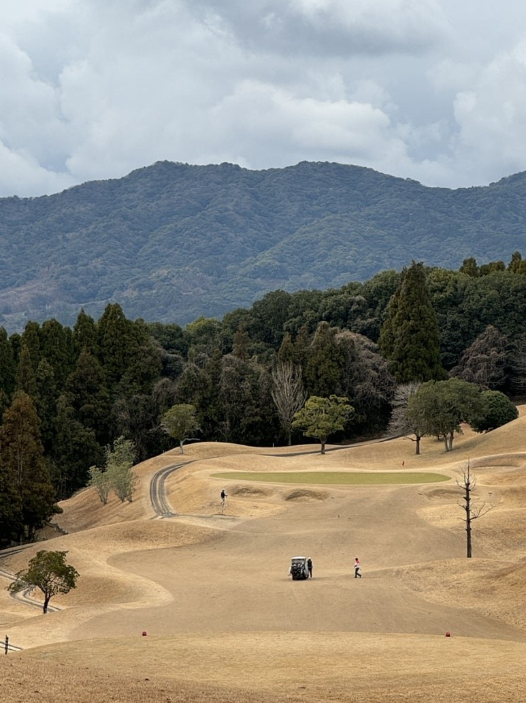
입구부터 범상치 않다. 러시아 궁전을 연상케 하는 클럽하우스가 맨땅에 헤딩하듯 지어져 있다. 마치 놀이공원 입구 같은 컨셉이다. 일본 골프장에서 이런 외관은 흔하지 않다. 코스와 컨디션은 전체적으로 무난했다. 기억에 강하게 남는 홀보다는 편안하게 돌 수 있는 구성이었다. 후쿠오카 첫 번째 여행의 두 번째 라운딩으로, 몸을 푸는 데 부족함이 없었다.
The entrance sets an unexpected tone. A clubhouse styled like a Russian palace, built with full conviction on open ground. More amusement park than golf club in its visual approach. Not a common sight on Japanese courses. The course and conditions were solid throughout — comfortable and uncrowded, without a single hole that demanded particular attention. A relaxed second round of the Fukuoka trip. Exactly what that slot in the schedule needed. MIKA’s Take: Some courses are remembered for the fairways. Some for the clubhouse. This one is the latter.
入口からただならぬ雰囲気だ。ロシアの宮殿を思わせるクラブハウスが、ためらいなく建ち並ん でいる。遊園地の入口のようなコンセプトだ。日本のゴルフ場でこういう外観はなかなかお目にか かれない。 コースとコンディションは全体的に無難だった。特別に記憶に残るホールよりも、リラックスして回 れる構成だった。福岡初旅行の2ラウンド目として、身体をほぐすには十分だった。
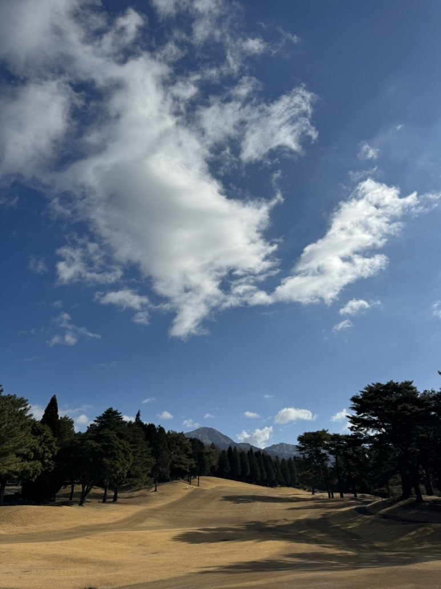
아소 도큐 골프클럽. 지금은 트라이얼 그룹에 인수되어 이름이 바뀌었다. 방문 당시 클럽하우스와 스타트하우스는 아담하고 붐볐다. 도착하자마자 짐을 내리고 티오프 시간에 쫓겨 카트에 올라탔다. 화려한 클럽하우스를 기대했다면 첫인상은 당황스러울 수 있다. 1번 홀 티박스에 서는 순간 조급함이 사라졌다. 아소산의 거대한 능선과 광활한 칼데라 지형이 파노라마처럼 펼쳐졌다. 대자연 한가운데 뚝 떨어져서 골프를 치는 느낌이었다. 나중에 사진첩을 열어보니 거대한 산과 탁 트인 페어웨이, 그 속에 점처럼 서 있는 우리들의 모습뿐이었다. 세세한 시설 사진을 찍을 생각조차 하지 못했다. 주변 풍광이 너무 비현실적으로 웅장했기 때문이다. 1월 한겨울인데 날씨가 포근했다. 맑은 하늘 아래 아소산 공기를 마시며 걸으니 스코어보다 걷는 것 자체가 힐링이었다. 시설을 최우선으로 생각하면 아쉬울 수 있다. 하지만 아소산 뷰를 배경으로 호쾌한 샷을 날리고 싶은 자연파 골퍼에게는 이보다 짜릿한 선택지가 없다.
Aso Tokyu Golf Club — now rebranded under Trial Group ownership. The clubhouse and starter’s hut at the time of the visit were compact and busy. Arrived, unloaded bags, rushed onto the cart before the tee time. Anyone expecting a polished clubhouse arrival experience would have been caught off guard. Standing on the first tee, the urgency disappeared. The massive ridgeline of Mount Aso and the vast caldera terrain opened up like a panorama. Golf played inside a natural wonder rather than alongside it. Looking back at the photos afterward: all mountains, all wide fairways, and tiny figures standing in the frame. No detail shots of the facilities, no close-ups of the clubhouse. The surrounding landscape was so overwhelmingly large that smaller things simply didn’t register. January, midwinter — the weather was warm and clear. Walking through Aso mountain air under a blue sky, the round became more about the walk than the scorecard. Facilities-first golfers may come away wanting more. For anyone who wants to swing freely with Mount Aso filling the background, nothing competes. MIKA’s Take: The clubhouse was small. Aso was not. That was the whole story.
阿蘇東急ゴルフクラブ。今はトライアルグループに買収され名称が変わっている。訪問当時のク ラブハウスとスタートハウスはこぢんまりとして混雑していた。到着後すぐに荷物を下ろし、ティオ フ時間に追われてカートに乗り込んだ。華やかなクラブハウスを期待していたなら、第一印象は 戸惑うかもしれない。 1番ホールのティボックスに立った瞬間、焦りが消えた。阿蘇山の巨大な稜線と広大なカルデラ地 形がパノラマのように広がった。大自然のど真ん中に放り込まれてゴルフをしているような感覚 だった。 後で写真を見返すと、巨大な山と탁 트인フェアウェイ、その中に点のように立つ私たちの姿ばか りだった。細かい施設の写真を撮る気すら起きなかった。周囲の風景があまりにも非現実的に雄 大だったからだ。 1月の真冬なのに天気は穏やかだった。青空の下で阿蘇山の空気を吸いながら歩いていると、ス コアよりも歩くこと自体が癒しになった。 施設を最優先に考えるなら物足りないかもしれない。しかし阿蘇山を背景に思い切りショットを打 ちたい自然派ゴルファーにとって、これ以上の選択肢はない。
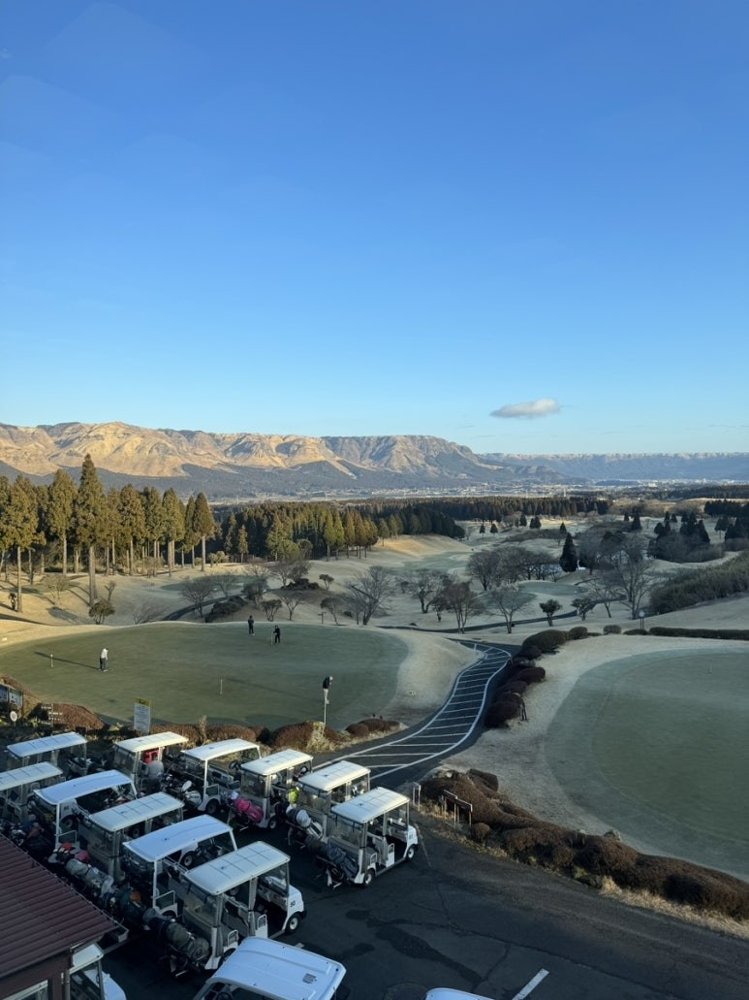
구마모토 시내 골목길이 상상 이상으로 좁았다. 큰 차들도 오가는 길에서 동반자가 조심스럽게 운전하다가 결국 왼쪽 사이드미러가 전봇대에 부딪혀 90도로 돌아가 버렸다. 일본 렌터카는 반드시 풀커버 100%로 계약해야 한다는 걸 뼈저리게 배웠다. 우여곡절 끝에 도착한 아소 그랑브리오 리조트. 객실은 노후화가 느껴졌지만 깔끔하게 관리되어 있었다. 진짜 매력은 다른 곳에 있었다. 온천이 좋았다. 겐센카케나가시 방식의 천연 온천수다. 약간의 적갈색을 띠는 황산염천이 라운딩으로 지친 근육을 녹여줬다. 아소 외륜산을 바라보며 즐기는 노천탕은 그야말로 신선놀음이었다. 아침 뷔페도 기대 이상이었다. 창밖으로 아소산 능선 뒤로 동이 트는 모습을 보며 식사를 했다. 그 기운을 꽉 채운 채로 라운딩을 시작했다. 아놀드 파머 설계의 동코스. 전장이 길고 페어웨이가 넓다. 심한 언듈레이션과 전략적 벙커 배치로 난이도가 있다. 시그니처 홀인 5번 파5에서 아소산을 향해 날리는 티샷은 이 코스의 백미다. 카트 페어웨이 진입이 불가해 체력 안배가 중요하다. 서코스는 해저드와 연못이 많고 카트 페어웨이 진입이 가능하다. 동코스와 성격이 완전히 다르다. 예약 전 본인의 스타일에 맞게 선택하는 게 낫다.
The back streets of Kumamoto city were narrower than expected. A careful drive through tight roads ended with the left side mirror hitting a utility pole and folding 90 degrees. The lesson: always take full coverage rental car insurance in Japan. No exceptions. Arrived at Aso Grand Vrio Resort after that ordeal. The rooms showed their age but were clean and comfortable. The real draw was elsewhere. The onsen was excellent. Gensen-kakenagarashi style — natural hot spring water flowing directly from the source. Slightly reddish sulfate spring that dissolved the fatigue from a day of golf. Soaking in the outdoor bath while looking out at the outer rim of Mount Aso was something else entirely. The morning breakfast buffet exceeded expectations. Ate while watching dawn break behind the Aso ridgeline through the window. The right way to start a round. East Course, designed by Arnold Palmer. Long yardage, wide fairways. Significant undulation throughout, with strategically placed bunkers adding difficulty. The signature hole — par 5 No. 5 — is known for the tee shot directed straight toward Mount Aso. Cart access on fairways isn’t permitted; managing energy over 18 holes matters. The West Course has more water hazards and allows cart access on fairways. Completely different in character. Worth deciding which suits before booking. MIKA’s Take: The side mirror broke. Aso was fine. The onsen saved the day.
熊本市内の路地は想像以上に狭かった。大型車も行き交う細い道を慎重に走っていたが、結局 左側のサイドミラーが電柱にぶつかって90度に折れてしまった。日本のレンタカーは必ずフルカ バー100%で契約すべきだということを痛感した。 紆余曲折を経て到着したのが阿蘇グランヴィリオリゾートだ。客室には多少の老朽化が感じられ たが、清潔に管理されていて滞在に不便はなかった。本当の魅力は別にあった。 温泉が良かった。源泉かけ流し方式の天然温泉だ。やや赤みを帯びた硫酸塩泉が、ラウンドで 疲れた筋肉をほぐしてくれた。阿蘇外輪山を眺めながら楽しむ露天風呂は、まさに至福のひとと きだった。 朝の뷔페も期待以上だった。窓の外に阿蘇の稜線越しに夜明けが広がる光景を眺めながら食 事をした。その力を胸いっぱいに蓄えてラウンドに臨んだ。 アーノルド・パーマー設計の東コース。全長が長くフェアウェイも広い。激しいアンジュレーションと 戦略的なバンカー配置が難易度を高めている。シグネチャーホールの5番パー5は、阿蘇山に向 かって打つティショットで知られる。カートのフェアウェイ乗り入れは不可なので、体力の配分が重 要だ。 西コースはハザードと池が多く、カートのフェアウェイ乗り入れが可能だ。東コースとは性格が まったく異なる。予約前に自分のスタイルに合ったコースを選ぶのが良い。
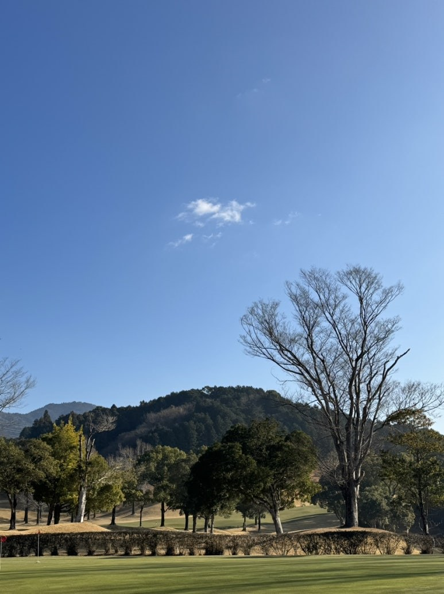
구마모토 가는 길에 중간에 들렀다. 골프장 자체는 꽤 좋았다. 사진이 딱 한 장 남아있을 뿐이지만, 코스의 기억은 좋게 남아있다. 라운딩 후 골프장 근처 맛집을 찾다가 일본인이 운영하는 경양식집에 들어갔다. 한국의 90년대 느낌이 그대로였다. 스프, 샐러드, 햄버그 스테이크. 동네 사랑방 같은 분위기였다. 양식 자격증도 걸려 있었다. 우리가 흔히 말하는 그 ‘쉐프님’ 스타일이었다.
A stop on the way from Fukuoka to Kumamoto. The course itself was good — only one photo survived the trip, but the memory of the round is positive. After the round, found a Western-style restaurant run by a Japanese chef near the course. The atmosphere was straight out of Korean dining culture from the 1990s — soup, salad, hamburg steak. The kind of neighborhood place where regulars know each other by name. A culinary certificate hung on the wall. The full Chef experience. MIKA’s Take: Some days the restaurant outlasts the round in memory. This was one of those days.
福岡から熊本へ向かう途中に立ち寄った。ゴルフ場自体はなかなか良かった。写真は1枚しか 残っていないが、ラウンドの記憶は好印象のまま残っている。 ラウンド後、近くで食事処を探して日本人が営む洋食店に入った。韓国の90年代の雰囲気その ままだった。スープ、サラダ、ハンバーグステーキ。地域の常連たちが集まる憩いの場のような空 間だった。壁には調理師の資格証が掛かっていた。まさに「シェフ」と呼ぶにふさわしい雰囲気 だった。
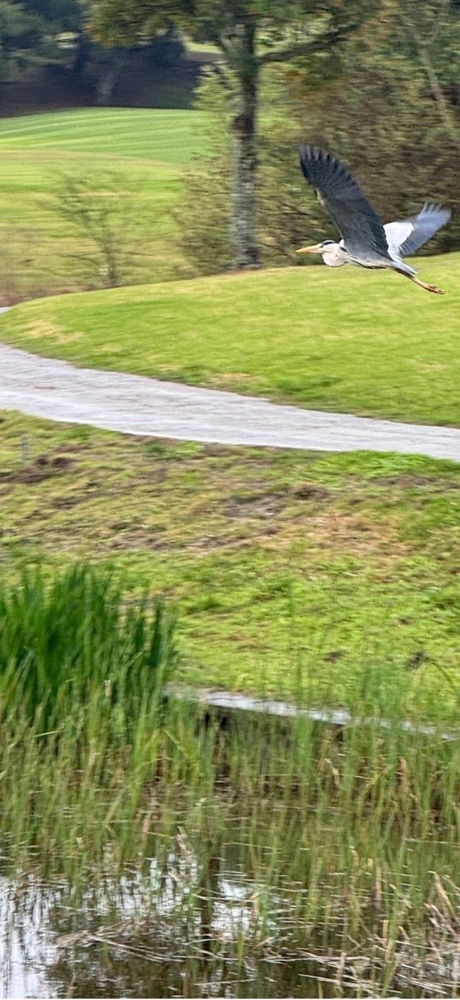
새벽 4시에 일어나 인천공항으로 향했다. 한국도 비, 후쿠오카도 비. 치자 말자 고민하다가 골프장 가보고 결정하기로 했다. 결국 18홀 중 15홀을 비 맞으며 쳤다. 첫날 라운딩이라 공항 근처 가성비 좋은 곳으로 골랐다. 카츠야마고쇼. 중상급 수준의 구장이다. 클럽하우스는 리모델링을 해서 깔끔했다. 프런트 직원이 한국어를 조금 해서 수월하게 체크인했다. 원래 시간보다 앞당겨 출발했다. 비가 쏟아지는 가운데 라운딩을 시작했다. 벙커 컨디션이 좋진 않았는데 오늘 벙커 세이브를 100% 했다. 내 실력이 아닌 건 알고 있다. 페어웨이 배수는 만족스러운 수준이었고 페어웨이 상태도 나쁘지 않았다. 카트에 달린 홀 공략법을 보며 한 타 한 타 줄이는 데 집중했다. 전반을 마치고 클럽하우스에서 우동 한 그릇. 비에 젖은 몸이 녹았다. 두 가지가 인상 깊었다. 비에 젖은 옷과 모자를 고온 건조할 수 있는 장치가 있었다. 라커룸에 들어서니 신발에 넣어 말릴 신문지가 준비되어 있었다. 작은 배려였지만 큰 감동이었다. 15년을 함께한 퍼터가 오늘도 제 역할을 했다. 골프를 그만두는 날까지 다른 퍼터를 쓸 일은 없을 것 같다.
Up at 4 AM, barely made the flight to Kitakyushu. Rain in Korea, rain in Fukuoka. The debate over whether to play lasted until arrival. Played 15 of 18 holes in the rain. First day, first round — chose a course close to the airport with good value. Katsuyama Gosho, mid-to-upper tier. The clubhouse had been recently renovated and looked clean. A front desk staff member spoke some Korean, which made check-in smooth. Tee time moved up from the original slot. Started the round with rain already falling. Bunker conditions weren’t ideal, but bunker saves came in at 100% today. Not my skill — just one of those days. Fairway drainage held up well. Studied the hole strategy display on the cart and focused on trimming one shot at a time. Finished the front nine, came in for udon. Warmed up and headed back out. Two things stood out. A high-heat drying unit for wet clothes and caps near the locker room. Newspaper already stuffed into shoe racks for drying wet footwear. Small gestures. Landed bigger than expected. The putter that’s been in the bag for 15 years did its job again today. No plans to replace it before the last round of my life. MIKA’s Take: 15 holes in the rain, 100% bunker saves. Bad weather sharpens the focus.
朝4時に起きて仁川空港へ向かった。韓国も雨、福岡も雨。プレーするかどうか迷いながら、とり あえずゴルフ場まで行って決めることにした。結果、18ホール中15ホールを雨の中でプレーし た。 初日のラウンドなので空港近くでコスパの良いコースを選んだ。勝山御所CC、中上級レベルの コースだ。クラブハウスはリノベーション済みで清潔感があった。フロントスタッフが韓国語を少し 話せたのでチェックインがスムーズだった。予定より早めにスタートした。 雨が降る中でラウンドを開始した。バンカーのコンディションは良くなかったが、今日のバンカー セーブ率は100%だった。自分の実力ではないことはわかっている。フェアウェイの排水は満足の いく水準で、コンディションも悪くなかった。カートに取り付けられたホール攻略図を見ながら、1打 1打を削ることに集中した。 前半を終えてクラブハウスでうどんを一杯。雨に冷えた身体が温まった。 二つのことが印象に残った。雨で濡れた服と帽子を高温乾燥できる設備があった。ロッカールー ムに入ると、靴を乾かすための新聞紙がすでに準備されていた。小さな配慮だったが、大きな感 動があった。 15年間ともにしてきたパターが今日も仕事をしてくれた。ゴルフをやめる日まで別のパターを使う ことはないだろう。
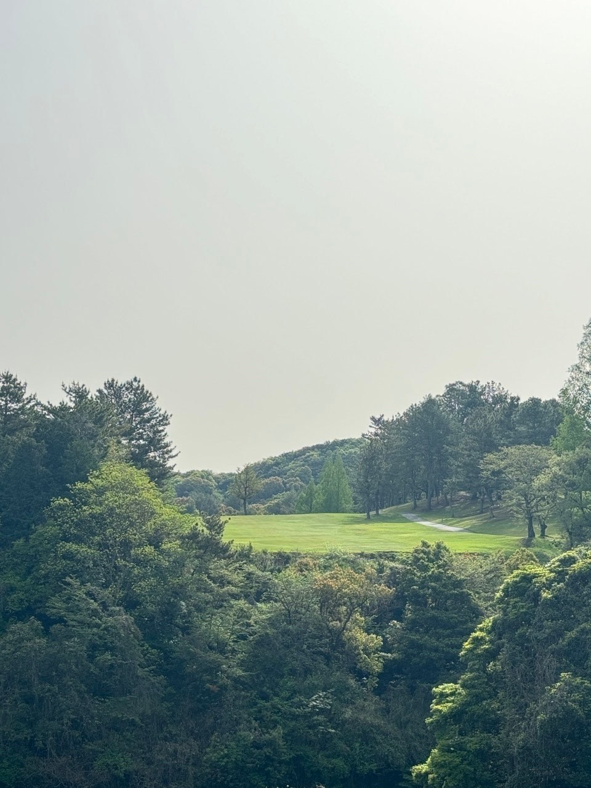
이번 여행에서 가장 고대하던 라운딩이었다. 명문 구장에 대한 예의로 세미정장을 갖춰 입고 숙소를 나섰다. 라쿠텐 고라, 자란넷에서는 검색조차 안 됐다. 며칠을 뒤진 끝에 홈페이지를 찾아내 직접 예약했다. 혹시라도 당일 취소될까 봐 골프장 측에 컨펌 메일을 두 차례나 주고받았다. 그만큼 기대가 컸다. 클럽하우스에 도착하는 순간 세미정장을 입고 온 이유를 알았다. 차분하면서도 무게감 있는 분위기. 식사 포함 12,600엔이라는 가격이 믿기지 않을 만큼 수준이 높았다. 코스는 한국의 레이크사이드 회원제 서코스와 흡사한 레이아웃이다. 만만해 보여서 공격적으로 치면 여지없이 벙커가 기다린다. 파를 노리고 욕심을 내면 미스샷으로 응징당한다. 전략적이고 쫄깃하다. 18홀 내내 코스와 밀당을 하며 동반자 전원 대만족으로 마쳤다.
The most anticipated round of the trip. Wore a semi-formal outfit out of respect for the course. That turned out to be the right call. The course didn’t show up on Rakuten GORA or Jalan. After days of searching, found the official website and booked directly. Sent two confirmation emails to make sure the reservation would hold. The anticipation was that high. Arriving at the clubhouse made the dress code self-explanatory. Calm, weighted atmosphere throughout. 12,600 yen with a meal included — the quality made that number hard to believe. The layout closely resembles the West Course at Lakeside Country Club in Korea. It looks approachable. Go aggressive and the bunkers respond. Chase a birdie with too much confidence and the misshot finds trouble. Strategic and tense throughout. All three players finished satisfied. MIKA’s Take: The course that looks easy is the most dangerous one. Nishinihon is that course.
今回の旅で最も楽しみにしていたラウンドだった。名門コースへの敬意を込め、セミフォーマルな 服装で宿を出た。それが正解だった。 楽天ゴルフやじゃらんでは検索すらできなかった。数日間探し続けた末に公式ホームページを見 つけ、直接予約した。当日キャンセルの不安からゴルフ場側と確認メールを2度やり取りした。そ れほど期待していた。 クラブハウスに到着した瞬間、セミフォーマルで来た理由がわかった。落ち着いた中に重厚感の ある雰囲気。食事込み12,600円という価格がにわかに信じられないほどの水準だった。 コースは韓国のレイクサイド会員制西コースに似たレイアウトだ。一見やさしそうに見えて、強気 に攻めればバンカーが待っている。パーを狙って欲を出せばミスショットで報いを受ける。戦略的 でスリリングだ。18ホールを通じてコースと駆け引きしながら、同伴者全員が大満足で終えた。
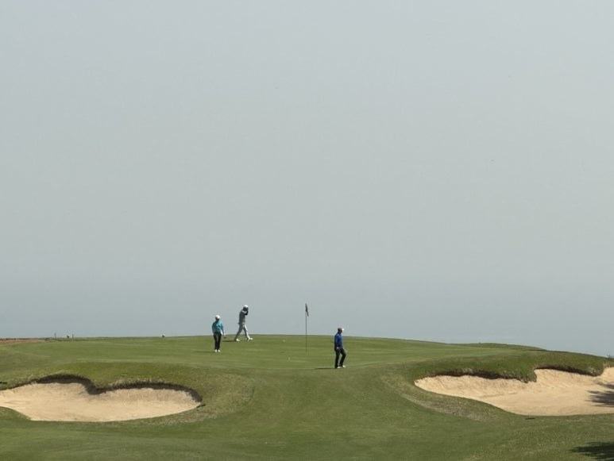
이번 여행 마지막 일정이었다. 라쿠텐으로 예약했더니 체크인 시 락커키 안쪽에 쪽지가 들어있었다. 홈페이지 직접 예약하면 1,200엔 더 저렴하다는 안내였다. 라쿠텐 수수료를 돌려주는 방식의 정직한 안내였다. 다음부터는 홈페이지로 예약하기로 했다. 공식 티는 화이트였는데 좀 가까운 느낌이라 블루에서 쳤다. 블루티가 생각보다 난이도가 있어서 파4에서 전체적으로 고전했다. 요즘은 일본 가면 공식 티에서 친다. 말을 잘 듣게 됐다. 대기가 좀 길었다. 파3 홀에서 두 팀 이상 기다리는 경우도 있었다. 주말 스루플레이라면 6시간은 각오해야 할 것 같다. 시그니처 홀은 바다가 보이는 파3다. 오늘은 날이 뿌옇게 흐려서 바다가 잘 보이지 않았다. 맑은 날이면 정말 예술일 것 같다. 일부 홀에서 사슴을 봤다. 한국에서 고라니는 많이 봤는데 사슴은 처음이었다. 골프장 환경은 가을이 훨씬 예쁠 것 같다. 가실 분들은 가을을 노리길 권한다.
Last round of the trip. Booked through Rakuten — inside the locker key on check-in was a handwritten note explaining that direct booking through the course website saves 1,200 yen. An honest nudge from the course itself. Rakuten gets the booking fee; the course gets less. Direct from next time. The official tee was white, which felt a little short. Played the blue. The blue tees had more bite than expected — par 4s were a consistent challenge throughout. Wait times ran longer than other courses. Two groups stacked up at par 3 holes more than once. Weekend splay-through players should expect six hours minimum. The signature hole is a par 3 with an ocean view. Hazy conditions today kept the sea mostly hidden. On a clear day it would be something else entirely. Deer appeared on a few holes — a first in Japan, though not the last. The course environment looks like it would be significantly more beautiful in autumn. Worth timing a visit accordingly. MIKA’s Take: The par 3 with a sea view deserves a clear autumn day. That’s the return visit sorted.
今回の旅の最終日程だった。楽天で予約したところ、チェックイン時にロッカーキーの中に紙が 入っていた。公式ホームページから直接予約すれば1,200円安くなるという案内だった。楽天の 手数料分を返す形の正直な案内だ。次からはホームページで予約することにした。 公式ティはホワイトだったが少し近い気がしてブルーで打った。ブルーティは思ったより難易度が あり、パー4で全体的に苦労した。最近は日本に行ったら公式ティでプレーするようにしている。 素直になった。 待ち時間がやや長かった。パー3ホールで2組以上待つこともあった。週末のスループレーなら6 時間は覚悟した方がいい。 シグネチャーホールは海が見えるパー3だ。今日は霞んでいて海がよく見えなかった。晴れた日 なら本当に絵になるだろう。いくつかのホールで鹿を見かけた。韓国でノロジカはよく見ていた が、鹿は初めてだった。 コースの環境は秋がずっと美しいと思う。訪れるなら秋を狙うことをお勧めする。
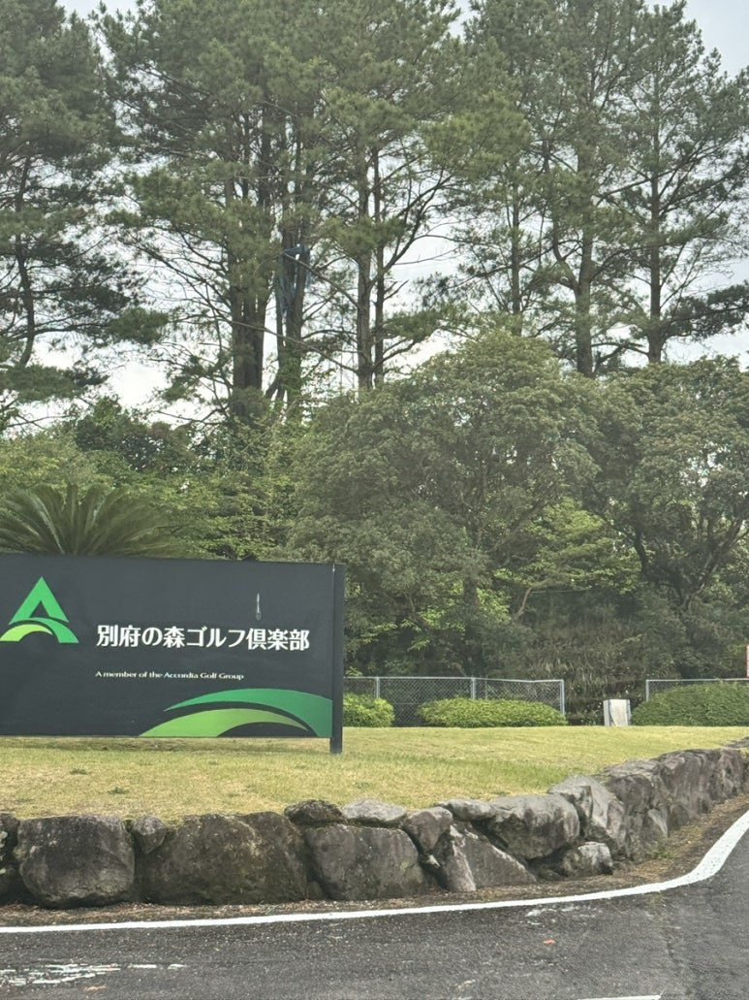
오이타, 벳푸 지역은 골프 비용이 전반적으로 저렴하다. 온천 성수기와 겹치지만 않으면 일본 전체에서도 합리적인 가격으로 칠 수 있는 지역이다. 벳푸 골프클럽과 벳푸 모리클럽이 그 대표 주자다. 큰 기대 없이 갔는데 가격 대비 만족스러운 곳이었다. 24년 상반기까지는 가성비 위주로 골프장을 찾아다녔는데, 점수 좋고 평가 좋은 곳들을 잘 골라다닌 덕분에 지금까지도 가성비 좋은 곳을 잘 찾는 편이다. 산으로 올라가는 길이 편하지 않았고 날씨도 좋지 않았다. 그래도 벳푸 온천으로 충분히 보상받았다. 저녁은 야키니쿠로 마무리했다.
Oita and Beppu run cheaper than most Japanese regions for golf. Outside of onsen peak season, the area offers solid value — Beppu Golf Club and Beppu Mori Club being the go-to options. Went without high expectations. Came away with good value for the price. The first half of 2024 was built around finding affordable courses with strong ratings — a habit that still holds. The mountain road up wasn’t easy and the weather wasn’t cooperative. The Beppu onsen afterward made up for both. Finished the evening with yakiniku. MIKA’s Take: The golf was solid. The onsen was excellent. In Beppu, that’s the right order.
大分、別府エリアはゴルフ費用が全体的に安い。温泉のピークシーズンと重ならなければ、日本 全体でも手頃な価格でプレーできる地域だ。別府ゴルフクラブと別府森クラブがその代表格だ。 大きな期待はしていなかったが、価格対比では満足のいく場所だった。2024年上半期まではコス パ重視でゴルフ場を選んでいたが、評価の高い場所をうまく選んできたおかげで、今でもコスパ の良いコースを見つけるのは得意な方だ。 山へ上がる道は楽ではなく、天気も良くなかった。それでも別府の温泉で十分に報われた。夜は 焼肉で締めくくった。
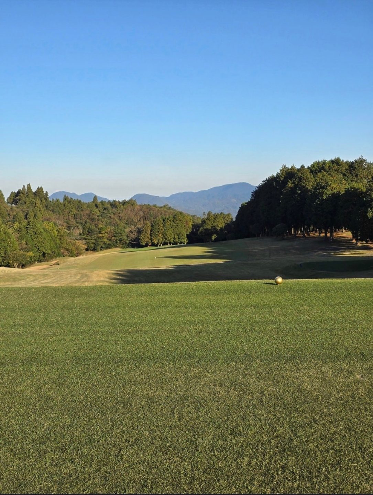
비가 많이 왔다. 알다시피 일본 골프장에서 비를 이유로 그만두기는 쉽지 않다. 그냥 쳤다. 9홀을 마치고 점심을 먹으러 클럽하우스로 올라갔더니 식당이 닫혀 있었다. 점심 포함 플랜이었는데. 오전 팀만 받고 오후는 식당을 닫은 모양이었다. 컴플레인을 했더니 골프장 측도 당황한 눈치였다. 처음 있는 일인 듯했다. 결국 전체 비용에서 1,000엔을 빼주는 것으로 마무리됐다. 후반 9홀을 더 칠까 했지만 전반에 너무 고생한 탓에 의견이 모아졌다. 그냥 대욕장에 몸이나 담그고 가자고. 40분 이상 있었던 것 같다. 내려오면서 보니 시내는 비 한 방울도 오지 않았다. 골프장이 산 위에 있으니 지형상 그런 것이었다. 비를 맞으며 고생한 게 조금 허무했다. 너무 배가 고파서 찾아간 우동집이 동네 맛집이었다. 맛이 기가 막혔다.
Heavy rain throughout. Stopping isn’t really an option on a Japanese course unless conditions become dangerous. Played on. Finished the front nine and came up to the clubhouse for lunch — lunch-included plan. Restaurant was closed. Apparently the kitchen had wrapped up after the morning groups. Filed a complaint. The staff looked genuinely unsure of what to do — seemed like a first for them too. Settled with a 1,000 yen reduction off the total. Debated the back nine. The front had been a battle. Consensus reached quickly: skip the golf, get in the bath. Stayed in the main communal bath for over 40 minutes. Coming down the mountain afterward, the city below was completely dry. Not a drop of rain. The course sits high enough that the weather operates independently from the town. The suffering in the rain felt slightly pointless in hindsight. Found a udon shop on the way back — turned out to be a local favorite. Exceptional. MIKA’s Take: Rain on the mountain, clear skies in the city. Found out on the way down. The udon made it right.
雨が激しく降った。ご存知の通り、日本のゴルフ場で雨を理由にやめるのは簡単ではない。その ままプレーした。 前半9ホールを終えてクラブハウスへ昼食を取りに上がると、レストランが閉まっていた。昼食込 みプランだったのに。午前の組だけ受け付けて、午後は閉店したようだった。クレームを入れる と、スタッフも困惑した様子だった。初めてのことらしかった。結局、総額から1,000円を引いてもら う形で決着した。 後半をプレーするか迷ったが、前半で消耗しきっていたため意見が一致した。大浴場に浸かって 帰ろうと。40分以上は入っていたと思う。 山を下りると、市内は雨が一滴も降っていなかった。ゴルフ場が山の上にあるため、地形上そう なるのだろう。雨の中で苦労したことが少し虚しく感じた。 お腹が空きすぎて飛び込んだうどん屋が、地元の名店だった。味が格別だった。
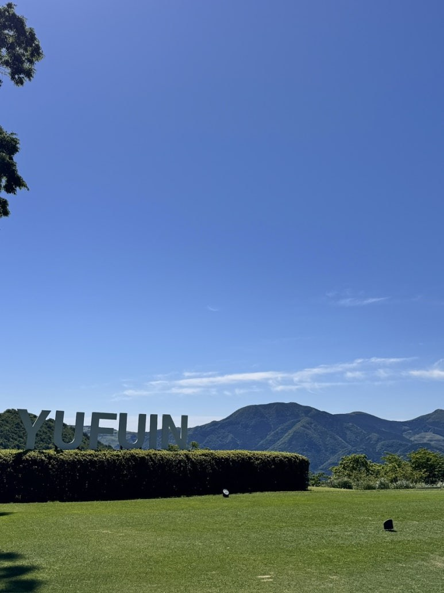
첫날 벳푸 골프클럽, 둘째 날 벳푸 모리야마. 마지막 날은 유후고겐이었다. 앞 이틀 날씨가 좋지 않았는데 마지막 날 하늘이 보상을 해줬다. 구름 한 점 없었다. 해발 800미터. 설계는 미야자와 초헤이. 오이타현 골프장 종합 평가 상위권을 꾸준히 유지하는 곳이다. 백티 기준 코스 레이팅도 현내 10위 안에 든다. 가벼운 리조트 코스가 아니다. 라운딩 내내 웅장한 산이 시야에 들어왔다. 아래로는 유후인 마을이 한눈에 내려다보였다. 고원 특유의 맑고 파란 하늘. 일상의 스트레스가 뷰만으로도 날아가는 느낌이었다. 페어웨이와 그린 모두 촘촘하고 깔끔했다. 디봇 자국 때문에 스트레스받을 일이 없었다. 샷마다 타구감이 좋았다. 레귤러 티에서는 억지스러운 홀 없이 밸런스가 좋았다. 여유롭게 즐기면서도 지루하지 않은 난이도였다. 날씨, 뷰, 컨디션 세 가지가 완벽하게 맞아떨어진 날이었다. 인생 라운딩 몇 손가락 안에 든다.
Day one at Beppu Golf Club, day two at Beppu Moriyama. The third day was Yufukogen. The first two days hadn’t been kind weatherwise. The last day made up for it completely. Not a cloud in sight. Elevation: 800 meters. Designed by Miyazawa Chohei. Consistently ranked among the top courses in Oita Prefecture. The course rating from the back tees places it in the prefectural top ten for difficulty. This is not a resort layout. Mountains filled the view throughout the round. Below, the town of Yufuin spread across the valley floor. The clear highland sky above, the town below, 18 holes in between. Whatever stress came on the flight over was gone within the first few holes. Fairways and greens were tight and clean throughout. No frustration from poor lies or divot scars. Every shot felt good underfoot. From the regular tees, the difficulty was well-balanced — strategic without being punishing. Relaxed enough to enjoy the scenery, interesting enough to stay engaged. Weather, view, and course condition all aligned on the same day. One of the handful of rounds that earns that description. MIKA’s Take: Golf at 800 meters, looking down at Yufuin. The weather finished the picture.
1日目は別府ゴルフクラブ、2日目は別府モリヤマ。最終日は由布高原だった。最初の2日間は天 気に恵まれなかったが、最終日は完璧な晴天で埋め合わせてくれた。雲ひとつなかった。 標高800メートル。設計は宮澤澄平。大分県のゴルフ場総合評価で常に上位にランクインする コースだ。バックティからのコースレーティングも県内トップ10に入る。軽いリゾートコースではな い。 ラウンドを通じて雄大な山が視野に入った。眼下には由布院の町が一望できた。高原特有の澄 んだ青空。日常のストレスが景色だけで吹き飛ぶような感覚だった。 フェアウェイもグリーンも芝が密で清潔だった。ディボット跡でストレスを感じることはなかった。 ショットのたびに気持ちの良い打球感があった。レギュラーティからは無理のあるホールがなく、 バランスが良かった。ゆったりと景色を楽しみながら、それでいて退屈しない難易度だった。 天気、眺望、コンディションの三拍子がすべて揃った一日だった。人生ラウンドの数本の指に入 る。 成させた。
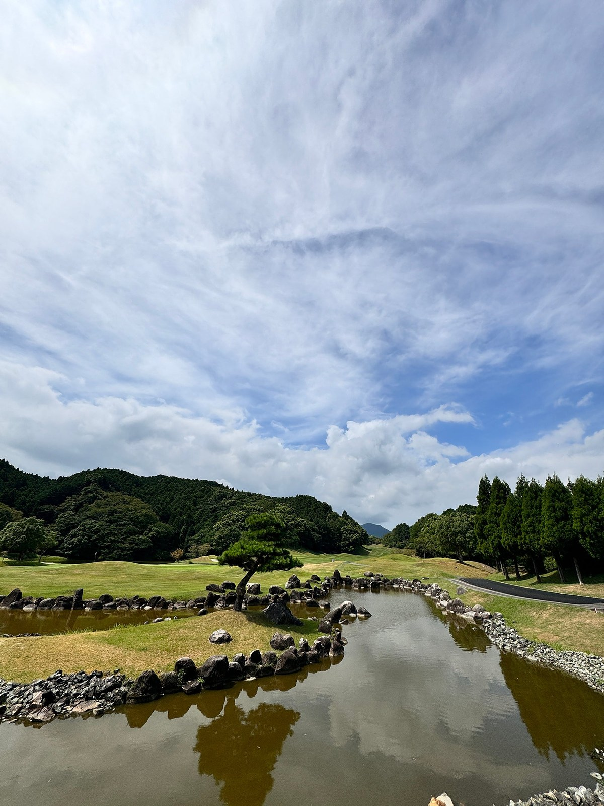
JR. 이니셜이 궁금했다. 일본 철도 JR 큐슈가 운영하는 골프장이었다. 철도 회사가 운영하는 코스라니, 가는 길부터 묘한 기대감이 있었다. 들어서는 순간 그 기대가 흔들렸다. 기록적인 폭염에 페어웨이가 타버렸다. 푸르러야 할 곳이 누렇게 메말라 있었다. 딱딱한 지면이 샷마다 거부감을 줬다. 명문 코스도 자연 앞에서는 속수무책이었다. 그 탄식은 오래가지 않았다. 고개를 들었더니 큐슈의 완만한 능선 위로 수목들이 펼쳐져 있었다. 왜 이곳이 이름난 곳인지, 발밑의 황량함을 잊게 만드는 풍경이 거기 있었다. 그리고 사슴들이 있었다. 페어웨이를 마음껏 누비고 있었다. 잔디 색깔 따위는 신경 쓰지 않는 눈치였다. 그 천진난만한 몸짓을 보고 있자니 팍팍했던 라운딩에 여유가 스며들었다.
JR. The initials sparked curiosity before arrival. Operated by JR Kyushu, Japan’s regional railway company. A golf course run by a railroad — something about that combination carried its own kind of anticipation. The fairways told a different story on arrival. Record-breaking heat had scorched the turf. What should have been green was brown and dry throughout. The hardened ground pushed back against every shot. Even a course with this reputation couldn’t hold out against the weather. The disappointment didn’t last. Looking up from the fairway, the gentle Kyushu ridgeline and its mature trees filled the frame. The view explained the reputation in a way the turf couldn’t that day. Then the deer arrived. Moving freely across the fairways, entirely unbothered by the condition of the grass beneath them. Watching them, the tightness of the round loosened. MIKA’s Take: The heat burned the fairways. The deer didn’t care. Eventually, neither did I.
JR。このイニシャルが気になっていた。JR九州が運営するゴルフ場だった。鉄道会社が手がける コースというだけで、向かう道中から不思議な期待感があった。 入場した瞬間、その期待が揺らいだ。記録的な猛暑でフェアウェイが焼け焦げていた。青くある べき場所が黄色く干からびていた。硬い地面がショットのたびに抵抗感を与えた。名門コースも 自然の猛威の前では為す術がなかった。 その失望は長くは続かなかった。顔を上げると、九州の緩やかな稜線の上に木々が広がってい た。なぜここが名の知れた場所なのか、足元の荒涼さを忘れさせる景色がそこにあった。 そして鹿たちがいた。フェアウェイを自由に歩き回っていた。芝の色など気にしていない様子だっ た。その無邪気な姿を見ていると、重苦しかったラウンドにいつの間にか余裕が染み込んでい た。
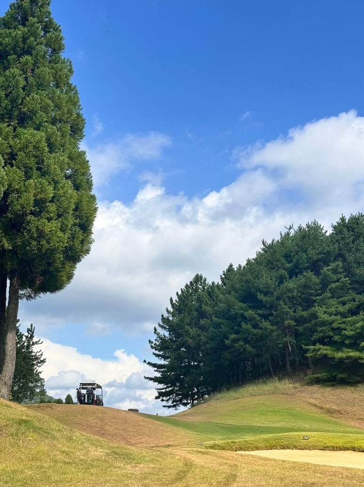
전날 밤 1시까지 술을 마셨다. 새벽 5시에 눈이 떠졌다. 신라면으로 해장하고 골프장으로 향했다. 골프 여행이란 원래 이런 것이다. 골프장 앞 편의점에 들렀다가 음료 코너에서 오타니를 만났다. 일본이라는 나라가 또 한 번 부러워지는 순간이었다. 더 클래식GC 클럽하우스는 유럽 고급 리조트를 연상케 하는 외관이다. 높은 층고, 통창으로 쏟아지는 햇살, 우드톤 인테리어. 환대가 과하지 않으면서 격이 있다. 그러나 스타트하우스를 나서는 순간부터 분위기가 달라진다. 나카무라 쿄지가 설계한 125만 평방미터 부지의 18홀. 탁 트인 페어웨이가 장타를 유혹하지만, 그린 주변에 다가갈수록 설계자의 의도가 드러난다. 워터 해저드는 세컨드 샷의 각도를 좁혀오고, 벤트그래스 그린의 언듈레이션은 퍼팅 라인을 번번이 배신한다. 물을 건너야 하는 홀들 — 아웃 7번, 인 11번, 17번 — 에서 바람과 거리를 동시에 통제하지 못하면 스코어를 잃는다. 2023년 규슈 지역 골프장 최초로 JLPGA 인정 코스 타이틀을 받은 곳이다. 그 타이틀이 왜 붙었는지, 18홀을 돌고 나면 몸으로 이해하게 된다. 폭염으로 잔디 컨디션은 아쉬웠다. 그러나 식사를 마치고 다시 코스를 바라보니, 좋은 계절에 다시 오고 싶다는 생각이 자연스럽게 들었다. 그게 이 코스가 가진 힘이다.
Drinking until 1 AM the night before. Awake at 5. Instant ramen for the hangover, then straight to the course. That’s golf travel. Stopped at a convenience store near the club and spotted Ohtani on a drink label. Another moment of quiet envy for this country. The Classic GC’s clubhouse reads like a European luxury resort — high ceilings, sunlight pouring through floor-to-ceiling windows, warm wood-toned interiors. Welcoming without being excessive. There’s a quiet sense of occasion. Then you walk to the first tee, and the tone shifts. 18 holes across 1.25 million square meters, designed by Kyoji Nakamura. Open fairways invite aggression. But approach the greens and the architect’s intentions become clear. Water hazards squeeze the angle on second shots. Bentgrass greens with enough undulation to make confident putting lines disappear. The pivotal water carry holes — Out 7, In 11, In 17 — punish any failure to control both distance and wind direction simultaneously. In 2023, this became the first course in the Kyushu region to receive official JLPGA certification. Play all 18 holes and you’ll understand why that title was earned. The heatwave hurt the turf conditions. But sitting down after the round, looking back out at the course over lunch, the thought came naturally: I want to come back in a better season. That’s what a good course does. MIKA’s Take: If you’ve grown bored of predictable Japanese golf, this is the course that wakes you up. Don’t let the scenery fool you.
前夜は1時まで飲んでいた。朝5時に目が覚めた。辛ラーメンで二日酔いを流し込み、そのままゴ ルフ場へ向かった。ゴルフ旅とはそういうものだ。 コース近くのコンビニに寄ったら、飲料コーナーで大谷翔平に出会った。この国が羨ましくなる瞬 間がまた一つ増えた。 ザ・クラシックGCのクラブハウスは、ヨーロッパの高級リゾートを思わせる外観だ。高い天井、フ ロアから天井まで広がる窓から差し込む陽光、ウッドトーンのインテリア。過剰でなく、しかし品格 がある。 だがスタートハウスを出た瞬間から、空気が変わる。中村協が設計した125万平方メートルの敷 地に広がる18ホール。開放的なフェアウェイが飛距離を誘うが、グリーン周辺に近づくほど設計 者の意図が露わになる。ウォーターハザードはセカンドショットの角度を絞り込み、ベントグラスグ リーンのアンジュレーションはパッティングラインを何度も裏切る。池越えの勝負どころ——アウト 7番、イン11番、17番——では、距離と風向きを同時にコントロールできなければスコアを失う。 2023年、九州地区のゴルフ場として初めてJLPGA認定コースの称号を獲得した場所だ。18ホー ルを回り終えると、そのタイトルが伊達ではないことを体で理解する。 猛暑で芝のコンディションは物足りなかった。しかし食事を終えてコースを振り返ったとき、良い季 節にもう一度来たいという気持ちが自然と湧いてきた。それがこのコースの持つ力だ。 るな。
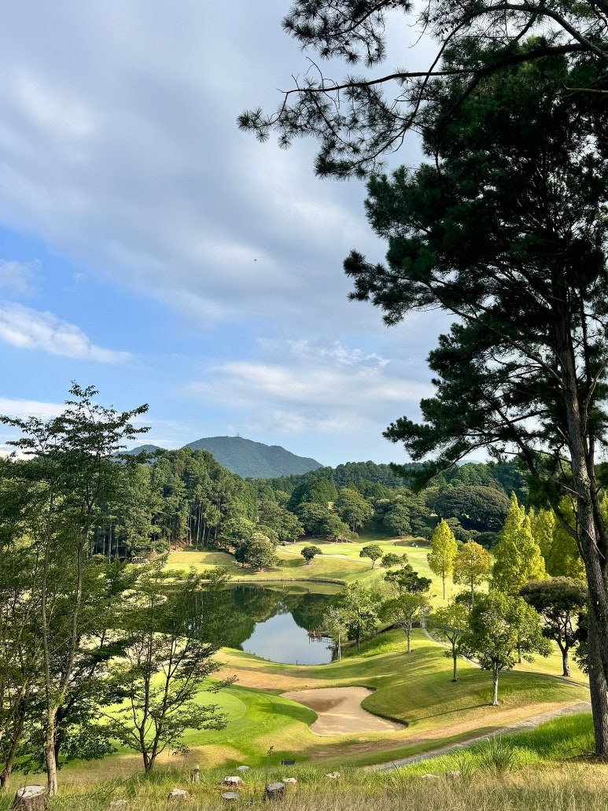
일요일 아침 8시 15분. 스타트하우스 앞에 카트들이 줄지어 있었다. 만원이었다. 이 골프장의 원래 이름은 와카미야GC였다. 2023년 트라이얼 그룹이 인수하면서 ‘트라이얼 & 리조트 와카미야코스’로 이름을 바꿨다. IT와 유통을 결합한 회사로, 규슈 지역 골프장 확장에 공격적으로 나서고 있다. 도큐 그룹의 아소, 오이타 코스도 차례로 품었다. 바뀐 것들이 있다. 클럽하우스 내 무인 편의점, AI 스캔 기술 샵, GPS 강화 카트, 트라이얼 푸드파크 컨셉의 식음 서비스. 노캐디 라운드에 익숙한 한국 골퍼들이 쓰기 편한 시스템으로 빠르게 업그레이드되고 있다. 그렇다고 전부 새것은 아니었다. 기존 물품들은 그대로 쓰면서 운영 중이었다. 깔끔하지만 완벽하진 않은, 과도기의 모습이었다. 코스는 좋았다. 날씨도 그다지 덥지 않아 라운드 내내 차분하게 집중할 수 있었다. 그리고 13번 홀에서 신칸센이 지나갔다. 카메라를 들 틈도 없이 사라져버렸다. 골프장에서 비행기는 많이 봤어도, 신칸센은 처음이었다. 페어웨이 옆으로 빠르게 스쳐 지나가는 그 장면이 이 코스에서 가장 기억에 남는 홀이 됐다. 언젠가 신칸센을 타고 이 코스 옆을 지나가게 된다면, 반대편에서 쓰는 여행기도 남겨야겠다고 생각했다.
Sunday morning, 8:15 AM. The start house was lined with carts. A full house. This course used to be called Wakamiya GC. In 2023, the Trial Group acquired it and rebranded it as Trial & Resort Wakamiya Course. Trial is an IT and retail company aggressively expanding its golf portfolio across Kyushu — the former Tokyu Group courses in Aso and Oita have since followed. The changes are visible. Unmanned convenience store inside the clubhouse, AI scan technology in the pro shop, upgraded GPS carts, and a Trial Food Park concept for dining. The systems are being modernized in ways that make things easier for Korean golfers used to self-play. That said, not everything has been replaced. Legacy equipment from the old operation is still in use. Clean but not immaculate — a club in transition. The course itself was excellent. The weather had cooled off enough to play with focus and composure. And then, on the 13th hole, a Shinkansen passed. Gone before the phone was out. Planes over courses are common enough, but a bullet train was a first. That fleeting moment — the fairway, the green, the Shinkansen cutting through — became the most memorable of the day. Even without a photo. Someday, riding that Shinkansen past this course, the reverse version of this story gets written. MIKA’s Take: Watching the Shinkansen from the fairway. Next time, I’ll write about watching the fairway from the Shinkansen.
日曜日の朝8時15分。スタートハウスの前にカートが列を成していた。満員だった。 このコースはかつて「若宮GC」という名称だった。2023年にトライアルグループが買収し、「トライ アル&リゾート若宮コース」に改名した。ITと流通を融合させた企業で、九州地区へのゴルフ事業 拡大に積極的だ。旧東急グループの阿蘇コース、大分コースも相次いで傘下に収めている。 変わった部分はある。クラブハウス内の無人コンビニ、AIスキャン技術を使ったショップ、GPS性 能を強化したカート、「トライアルフードパーク」コンセプトの飲食サービス。キャディなしのラウンド に慣れた韓国人ゴルファーにも使いやすいシステムへと着実にアップグレードされている。ただ し、すべてが新品というわけではない。旧来の設備もそのまま活用しながら営業していた。清潔 だが完璧ではない——過渡期の姿だった。 コースは良かった。気温もさほど高くなく、18ホールを通して落ち着いて集中できた。そして13番 ホールで、新幹線が通過した。スマホを構える間もなく消えていった。コースの上を飛行機が飛ぶ のは何度も見てきたが、新幹線は初めてだった。フェアウェイの脇を一瞬で駆け抜けていくその 光景が、この日のラウンドで最も印象に残る「一打」になった。写真はないけれど。 いつか新幹線に乗ってこのコースの横を通ることがあれば、今度は逆側からの旅行記を書こうと 思った。
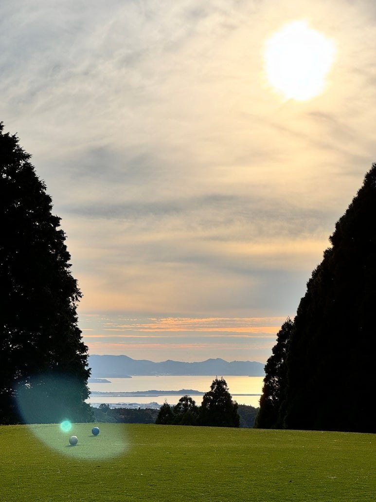
대한항공이 인천-나가사키 직항을 재개했다. 친구들과 바로 비행기표를 끊었다. 원래 예약했던 오션팰리스, 페닌슐라오너즈는 외국인 예약이 안 된다는 걸 뒤늦게 알았다. 무심코 예약한 곳이 오무라만 올드코스였다. 공항에서 15분. 첫날 라운딩으로 이보다 나은 조건이 없었다. 1978년 개장. 최신식의 화려함 대신 오랜 구장 특유의 중후함이 있다. 탁 트인 넓은 페어웨이, 수십 년 된 고목들이 홀을 병풍처럼 감싸고 있다. 오무라만의 잔잔한 바다가 코스 곳곳에서 보인다. 잘 가꾼 정원을 거니는 것처럼 느껴지는 코스다. 1990년에 지어진 뉴코스가 좁은 페어웨이와 고저 차로 도전적이라면, 올드코스는 넓고 평탄하다. 난이도는 무난하다. 거리를 무리하게 내거나 위험을 감수하기보다 바다 절경을 감상하며 느긋하게 칠 수 있는 곳이다. 오랜 지기들과 함께하는 여정에 완벽하게 어울린다. 클럽하우스 레스토랑에서 바다를 내다보며 먹은 나가사키 짬뽕. 지금까지 먹었던 모든 나가사키 짬뽕의 기억을 다 지워버렸다.
Korean Air reopened the Incheon–Nagasaki direct route. Tickets booked immediately. The original reservations at Ocean Palace and Peninsula Owners fell through — foreign guests weren’t eligible without going through a travel agency. Omurawan Old Course became the alternative, almost by accident. Fifteen minutes from the airport. No better option for a first-day round. Opened in 1978. No flashy modernity — the depth and weight of a course that has been standing for decades. Wide open fairways, mature trees lining each hole like a folding screen, the calm waters of Omura Bay visible throughout. Walking the course felt like moving through a well-kept garden. The New Course built in 1990 demands precise ball-striking with narrow fairways and elevation change. The Old Course is wide and flat. The difficulty is manageable. This isn’t a course for aggressive plays or taking risks — it’s for taking in the sea views and swinging freely. The right course for a round with old friends. Nagasaki champon at the clubhouse restaurant, looking out at the water. Every previous version of that dish, forgotten. MIKA’s Take: A 46-year-old course holding the sea. This is where unhurried golf lives.
大韓航空が仁川―長崎の直行便を再開した。すぐに航空券を手配した。当初予約していたオー シャンパレスとペニンシュラオーナーズは、外国人の直接予約が難しいことが後から判明した。 何気なく予約したのが大村湾オールドコースだった。空港から15分。初日のラウンドとしてこれ以 上の条件はなかった。 1978年開場。華やかな新しさではなく、長年にわたって守られてきたコース特有の重厚感があ る。視界の広い広々としたフェアウェイ、数十年を経た大木がホールを屏風のように囲んでいる。 大村湾の穏やかな海がコースのあちこちから見渡せる。手入れの行き届いた庭園を散歩するよ うな感覚だ。 1990年に造られたニューコースが狭いフェアウェイと高低差で挑戦的なら、オールドコースは広く 平坦だ。難易度は無難だ。無理に距離を出したりリスクを冒したりするよりも、目の前に広がる海 の絶景を眺めながらゆったりとクラブを振れる品格がある。旧知の仲間との旅に完璧に似合う コースだ。 クラブハウスのレストランで海を眺めながら食べた長崎ちゃんぽん。これまで食べてきたすべて の長崎ちゃんぽんの記憶を塗り替えた。
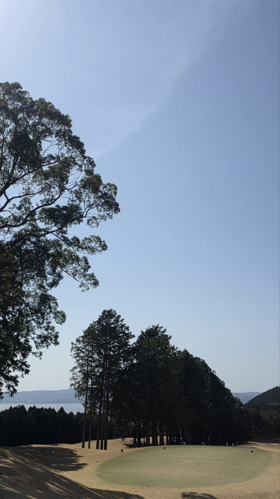
오무라만의 아침. 어제에 이어 오늘도 같은 바다가 우리를 맞아준다. 올드코스와 뉴코스는 아예 다른 골프장이다. 1994년 개장. 설계는 로널드 프림. 삼나무와 편백나무로 홀이 분리되고, 페어웨이에 인공 마운드가 절묘하게 배치된 아메리칸 스타일이다. 아웃코스 5번 홀까지 물이 얽혀 있어 정교한 샷을 요구하는 타깃 골프다. 자연 지형을 그대로 살린 올드코스와는 출발점이 다르다. 굳이 한 곳만 고른다면 뉴코스다. 이 코스의 백미는 파5 5번 홀이다. 빠르고 경사가 심한 그린 주변에 벙커가 13개 배치되어 있다. 일본 골퍼들 사이에서 ‘죽음의 13계단’으로 불리는 홀이다. 벙커에 들어간다고 생각하고 치는 게 정신 건강에 낫다. 3번 홀은 절벽 60미터 아래 오무라만 바다가 내려다보이는 숏컷 티샷 홀이다. 바다와 벙커가 동시에 시야에 들어온다. 골프장 디자이너의 성향은 어디 안 간다. 나는 피트 다이가 좋다. 비가 와서 사진이 몇 장 없다. 그래도 라운딩은 했다. 나가사키 5일 일정 중 3일만 나가사키현에서 쳤다. 나머지 2일은 사가현으로 넘어갔다. 사가현은 대만족이었다. 나가사키 골프만으로는 아쉬움이 남는다. 다음엔 오션팰리스와 페닌슐라를 제대로 예약해서 바닷가 절경을 제대로 즐길 생각이다. 난다.
Omura Bay in the morning. The same water that greeted us yesterday is here again today. The Old and New courses are entirely different golf experiences. New Course opened in 1994, designed by Ronald Fream. Cedar and cypress trees separate the holes, artificial mounds are placed throughout the fairways — a full American style layout. The outward nine through hole 5 weaves water into every approach, demanding target golf with precision. A completely different philosophy from the Old Course’s natural terrain. Given the choice between the two, the New Course wins. The standout hole is the par 5 5th. Thirteen bunkers surround a fast, severely sloped green. Known among Japanese golfers as the “13 Steps of Death.” Best approached with the assumption that a bunker is already waiting. Hole 3 plays from a tee perched 60 meters above the sea. The ball drops toward a green with Omura Bay filling the background. Sea and bunkers in the same frame. Golf course designers never stray far from their instincts. Mine is Pete Dye. Rain kept the photo count low. The round happened anyway. Five days in Nagasaki, only three spent in Nagasaki Prefecture. The other two shifted to Saga. Saga was excellent. Nagasaki golf alone felt incomplete. Next time, Ocean Palace and Peninsula — properly booked, properly played, with the coastline they deserve. MIKA’s Take: Thirteen bunkers protecting one par 5. Knowing not to be greedy doesn’t stop you from being greedy.
大村湾の朝。昨日に続き、今日も同じ海が出迎えてくれる。 オールドコースとニューコースはまったく別のゴルフ場だ。1994年開場。設計はロナルド・フリー ム。杉と檜でホールが仕切られ、フェアウェイには人工マウンドが巧みに配置されたアメリカンス タイルだ。アウトコースの5番ホールまで水が絡み、精巧なショットを要求するターゲットゴルフだ。 自然地形をそのまま活かしたオールドコースとは出発点が異なる。 どちらか一つ選ぶなら、ニューコースだ。 このコースの白眉はパー5の5番ホールだ。速くて傾斜の急なグリーン周辺に13個のバンカーが 配置されている。日本のゴルファーの間で「死の13階段」と呼ばれるホールだ。バンカーに入るこ とを前提にプレーした方が精神衛生上良い。 3番ホールは絶壁60メートル下の大村湾を見下ろすショートカットティショットのホールだ。海とバ ンカーが同時に視野に入る。コース設計者の個性はどこへ行っても変わらない。私はピート・ダイ が好きだ。 雨で写真が数枚しかない。それでもラウンドはした。 長崎5日間の日程のうち、長崎県でプレーしたのは3日だけだった。残り2日は佐賀県へ移動し た。佐賀県は大満足だった。長崎ゴルフだけでは物足りなさが残る。次回はオーシャンパレスと ペニンシュラをきちんと予約して、海岸線の絶景を存分に楽しむつもりだ。 ても、欲張ってしまう。
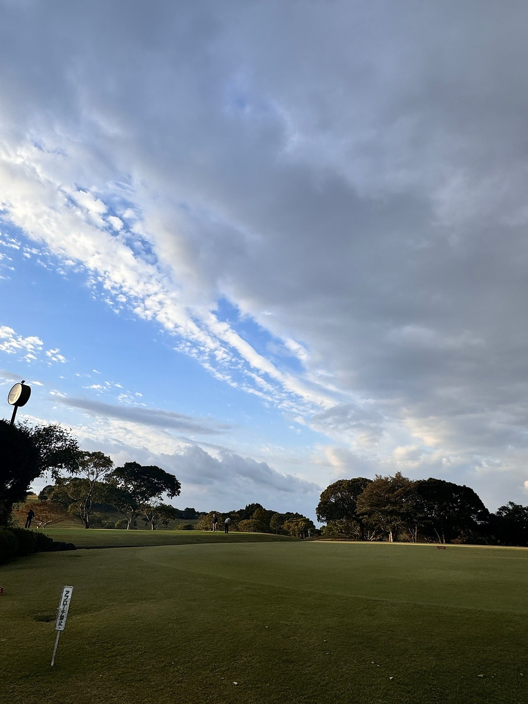
27홀에 점심까지 포함해서 9,800엔. 숫자부터 말하는 게 맞다. 치산 모리야마는 1970년대 일본 골프 대중화 시기에 문을 연 구장이다. PGM이 인수해 운영 중이다. 전통 있는 코스 레이아웃에 현대적인 시스템이 더해진 스테디셀러 구장이다. 귤, 유명, 운젠 세 코스로 구성되어 있다. 코스가 위치한 이사야마는 나가사키현 최대의 평야 지대다. 나가사키에서 가장 맛있는 쌀이 나는 곳이다. 지구 온난화로 규슈산 쌀이 전국적으로 주목받고 있는데, 이사야마 쌀이 그 중심에 있다. 점심 밥 한 공기가 괜히 맛있는 게 아니었다. 운젠 코스에서는 아리아케해가, 아리아케 코스에서는 오무라만이 보인다. 운젠 코스 4번 홀은 바다와 운젠산이 한눈에 들어오는 이 구장의 백미다. 전장이 길지 않지만 구릉지 언듈레이션과 전략적으로 배치된 벙커가 끝없는 재미를 만들어낸다. 27홀을 치면 저녁에 체력 보충이 필요하다. 술과 고기로 마무리했다. 치산 모리야마를 간다면 운젠 코스를 반드시 넣어라. 귤, 유명 코스와는 분위기가 확연히 다르다. 운젠으로 후반전을 마무리하는 게 딱 좋다.
27 holes, lunch included, 9,800 yen. The number comes first. Chisan Moriyama opened during Japan’s golf popularization era in the 1970s. PGM operates it now. A course with traditional layout bones and modern systems layered on top — a reliable, steadily loved local option. Three courses: Yuzu, Yumei, and Unzen. The course sits in Isayama, Nagasaki Prefecture’s largest flatland. The area produces what locals consider the prefecture’s finest rice. With rising temperatures making Kyushu rice more competitive nationally, Isayama’s variety has been getting attention beyond the region. The lunch bowl being unusually good wasn’t a coincidence. The Unzen Course overlooks the Ariake Sea. The Ariake Course looks out over Omura Bay. Hole 4 on the Unzen Course — sea and Mount Unzen in the same frame — is the standout of the entire facility. The yardage isn’t long, but hillside undulation and strategically placed bunkers make every hole worth thinking about. 27 holes demands a proper recovery dinner. Meat and drinks handled that. If visiting Chisan Moriyama, include the Unzen Course. The atmosphere is noticeably different from Yuzu and Yumei. Finishing the back nine on Unzen is the right call. MIKA’s Take: Two seas visible across 27 holes, 9,800 yen. The word “value” doesn’t quite cover it.
27ホール、昼食込みで9,800円。まず数字から言うべきだ。 千産モリヤマは1970年代の日本ゴルフ大衆化の時期に開場したコースだ。PGMが運営してい る。伝統あるコースレイアウトに現代的なシステムが加わった、地元に長く愛されるコースだ。ゆ ず、有明、雲仙の3コースで構成されている。 コースが位置する諫早は長崎県最大の平野地帯だ。長崎で最も美味しい米が採れる場所だ。地 球温暖化により九州産の米が全国的に注目を集める中、諫早の米はその中心にある。昼食のご 飯が妙に美味しかったのは偶然ではなかった。 雲仙コースからは有明海が、有明コースからは大村湾が見渡せる。雲仙コース4番ホールは海と 雲仙山が一望できるこのコースの白眉だ。全長は長くないが、丘陵地特有のアンジュレーション と戦略的に配置されたバンカーが飽きることのない面白さを生み出している。 27ホールを回ると夜は体力補充が必要だ。肉と酒で締めくくった。 千産モリヤマを訪れるなら、雲仙コースを必ず入れること。ゆず、有明コースとは雰囲気が明らか に違う。雲仙で後半を締めくくるのがベストだ。
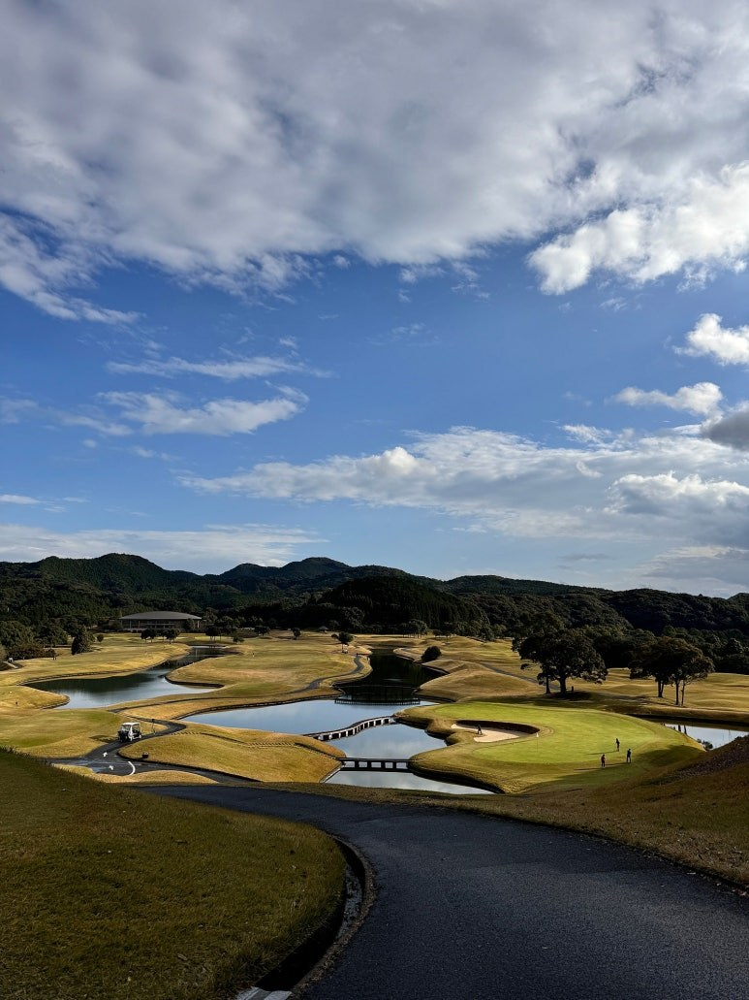
골프 코스 설계의 피카소. 데스몬드 뮤어헤드를 부르는 말이다. 세고비아의 기타 벙커, 후지클래식의 파도 벙커. 그리고 와카키의 용. 이 세 코스의 공통점은 뮤어헤드가 설계했다는 것, 그리고 하늘에서 내려다봐야 비로소 그 의도가 완성된다는 것이다. 와카키 7번홀. 파3. 그린과 연못을 감싸는 벙커 배치는 용의 머리를 형상화한다. 거리는 짧다. 하지만 바람이 부는 날이면 클럽 선택부터 다시 계산해야 한다. 그린을 놓치면 꽃잎처럼 펼쳐진 벙커가 공을 받아낸다. 피하면 롱퍼트. 잡으면 벙커. 뮤어헤드의 설계는 언제나 이런 식으로 골퍼를 압박한다. 단순히 예쁜 코스가 아니다. 페어웨이 안에서는 수목을 최소화했다. 대신 그린 주변에 모든 위협을 집약했다. 모굴 지형 위로 펼쳐지는 풍경은 수묵화처럼 조용하지만, 스코어카드는 조용하지 않다. 클럽하우스에서 코스 전경이 내려다보인다. 그 자체로 이미 하나의 그림이다. 일본에 이런 설계가의 코스가 여럿 남아 있다는 것, 그것만으로도 이 나라의 골프는 다른 이유가 생긴다.
Golf course design’s Picasso. That’s what they call Desmond Muirhead. Segovia’s guitar bunker, Fuji Classic’s wave bunker. And Wakaki’s dragon. Three courses, one designer — and all of them demand to be seen from above before their full intent reveals itself. Hole 7 at Wakaki. Par 3. The bunker arrangement wrapping the green and pond takes the shape of a dragon’s head. The yardage looks manageable. But on a windy day, you’re recalculating your club selection from scratch. Miss the green and the petal-like bunkers collect your ball without mercy. Lay up and you’re facing a long putt. Muirhead’s designs always work this way — every option comes with a cost. This isn’t just a pretty course. Tree coverage inside the fairways is deliberately minimal. All the threat is concentrated around the greens. The mounded terrain unfolds like an ink wash painting — quiet to look at, unforgiving to score on. The clubhouse overlooks the entire course. It reads like a single composition. That Japan has preserved several courses like this is reason enough to keep coming back. MIKA’s Take: The dragon guards the green. If there’s a hole where admiration should come before strategy, it’s this one.
ゴルフコース設計のピカソ。デズモンド・ミュアヘッドに与えられた称号だ。 セゴビアのギターバンカー、富士クラシックの波バンカー。そして若木の龍。三つのコースに共通 するのは、ミュアヘッドが設計したということ、そして上空から眺めて初めてその意図が完成する ということだ。 若木の7番ホール。パー3。グリーンと池を取り囲むバンカー配置は、龍の頭を形象化している。 距離は短い。しかし風が吹けば、クラブ選択をゼロから計算し直す必要がある。グリーンを外せ ば、花びらのように広がるバンカーが容赦なくボールを受け止める。避ければロングパット。捕ま ればバンカー。ミュアヘッドの設計は、いつもこうしてゴルファーを追い詰める。 ただ美しいコースではない。フェアウェイ内の樹木は意図的に最小限に抑えられている。その代 わり、グリーン周りにあらゆる脅威が集約されている。マウンド地形の上に広がる風景は水墨画 のように静かだが、スコアカードは静かではない。 クラブハウスからコース全景が見渡せる。それ自体がすでに一枚の絵だ。日本にこれほどの設 計家のコースがいくつも残されているという事実だけで、この国のゴルフには別の理由が生まれ る。 こだ。
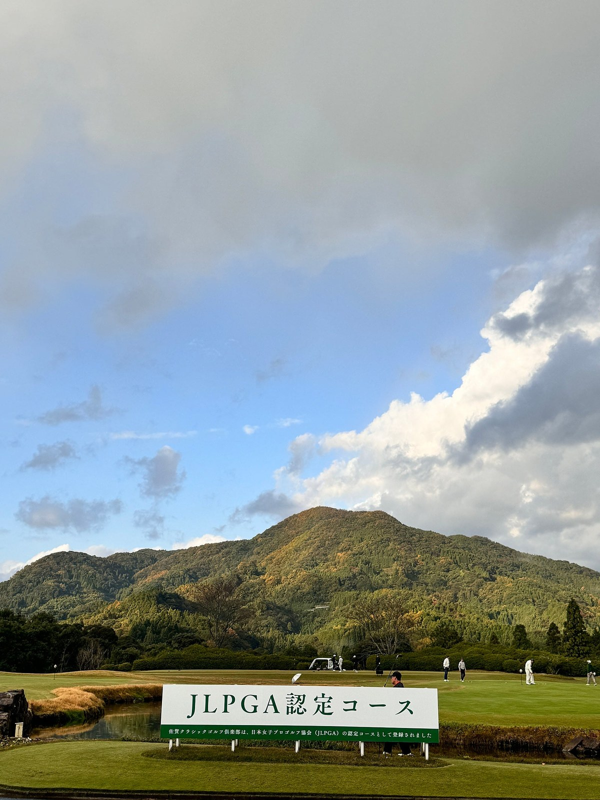
후쿠오카 근처에는 ‘클래식 매니지먼트 클럽’이 운영하는 세 곳이 있다. 니시니혼 컨트리클럽, 더클래식 골프클럽, 사가클래식 골프클럽. 각자의 컬러는 다르지만 코스에 서면 묘한 데자뷰가 온다. 톤앤매너가 일치하기 때문이다. 사가클래식GC는 그 셋 중에서도 가장 조용히 명성을 쌓아온 곳이다. 1996년 개장. 설계는 나카무라 요시하루. 스즈키 쇼이치에게 사사한 그는 자연 지형을 거스르지 않으면서 매 홀마다 새로운 판단을 요구하는 코스를 만든다. 30년 가까운 세월이 지났지만 구릉지 코스의 정통성은 그대로다. 큐슈 오픈 선수권을 두 차례 개최했고, 2023년에는 JLPGA 공인 코스로 인증받았다. 8,500엔짜리 코스가 해온 일치고는 묵직하다. 코스보다 오래 기억에 남는 게 있다. 라운드 후 욕장이다. 물에 닿는 순간 피부가 미끈거린다. 처음엔 낯설다. 이내 익숙해지면서 이게 바로 그거구나 싶어진다. 사가클래식이 위치한 지역은 다케오 온천과 우레시노 온천의 접경이다. 일본 3대 미인 온천으로 꼽히는 다케오와 같은 수질. 나트륨 탄산수소염이 풍부한 약알칼리성 천연 온천수가 각질을 녹이고, 자외선에 지친 피부에 수분을 돌려준다. 목욕 후에도 피부가 당기지 않는다. 산악 지형을 18홀 걸어 나온 몸에, 이 물이 닿으면 아쉬운 스코어 같은 건 그냥 씻겨 내려간다. 골프, 온천, 나마비루. 순서대로 하면 된다. 가지가 다 된다.
Near Fukuoka, Classic Management Club operates three courses: Nishinihon Country Club, The Classic Golf Club, and Saga Classic Golf Club. Each has its own character, but step onto any of them and a familiar feeling sets in. The tone is consistent across all three. Saga Classic is the quietest achiever of the group. Opened in 1996, designed by Nakamura Yoshiharu — a protégé of the renowned Suzuki Shoichi — the course works with the natural terrain rather than against it, demanding a different decision at every hole. Nearly three decades later, the integrity of its hillside layout remains intact. It has hosted the Kyushu Open Championship twice, and in 2023 received official JLPGA certification. For an 8,500-yen green fee, that’s a serious résumé. But what stays with you longer than the course is the bath. The moment water touches your skin, it feels different — smooth in a way that takes a second to register. Saga Classic sits in the boundary zone between Takeo and Ureshino, two of Kyushu’s most celebrated hot spring areas. The water here shares the same quality as Takeo Onsen, listed among Japan’s top three beauty hot springs. Rich in sodium bicarbonate, mildly alkaline, it softens dead skin, replenishes moisture stripped by sun and wind, and leaves nothing tight or dry afterward. After 18 holes on a demanding mountain course, that water does exactly what it needs to. Golf, onsen, cold draft beer. In that order. MIKA’s Take: The course wears you down. The onsen brings you back. Saga Classic delivers both.
福岡近郊に、クラシックマネジメントクラブが運営する三つのコースがある。西日本カントリークラ ブ、ザ・クラシックゴルフクラブ、そして佐賀クラシックゴルフクラブ。それぞれに個性はあるが、 コースに立つとどこか既視感がある。トーン＆マナーが一致しているからだ。 佐賀クラシックGCは、その中でも最も静かに実績を積み上げてきたコースだ。1996年開場。設 計は中村義治。鈴木省一に師事した彼は、自然地形を活かしながら、毎ホールごとに異なる判 断を求めるコースを作る。30年近くが経った今も、丘陵地コースの正統性は揺らいでいない。九 州オープン選手権を二度開催し、2023年にはJLPGA公認コースとして認定された。8,500円のグ リーンフィーにしては、重厚な経歴だ。 しかし、コース以上に長く記憶に残るものがある。ラウンド後の浴場だ。 水に触れた瞬間、肌がぬるっとする。最初は戸惑う。すぐに、ああこれがそうかと合点がいく。佐 賀クラシックが位置するのは、武雄温泉と嬉野温泉の境界地帯。日本三大美人の湯に数えられ る武雄と同じ水質。重炭酸ナトリウムが豊富な弱アルカリ性の天然温泉水が角質を溶かし、紫外 線で疲れた肌に潤いを取り戻す。入浴後も肌が突っ張らない。 山岳地形の18ホールを歩き切った身体に、この湯が触れると、悔しいスコアなどはただ流れ落ち ていく。 ゴルフ、温泉、生ビール。この順番でいい。 る。
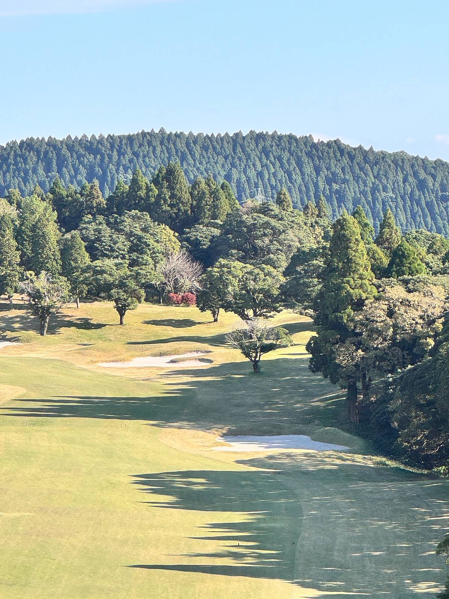
미야자키, 가고시마는 1~2월에 한국 골퍼들이 가장 많이 찾는 지역이다. 한국에서 골프 치기 어려운 시기라서 그렇다. 하지만 시즌 중에 오면 더 좋다는 걸 각종 리뷰에서 확인했다. 그래서 12월 전인 11월에 찾았다. 출발 며칠 전 사쿠라지마 화산 소식이 들렸다. 가야 하나 말아야 하나. 활화산이니 오히려 활동이 없는 게 더 큰일이 터질 수 있다고 긍정 회로를 돌렸다. 걱정은 달나라로 보내고 출발했다. 11월인데 15도 전후. 얇은 긴팔 하나로 충분했다. 생각보다 따뜻했다. 가고시마현은 베이스캠프 잡기가 쉽지 않다. 남북으로 길게 뻗어 있어 이동 거리가 상당하다. 텐몬칸을 베이스로 잡았다. 운전을 즐기는 메이트들이 있으니 가능한 선택이었다. 시마즈GC는 전형적인 클래식 일본 골프장이다. 파4는 한두 홀 빼고 평균 330~340미터. 파3, 파5는 무난하다. 파5 중 한 홀은 투온이 가능하다. 평일 7,000엔대 수준의 골프장 중에서는 관리가 잘 된 편이었다. 코스도 무난했다. 호텔 주차료가 1,000~1,100엔인데 근처 100미터 이내 주차장을 찾아보니 하루 500~900엔짜리가 있었다. 총 15,000원 정도 절약했다. 이상하게 이런 소액 절약이 기분을 참 좋게 한다.
Miyazaki and Kagoshima draw the most Korean golfers in January and February — largely because playing at home becomes difficult in winter. Reviews consistently noted that visiting during the actual season makes the courses significantly better. November, just ahead of December, seemed like the right call. A few days before departure, news came of activity at Sakurajima volcano. Should we go or not. The logic settled quickly: it’s an active volcano, so no activity at all might signal something worse. Worry sent to the moon, departure went ahead. Mid-November, around 15 degrees. A single thin long-sleeve was enough. Warmer than expected. Kagoshima Prefecture isn’t easy to navigate as a base. The land stretches long from north to south, and distances add up. Tenmonkan became the home base — manageable with drivers who enjoy being on the road. Shimazu GC is a textbook classic Japanese course. Par 4s average 330 to 340 meters outside of a couple of exceptions. Par 3s and 5s are straightforward. One of the par 5s is reachable in two. Among courses in the weekday 7,000-yen range, the maintenance level was above average. The layout delivered what it promised. Hotel parking ran 1,000 to 1,100 yen per night. A parking lot within 100 meters of the hotel came in at 500 to 900 yen per day. Saved roughly 15,000 won total. Somehow small savings like that improve the entire mood of a trip. MIKA’s Take: Played golf next to an active volcano. Leaving the worry on the moon was the right call.
宮崎と鹿児島は、1〜2月に韓国のゴルファーが最も多く訪れる地域だ。韓国でゴルフが難しい時 期だからこそ訪れるわけだが、シーズン中に来ればさらに良いコースだということを各種レビュー で知った。12月になる前の11月に訪れることにした。 出発数日前、桜島火山の活動のニュースが届いた。行くべきか否か。活火山だから、活動がな い方がむしろ大きな噴火の前触れかもしれないとポジティブに考えた。心配は月に送り出して出 発した。 11月なのに気温は15度前後。薄い長袖一枚で十分だった。思ったより暖かかった。 鹿児島県はベースキャンプを決めるのが難しい。南北に長く伸びているため、移動距離がかなり ある。天文館をベースにした。運転が苦にならないメンバーがいるからこそできる選択だった。 島津GCは典型的なクラシック日本ゴルフ場だ。パー4は1〜2ホールを除いて平均330〜340メー トル。パー3とパー5は無難だ。パー5の中の1ホールは2オンが狙える。平日7,000円台のゴルフ 場の中では管理が行き届いており、コースも無難だった。 ホテルの駐車料金が1,000〜1,100円のところ、100メートル以内の駐車場を調べると1日500〜 900円のところがあった。合計で約15,000ウォン節約できた。なぜかこういった少額の節約が気 分をとても良くする。
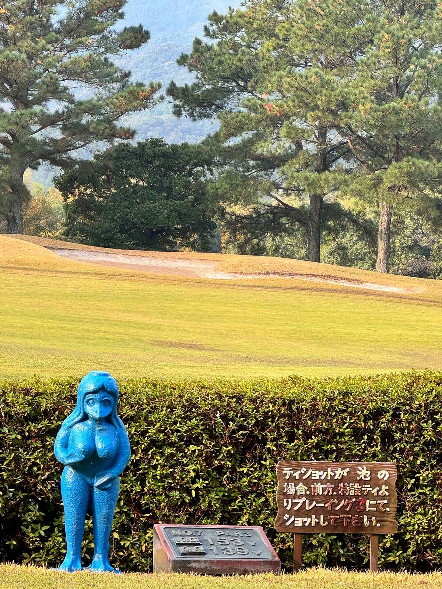
공항에서 가까운 미조베CC. 텐몬칸에서 다시 북쪽으로 올라갔다. 오늘 라운드를 마친 후 동반자 친구의 기리시마 별장에서 하룻밤 묵을 예정이었다. 크게 기대하지 않고 들어섰다. 클럽하우스를 들어서는 순간 생각이 바뀌었다. 시골 골프장이 어떻게 노력하면 이렇게 될 수 있는지. 한국 골프장들이 벤치마킹해도 좋을 곳이다. 1994년 개장. 설계가 코바야시 히로이치. 자연 지형을 최대한 살린 코스다. 30년이 지나면서 나무들이 울창해져 숲속 골프장 같은 분위기가 됐다. 매년 철저한 관리와 리노베이션으로 미야자키-가고시마 접경 지역을 대표하는 코스로 명성을 이어오고 있다. 페어웨이에 발을 딛는 순간 잔디가 다르다는 걸 느낀다. 촘촘한 고려잔디가 공을 살짝 띄워주는 느낌이다. 아이언 샷 타구감이 일품이다. 벤트그라스 그린은 빠르고 미세한 언듈레이션이 있어 퍼팅의 묘미를 느낄 수 있다. 워터 해저드와 깊은 벙커, 숲이 만드는 도그렉 홀들이 18홀 내내 집중력을 요구한다. 7번 홀 파3 티박스 옆에 파란색 갓파 조각상이 서 있다. 물가에 사는 일본 전설 속 요괴다. 연못 해저드 앞에서 골퍼들의 긴장을 풀어주는 골프장의 위트다. 공이 연못에 빠지면 갓파가 가져간 거라고 생각하면 된다. 클럽하우스 샵에 자체 브랜드 굿즈가 눈에 띄었다. 모자, 파우치, 볼마커, 골프백까지. 디자인이 세련됐다. “오늘 미조베에서 쳤다”는 기억을 남기고 싶어지는 물건들이다. 거리목만 믿고 치면 거리가 안 맞는다. 반드시 거리측정기를 써야 한다. 일본 골프장 공통 주의사항이다. 전반후반 모두 연못을 낀 홀들이 골프장의 다양한 뷰를 만들어준다. 7,580엔에 이 수준이면 다시 오고 싶은 이유가 충분하다. 수밖에 없다.
Mizobe CC sits close to the airport. The route went back north from Tenmonkan. After the round, the plan was to stay the night at a friend’s villa near Kirishima. Expectations were modest going in. That changed at the clubhouse entrance. A rural course maintaining this standard takes real commitment. Worth studying for anyone running a golf facility back home. Opened in 1994, designed by Kobayashi Hirokazu. The layout follows the natural terrain closely. Thirty years on, the trees have grown dense enough to give the course the feel of a forest retreat. Annual renovation and consistent maintenance have kept its reputation as a leading strategic course in the Miyazaki-Kagoshima border region. The turf announces itself the moment you step onto the fairway. Tightly packed Korean-style grass gives the ball a slightly elevated lie. Iron shots feel exceptional. Bentgrass greens run fast with subtle undulation — putting requires feel and attention. Water hazards, deep bunkers, and dogleg holes shaped by the surrounding forest demand focus throughout all 18 holes. Beside the tee box on the par 3 seventh hole stands a blue kappa sculpture — a creature from Japanese folklore said to inhabit waterways. In front of a pond hazard, the golf course’s sense of humor is clear. If the ball finds the water, the kappa took it. The pro shop carries its own branded merchandise — caps, pouches, ball markers, golf bags. Clean design throughout. The kind of items that make you want to remember the round. One consistent note for Japan: distance markers don’t always match actual yardages. A rangefinder is essential, not optional. Pond-side holes on both nines create varied views across the course. At 7,580 yen for this level, there’s every reason to come back. MIKA’s Take: The blue kappa guards the pond. The only way to keep your ball is to hit it straight.
溝辺CCは空港に近い。天文館から再び北へ向かった。今日のラウンドを終えた後、同伴者の旧 友が霧島に持つ別荘で一泊する予定だった。 大きな期待はしていなかった。クラブハウスに入った瞬間、考えが変わった。地方のゴルフ場がこ れほどの努力をしてこの水準を維持しているとは。韓国のゴルフ場もベンチマークする価値があ る。 1994年開場、設計は小林洋一。自然地形を最大限に生かしたコースだ。30年が経ち、木々が鬱 蒼と茂り、まるで森の中のゴルフ場のような雰囲気になっている。毎年の徹底したリノベーション と管理により、宮崎・鹿児島の接境地域を代表する戦略型コースとしての名声を30年以上守り続 けている。 フェアウェイに足を踏み入れた瞬間、芝の違いを感じる。촘촘한 高麗芝がボールをわずかに浮 かせるような感触だ。アイアンショットの打球感が格別だ。ベントグラスのグリーンは速く、微細な アンジュレーションがあってパッティングの醍醐味を存分に味わえる。ウォーターハザード、深い バンカー、森が作るドッグレッグホールが18ホールを通じて集中力を求めてくる。 7番ホールのパー3ティボックス脇に、青いカッパの彫像が立っている。水辺に棲むという日本の 伝説上の妖怪だ。池のハザードの前で、ゴルファーの緊張を解くゴルフ場のウィットだ。ボールが 池に落ちたら、カッパが持っていったと思えばいい。 クラブハウスのショップには自社ブランドのグッズが並んでいた。帽子、ポーチ、ボールマーカー、 ゴルフバッグまで。デザインが洗練されている。「今日、溝辺でプレーした」という記憶を残したくな る品々だ。 距離標識だけを信じてプレーすると距離が合わないことが多い。距離測定器は必須だ。日本の ゴルフ場共通の注意点だ。 前後半ともに池を挟んだホールが多く、見る方向によってコースのさまざまな景色を楽しめる。 7,580円でこの水準なら、また来たいと思うには十分な理由がある。 ない。
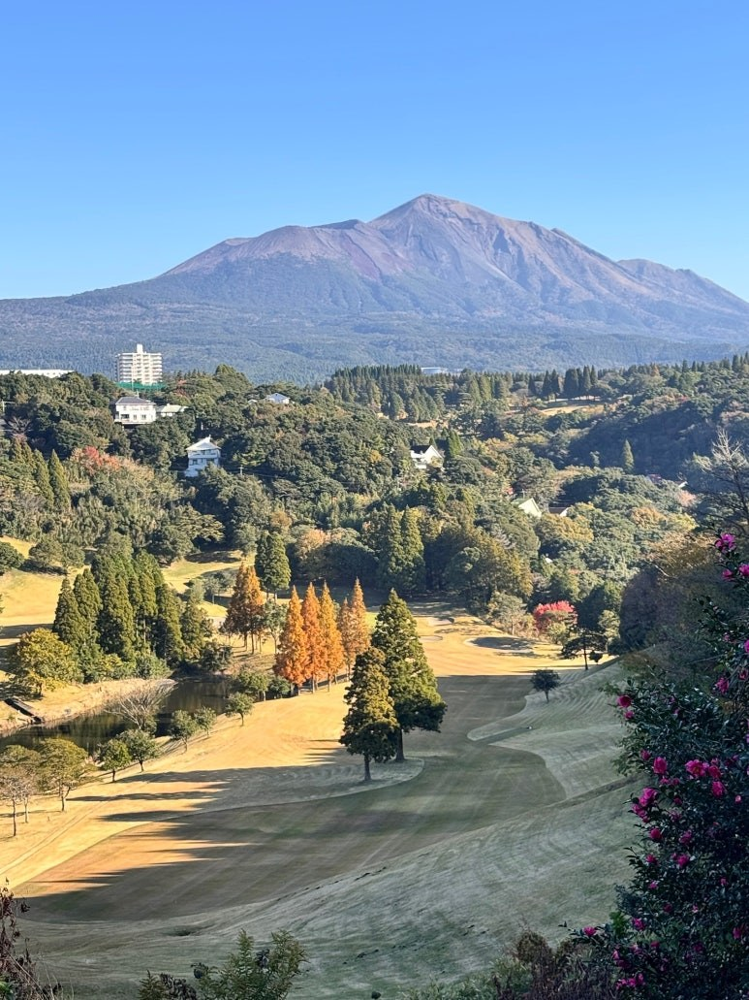
가고시마와 미야자키 경계, 기리시마 연봉 품에 안긴 골프장이다. 티박스에 서면 다카치호봉이 정면으로 펼쳐진다. 일본 건국 신화에서 신이 처음 지상으로 내려왔다는 천손강림의 성지다. 공을 치는 것이 아니라 대자연의 기개에 도전한다는 표현이 더 어울리는 곳이다. 동반자 지인이 은퇴 후 다카치호CC에서 계약직으로 근무하며 바로 옆 별장에 살고 있었다. 그 인연으로 방문하게 됐다. 결론은 아주 성공적이었다. 직원들에게는 한 달에 3번까지 3,000엔에 라운딩을 제공하고, 4회부터는 무료라고 한다. 10만원으로 최대 8회 라운딩이 가능하다. 골프장에 취직하고 싶다는 생각이 절로 들었다. 지금까지 다녀본 일본 골프장 중 가장 남성적인 코스다. 라운딩 중에 기리시마 화산 활동을 눈앞에서 볼 수 있다. 자연 앞에 인간이란 그냥 소소한 존재일 뿐이라는 걸 18홀 내내 실감했다. 라운딩 후 온천이 압권이었다. 대욕장 문을 여는 순간 압도적인 높이의 목재 대들보와 전면 유리창 너머로 다카치호봉이 펼쳐진다. 거친 화산석 욕조에 몸을 담그고 신의 산을 바라볼 때, 비로소 다카치호에서의 라운딩이 완성된다. 10분만 있어도 피로가 풀리면서 동시에 쌓이는 신기한 경험이었다. 20분이면 모든 피로가 사라진다. 다카치호CC에서 나오는 온천수가 파이프로 인근 별장까지 연결된다. 온천권만 사면 집집마다 온천이 나온다. 유황 냄새가 워낙 강해서 문을 열어놓고 즐겼다. 밤에는 별이 보였다. 저녁은 닭사시미, 방어, 참치, 흑돼지 샤브샤브, 중면우동. 아침은 하동육계장으로 해장. 고구마소주가 풍미 좋고 뒷끝이 없었다. 가고시마에 좋은 골프장이 많지만 다카치호는 일본 골프장 중 반드시 가봐야 할 곳이다. 체험이다.
On the border of Kagoshima and Miyazaki, set within the Kirishima mountain range. Standing on the tee box, Takachiho Peak fills the view directly ahead — the sacred site where, according to Japanese creation myth, the gods first descended to earth. Playing golf here feels less like sport and more like a confrontation with something much larger. A contact at the course — a friend of one of the group, working there in retirement and living in a villa directly adjacent — made this visit possible. It turned out to be one of the best decisions of the trip. Staff at the course play for 3,000 yen up to three times a month, and free from the fourth round onward. Eight rounds possible for around 100,000 won. The thought of working there crossed the mind. The most masculine course visited in Japan so far. Active volcanic activity on the Kirishima range is visible during the round. Standing in front of that, a person is a small thing. That feeling doesn’t leave for all 18 holes. The bath after the round was something else entirely. Opening the door to the main bath: exposed timber beams overhead, floor-to-ceiling glass, Takachiho Peak framed beyond. Settling into a rough volcanic stone tub with the mountain in view — that’s when the round feels complete. Ten minutes in and fatigue lifts while simultaneously building. Twenty minutes and it’s all gone. The course’s hot spring water runs through pipes to the nearby villas. Buy a water rights subscription and the onsen comes to the house. The sulfur smell was strong enough to require the window open. Clear skies that night — stars visible. Dinner: chicken sashimi, yellowtail, tuna, Kurobuta shabu-shabu, thick udon. Morning: haejangguk for the recovery. Sweet potato shochu, clean finish, no aftereffects. Kagoshima has many fine courses. Takachiho is the one that must be on the list. MIKA’s Take: A volcanic view from the tee box, a sacred mountain from the bath. Takachiho isn’t just a golf course — it’s an experience.
鹿児島と宮崎の境、霧島連峰の懐に抱かれたゴルフ場だ。ティボックスに立つと、高千穂峰が正 面に広がる。日本の建国神話で神が初めて地上に降り立ったとされる天孫降臨の聖地だ。ボー ルを打つというより、大自然の気概に挑むという表現の方が相応しい場所だ。 同伴者の知人が定年退職後に高千穂CCで契約社員として働きながら、すぐ隣の別荘に住んで いた。その縁で訪れることになった。結果は大成功だった。 スタッフは月3回まで3,000円でラウンドでき、4回目以降は無料とのこと。10万ウォンで最大8ラウ ンドが可能だ。ここで働きたいという気持ちが自然と湧いてきた。 これまで訪れた日本のゴルフ場の中で、最も男性的なコースだ。ラウンド中に霧島の火山活動を 目の前で見ることができる。大自然の前では人間などちっぽけな存在に過ぎないということを、18 ホールを通じて実感した。 ラウンド後の温泉が圧巻だった。大浴場のドアを開けた瞬間、圧倒的な高さの木製の梁と全面ガ ラスの向こうに高千穂峰が広がる。粗削りな火山岩の浴槽に身を沈め、神の山を眺めるとき、高 千穂でのラウンドが完成する。10分浸かるだけで疲れが取れると同時に蓄積されるという不思議 な体験だった。20分いれば、すべての疲れが消える。 高千穂CCの温泉水はパイプで近隣の別荘まで引かれている。温泉権を購入すれば各家庭に温 泉が出る。硫黄の匂いが強烈で、窓を開けて楽しんだ。 夜は星が見えた。夕食は鶏刺し、ブリ、マグロ、黒豚しゃぶしゃぶ、中太うどん。朝は解宮チゲで 回復。芋焼酎は風味が良く、翌朝もすっきりしていた。 鹿児島には良いゴルフ場が多いが、高千穂は日本のゴルフ場の中で必ず訪れるべき場所だ。 体験だ。
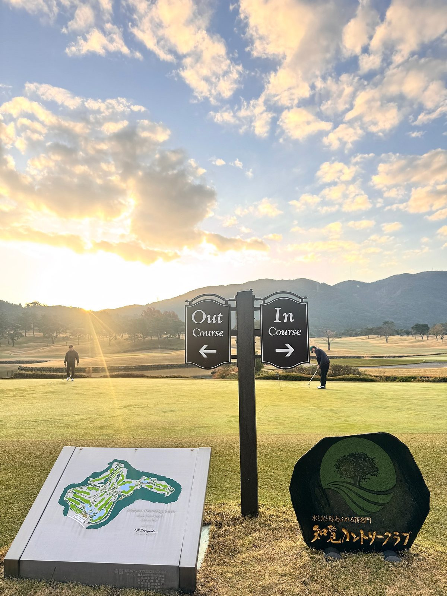
7시 전에 도착한 지란CC. 하늘에서 내려준 선물 같은 풍경이었다. 사진 한 장으로 다 표현하기 어렵지만, 그 한 장이 충분히 말해준다. 1991년 개장. 전장 7,059야드, 파72. 구릉 코스다. 큐슈의 맑은 햇살과 푸른 숲이 빚어내는 경관은 걷는 것만으로도 마음이 편안해진다. ‘물과 빛, 녹음이 넘치는 신명문’이라는 슬로건이 과하지 않다. 설계는 고바야시 미츠아키. 티박스에 서면 넓고 평탄해 보이는 페어웨이가 안심시킨다. 막상 들어가 보면 다르다. 미세한 언듈레이션, 절묘하게 배치된 해저드, 가고시마 특유의 바람이 매 순간 새로운 전략을 요구한다. 초보자에게는 넉넉한 길을 내어주면서 상급자에게는 정교한 샷과 두뇌 플레이를 시험한다. 첫 홀 카트로 이동하는데 페어웨이에 2팀이 있었다. 당연히 파5인 줄 알았다. 도착하니 파4였다. 투온 욕심을 냈다. 앞바람에 오르막. 2팀이 있었던 이유가 분명히 있었다. 이번 여행 내내 좋지 않았던 장요근이 이날 최악의 상태였다. 몇 홀은 아예 치지 못했다. 그래도 평지에 가까운 지형이라 걷기는 수월했다. 경관이 너무 아름다워서 푸른 잔디로 뒤덮이는 시기에 오면 더 예쁠 것이다. 여성 골퍼들도 선호할 코스다. 워터 해저드의 배치가 시각적으로 아름다우면서 심리적 압박도 동시에 준다. 숲을 가로지르는 바람을 계산하고 핀에 공을 붙였을 때의 짜릿함은 이루 말할 수 없다. 코스의 완성도와 자연경관이 기분 좋게 맞아떨어지는 곳이다. 몇 번을 다시 와도 질리지 않을 구장이다.
Arrived before 7 AM. The view was something close to a gift from the sky. One photograph can’t capture all of it, but one photograph says enough. Opened in 1991. 7,059 yards, par 72. A rolling hillside course. Kyushu sunlight filtered through green forest — walking the fairways alone is enough to settle the mind. The course’s tagline, “a new prestige course overflowing with water, light, and greenery,” earns its claim. Designed by Kobayashi Mitsuaki. Tee boxes offer wide, seemingly flat fairways that invite confidence. Step onto the course and that changes. Subtle undulation, precisely placed hazards, and the wind particular to Kagoshima demand a new calculation at every shot. The layout gives beginners room to breathe while testing advanced players with precision and course management. On the way to the first tee, two groups were visible on the fairway. Assumed par 5. Arrived to find par 4. Decided to go for the green in two anyway. Headwind, uphill. The two groups ahead had their reasons. A hip flexor issue that had been building throughout the trip reached its worst on this day. Several holes went unplayed. The relatively flat terrain made walking manageable at least. The course in full green season would be even more beautiful than this. Women golfers would find it a natural fit. Water hazards add visual beauty and psychological pressure in equal measure. Calculating the wind through the forest and landing a shot close to the pin — there’s a specific satisfaction in that which stays with you. Course quality and natural scenery come together here in a way that feels effortless. A course worth returning to regardless of how many times you’ve been. MIKA’s Take: The body was at its worst. The course was at its most beautiful. Chiran is that kind of place.
7時前に到着した知覧CC。まるで天から与えられた贈り物のような風景だった。一枚の写真です べてを表現するのは難しいが、その一枚で十分に伝わる。 1991年開場。全長7,059ヤード、パー72。丘陵コースだ。九州の澄んだ陽光と青い森が織りなす 景観は、歩くだけで心が穏やかになる。「水と光、緑あふれる新名門」というスローガンは大げさ ではない。 設計は小林光昭。ティボックスに立つと、広く平坦に見えるフェアウェイが安心感を与える。コー スの中に入ると違う。微細なアンジュレーション、絶妙に配置されたハザード、鹿児島特有の風が 毎瞬間新たな戦略を求めてくる。初心者には余裕を与えながら、上級者には精巧なショットと頭 脳プレーを試すコースだ。 1番ホールへカートで向かう途中、フェアウェイに2組が見えた。当然パー5だと思った。到着する とパー4だった。2オンを狙おうとした。向かい風、上り傾斜。2組がいた理由には必ず訳があっ た。 今回の旅を通じて悩まされていた腸腰筋の問題が、この日最悪の状態になった。いくつかのホー ルはまったくプレーできなかった。平地に近い地形のおかげで歩くのは楽だった。青々とした芝に 覆われる季節に来ればさらに美しいだろう。女性ゴルファーにも好まれるコースだ。 ウォーターハザードの配置が視覚的な美しさと心理的なプレッシャーを同時に生み出している。 森を渡る風を読み、ピンにボールを寄せたときの爽快感は言葉にならない。 コースの完成度と自然景観が心地よく噛み合っている場所だ。何度来ても飽きないコースだ。
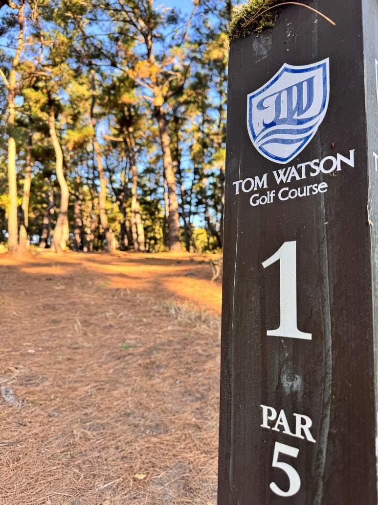
가고시마 이후 계속된 장요근 문제. 톰왓슨에 도착해서 코스를 보는 순간 알았다. 정상 컨디션이 아니고서는 오늘 라운드가 힘들겠다는 걸. 예상보다 더 힘들게 18홀을 마쳤다. 미야자키는 1~2월 일본 골프의 정답이다. 제주도 남쪽에 위치해 따뜻하고, 시내에서 20~30분이면 수준급 골프장에 닿는다. 9시~9시 30분 티오프가 겨울 미야자키의 황금 시간대다. 이번 여행도 세 라운드 모두 그 시간대로 잡았다. 1번 홀부터 18홀 내내 페어웨이 바깥은 흑송으로 가득하다. 코스가 단조롭고 지루한 느낌을 준다. 그린은 달랐다. 홀마다 그린 스피드가 달랐고, 라이가 생각보다 덜 먹어서 퍼팅마다 고민이 필요했다. 그게 유일한 전략적 재미였다. 벙커 배치나 전체 홀 구성을 보면서 피트 다이 코스들이 그리워졌다. 명성에 비해 전체적으로 아쉬움이 남는 곳이었다. 흑송 일색의 풍경은 사진도 지루하게 만든다.
The hip flexor issue that started in Kagoshima hadn’t resolved. Arriving at Tom Watson GC and reading the course layout made it clear: this round was going to be difficult without full fitness. It ended up harder than expected across all 18 holes. Miyazaki in January and February is the right answer for winter golf in Japan. Positioned south of Jeju Island in latitude, it stays warm. Courses sit twenty to thirty minutes from the city center. The 9 to 9:30 AM tee time is the sweet spot in winter — used it for all three rounds this trip. From the first hole to the eighteenth, the rough beyond the fairway is dense Japanese black pine. The layout reads as monotonous throughout. The greens offered something different — speed varied hole to hole, and the breaks held less than expected, which kept putting interesting. That was where the strategic engagement lived. Looking at the bunker placement and overall hole design, the Pete Dye courses came to mind as a comparison that didn’t favor Tom Watson. A course whose reputation outpaces the experience. The black pine scenery doesn’t do much for the photographs either. MIKA’s Take: Black pine forest is beautiful. Eighteen holes of it starts to feel like a lot.
鹿児島以来続いていた腸腰筋の問題は解消していなかった。トムワトソンGCに到着してコースを 見た瞬間にわかった。万全のコンディションでなければ、今日のラウンドは厳しいと。予想以上に 苦しい18ホールになった。 宮崎は1〜2月の日本ゴルフの正解だ。緯度的に済州島の南に位置しており暖かく、市内から20 〜30分でレベルの高いゴルフ場に着く。9時〜9時30分のティオフが冬の宮崎のゴールデンタイ ムだ。今回の旅も3ラウンドすべてその時間帯で予約した。 1番ホールから18番ホールまで、フェアウェイの外は黒松で埋め尽くされている。コースが単調で 退屈な印象を与える。グリーンは違った。ホールごとにグリーンスピードが異なり、ラインが思った より曲がらないため、パッティングのたびに考える必要があった。それが唯一の戦略的な楽しさ だった。 バンカーの配置やホール全体の構成を見ながら、ピート・ダイのコースが恋しくなった。名声の割 に全体的に物足りなさが残った。黒松一色の風景は写真も単調にしてしまう。
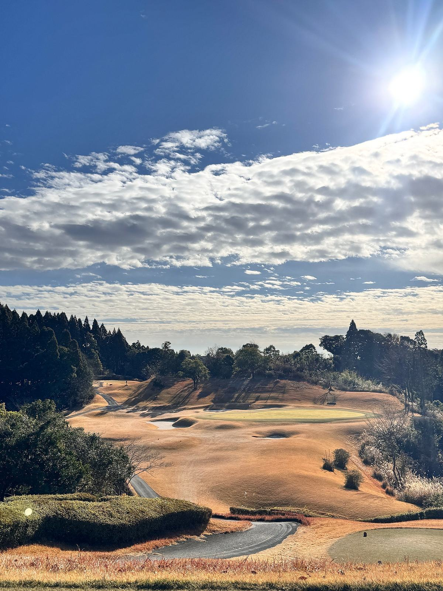
이번 여행은 UMK 하나만으로도 충분했다. 미야자키에 JLPGA 대회가 열린 곳이 두 곳 있다. 그 중 하나가 UMK였다. 구글 지도로 코스를 미리 봤을 때부터 호기심이 생겼다. 인코스가 유난히 흥미로웠다. 일본 골프장 예약은 가능하면 아웃코스부터 잡는 게 좋다. 설계가의 의도를 처음부터 마지막까지 즐길 수 있기 때문이다. UMK는 후반 코스가 전반보다 더 다이내믹하고 스코어를 잃기 쉽다. 보기 플레이어들이 흥미롭게 즐기기에 최적화된 코스다. 1월 초 15도. 평일에 앞뒷팀 없이 여유롭게 다양한 풍광을 즐겼다. 관리가 최상급이었고 그래서인지 더 집중해서 칠 수 있었다. 파3 네 홀 중 세 홀이 150~165야드 미들 아이언 또는 유틸로 쳐야 하는 구성이었다. 나머지 한 홀은 115야드 숏 아이언 정확도 승부였는데, 핀 앞 가로로 긴 벙커를 피하지 못했다. 프로 백티에 올라가 봤더니 구성이 완전히 달랐다. 골프에서 시각적인 요소가 얼마나 중요한지 새삼 느꼈다. 미야자키 골프장에서 처음으로 남자 캐디를 만났다. 욕탕에서 수질을 관리하는 모습도 새로웠다. 일본을 다니면서 가장 많이 느끼는 게 이런 디테일이다. 룰과 매너를 지킨다면 일본 골프만큼 좋은 건 없다. 그걸 직접 느껴보고 싶다면 자유여행으로 부딪혀보는 게 답이다.
This trip could have been justified by UMK alone. Miyazaki hosts two JLPGA tournament courses. UMK is one of them. Looking at the layout on Google Maps before the trip, the curiosity was immediate. The back nine looked particularly interesting. When booking Japanese courses, starting with the Out course is generally the better call — it lets you experience the designer’s full intent from beginning to end. At UMK, the back nine is more dynamic and more punishing than the front. A course calibrated well for bogey players looking for a genuine challenge. Early January, 15 degrees, weekday, no groups ahead or behind. The round unfolded at its own pace across varied scenery. Course maintenance was exceptional — which seemed to bring out more focus naturally. Three of the four par 3s required mid-irons or utilities in the 150 to 165-yard range. The fourth was a precision short iron at around 115 yards — a wide horizontal bunker in front of the pin took the shot anyway. Stepped up to the pro tee for a look: the visual completely changed the hole. A reminder of how much perception shapes shot-making. First encounter with male caddies at a Miyazaki course. The staff managing water quality in the bath facilities was a new detail to notice. Japan’s strength in the specifics shows up everywhere. It’s one of the consistent things about playing golf here. Rules followed, manners respected — there’s nothing better than golf in Japan. The only way to understand that is to experience it directly. MIKA’s Take: A course the JLPGA chose. Stand on it and the reason becomes clear.
今回の旅は、UMKだけで十分だった。 宮崎にはJLPGAのトーナメント開催コースが二つある。そのうちの一つがUMKだった。事 前にグーグルマップでコースを確認した時点から興味が湧いた。インコースが特に面白そ うだった。 日本のゴルフ場を予約する際は、できればアウトコースから取るのが良い。設計者の意図 を最初から最後まで楽しめるからだ。UMKは後半コースの方が前半より動的で、スコアを 落としやすい。ボギープレーヤーが面白くプレーするのに最適化されたコースだ。 1月初旬、15度。平日に前後の組なく、ゆったりとさまざまな景色を楽しんだ。コース管理は 最高水準で、そのおかげかより集中してプレーできた。 パー3が4ホールあり、うち3ホールは150〜165ヤードのミドルアイアンまたはユーティリ ティが必要な難しい設定だった。残り1ホールは115ヤード程度のショートアイアンで精度を 問われたが、ピン手前に横長のバンカーが待ち構えていた。プロのバックティに上がってみ ると、まったく違う景色だった。ゴルフにおいて視覚的な要素がいかに重要かを改めて考え させられた。 宮崎のゴルフ場で初めて男性キャディに出会った。浴場での水質管理の様子も新鮮だっ た。日本をよく訪れる中で最も感じるのは、細部へのこだわりだ。 ルールとマナーを守れば、日本のゴルフ以上のものはない。それを直接感じたいなら、自 由旅行で体当たりするのが一番だ。
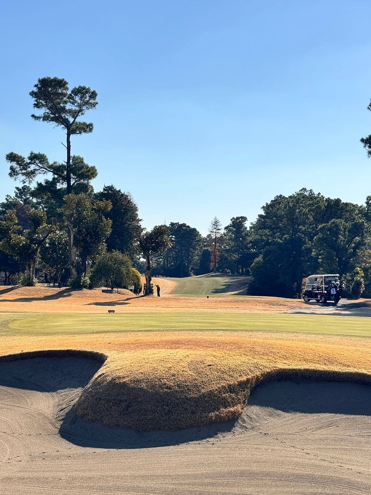
미야자키 골프 이동의 최대 장점은 ETC 카드가 불필요하다는 점이다. 대부분 20~30분, 멀어야 1시간 이내에 골프장이 있다. 고속도로 요금 걱정 없이 움직일 수 있다. 지방 소도시 골프장은 소박하고 오래된 분위기가 대부분이다. 자론바이도 그랬다. 구글 리뷰와 라쿠텐으로 예상했던 그대로였다. 직관이 맞아떨어지는 날이었다. 카트에 한국어 안내서가 있었다. 오늘 라운딩에서 한국인을 마주친 적은 없었다. 하지만 앞뒤 팀이 꽉 찰 정도로 미야자키 현지에서 인기가 높은 곳이었다. 난이도는 평균이지만 확실하게 어려운 홀들이 있었다. 전후반 다섯 번째 홀은 그린 경사가 심해서 공을 세우기가 쉽지 않았다. 시즌 중에는 더 어려울 것 같다. 파5 두 홀은 400미터 초반대라 거리가 나는 골퍼라면 투온도 가능하다. 이 골프장의 장점은 바람이 적고 모든 홀에 볕이 잘 든다는 것이다. 겨울에는 확실한 강점이다. 1월 첫째 주 15도, 긴팔에 조끼 하나. 겨울 골프의 최고 호사였다. 7,000엔. 환율로 치면 6만원대다. 페어웨이, 러프, 그린 관리 모두 잘 되어 있었다. 가성비라고 말하기도 부끄럽다. 그냥 좋은 골프장이다. 점심은 스테이크보다 가라아게가 나았다.
The biggest logistical advantage of playing in Miyazaki is not needing an ETC card. Most courses sit within twenty to thirty minutes, the farthest within an hour. No toll road calculations required. Rural city courses in Japan tend toward modest, well-worn character. Zaronbai fit that description. Pre-trip research via Google Maps and Rakuten had painted a fairly accurate picture. Intuition held. A Korean language guide was in the cart. No Korean players encountered during the round. Despite that, the course runs with full groups ahead and behind — locally popular in Miyazaki. Overall difficulty sits at average, but several holes have genuine teeth. The fifth hole on both the front and back nine features severe green slopes that make stopping the ball a real challenge. In peak season conditions it would play harder. Two par 5s come in at just over 400 meters — reachable in two for longer hitters. The course’s advantages are consistent sunshine on every hole and minimal wind. Both matter considerably in winter. Mid-January, around 15 degrees, one long-sleeve and a vest. That’s winter golf done properly. 7,000 yen. Around 60,000 won at current exchange. Fairways, rough, and greens all well-maintained throughout. Calling it value for money feels like an understatement. It’s simply a good course. The karaage at lunch outperformed the steak. MIKA’s Take: At 60,000 won for this level of maintenance, calling it value for money almost sells it short.
宮崎でゴルフをする最大のメリットは、ETCカードが不要なことだ。ほとんどのコースが20〜 30分以内、遠くても1時間以内にある。高速道路料金を気にせず動ける。 地方の小都市のゴルフ場は、素朴で年季の入った雰囲気が多い。ザロンバイもそうだっ た。Googleマップと楽天での事前リサーチ通りだった。直感が当たった日だった。 カートに韓国語のガイドが置いてあった。ラウンド中に韓国人には会わなかった。それでも 前後の組が埋まるほど、宮崎では人気のコースのようだった。 難易度は平均的だが、明確に難しいホールもあった。前後半の5番ホールはグリーンの傾 斜が急で、ボールを止めるのが難しかった。シーズン中はさらに難しくなるだろう。パー5は 2ホールが400メートル前半台で、飛距離のあるゴルファーなら2オンも十分狙える。 このコースの強みは風が少なく、すべてのホールに陽当たりが良いことだ。冬には確実な 利点だ。1月第1週、15度前後、長袖にベスト一枚。冬ゴルフの最高の贅沢だった。 7,000円。為替換算で6万ウォン台だ。フェアウェイ、ラフ、グリーンの管理いずれも行き届 いていた。コスパと言うのも恥ずかしい。ただ良いゴルフ場だと言いたい。 昼食はステーキよりから揚げの方が良かった。
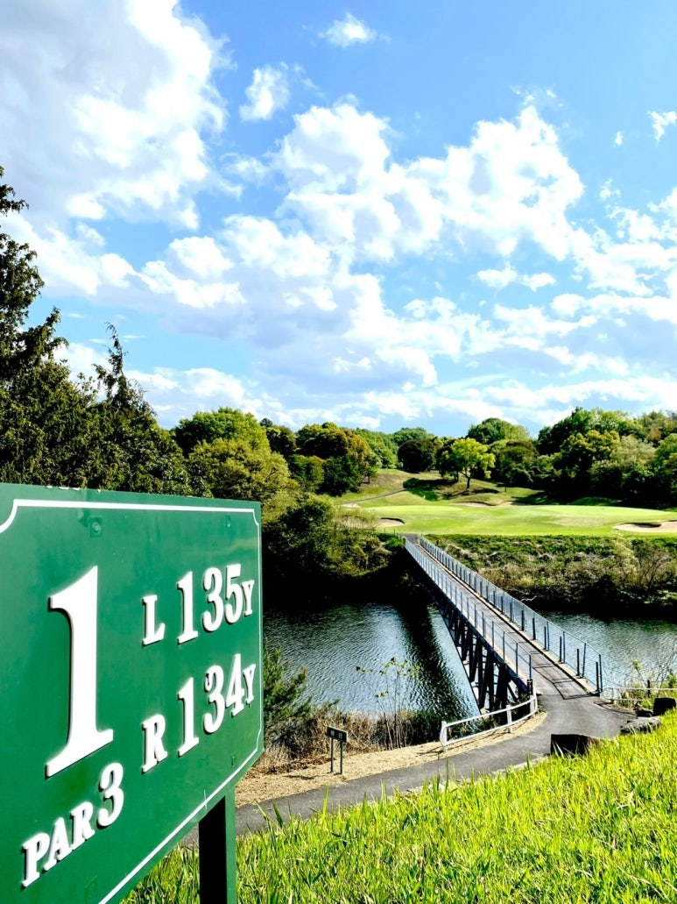
분당 구미동 야마다야 우동 얘기를 하다가 시작됐다. 그 우동의 본산지가 다카마쓰라고 했다. 그럼 가서 우동 먹고 골프도 치자. 그게 일본 골프 여행의 첫 시작이었다. 코로나가 잠잠해지고 국내 골프를 일주일에 두 번씩 나갈 때였다. 해외 골프는 엄두도 못 냈던 시절이었다. 큰 기대 없이 자유여행을 선택했다. 우동을 원하는 대로 먹으려면 자유여행밖에 없었다. 도시가 작아서 골프장까지 40분이면 충분했다. 첫 라운딩이라 노션에 쓸데없는 내용까지 다 기록했다. 나중에 보니 뭘 이렇게까지 했나 싶었다. 초보자가 다 그렇듯. 코스는 전체적으로 무난했다. 웨이팅도 없었다. 한국 A급 골프장과 비교하면 그린, 페어웨이, 러프가 아쉬운 부분도 있었다. 그래도 B+는 충분히 됐다. 라운딩을 마치고 나서 느낌이 왔다. 일본 골프가 나한테 딱이다.
It started with a conversation about a udon restaurant in Bundang. The original is in Takamatsu. So — go eat the real thing, and play golf while we’re at it. That was the beginning of Japan golf. Post-COVID, back to playing twice a week domestically. Overseas golf hadn’t crossed the mind as a real possibility. No big expectations. Chose independent travel because eating udon freely requires exactly that. Small city — the course was within 40 minutes. First round abroad meant noting everything in Notion, including things that didn’t need to be there. Looking back later: a little excessive. That’s how it goes the first time. The course was solid and uncrowded. Measured against top-tier Korean courses, the greens, fairways, and rough fell slightly short. Still a comfortable B+ by that standard. Finished the round and felt it clearly: Japan golf suits me. MIKA’s Take: Went for udon. Found Japan golf. That was the start of 300.
分唐のうどん屋の話をしていて始まった。そのうどんの本場が高松だと聞いた。なら行って本物 を食べて、ゴルフもしてこよう。それが日本ゴルフ旅行の最初の一歩だった。 コロナが落ち着き、週2回は国内でゴルフをしていた頃だった。海外ゴルフは考えたこともなかっ た。大した期待もせず、自由旅行を選んだ。うどんを思う存分食べるには自由旅行しかなかった。 街が小さくてゴルフ場まで40分もあれば十分だった。初めての海外ラウンドということで、Notion に不要な内容まで全部記録した。後で見返すと、なぜここまでと苦笑いした。初心者はみんなそ うするものだ。 コースは全体的に無難だった。待ちもなかった。韓国のAクラスのゴルフ場と比べるとグリーン、 フェアウェイ、ラフに物足りない部分もあったが、それでもB+は十分だった。 ラウンドを終えて、はっきりと感じた。日本ゴルフは自分にぴったりだ。 た。
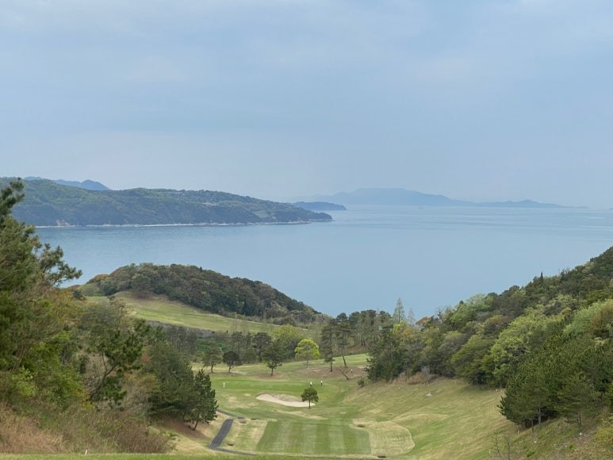
일본 첫 자유여행이었다. 설레기도 했고 실수도 많았다. 아이언은 늘 들고 다녔는데 퍼터 챙기는 게 영 쉽지 않았다. 동반자들과 퍼터 때문에 많이 웃었다. 그래도 즐거운 첫 여행이었으니 지금까지 이렇게 다니고 있는 것 아닐까. 함께해준 동반자들에게 감사하다. 1964년 개장. 60년이 넘었다. 설계는 사토 기이치. 동·중·서 27홀 시사이드 코스다. 어느 홀에서든 세토내해가 보인다. 중코스 1번 홀에서 쇼도시마 섬을 정면으로 바라보며 날리는 티샷이 이 코스의 백미다. 동코스는 아와지 섬까지 내다보이는 탁 트인 개방감이 좋다. 서코스는 야시마와 고켄잔 산의 능선이 바다와 어우러진다. 풍경은 평화롭지만 코스 공략은 만만치 않다. 바닷바람이 예측 불가능하다. 클럽 선택에 신중함이 필요하다. 구릉 지형을 살린 고저 차와 도그렉 홀들이 매 순간 전략을 요구한다. 다카마쓰는 별명이 우동현이다. 클럽하우스에서 바다 전망과 함께 먹는 사누키 우동으로 라운딩을 마무리했다. 공항에서 50분 거리라 우동 노포를 들르고 돌아가기에도 좋다.
First independent trip to Japan. Full of anticipation, full of rookie mistakes. Always had the irons sorted — remembering the putter was another matter entirely. The group found that funny throughout. A good first trip, which is probably why the trips kept coming. Grateful to everyone who came along for that one. Opened in 1964. Over sixty years old. Designed by Sato Giichi. Twenty-seven holes across East, Central, and West courses — ocean view from every hole on the Seto Inland Sea. The standout moment: standing on the first tee of the Central Course with Shodoshima Island directly ahead, hitting the opening drive along the coastline. The East Course opens up toward Awaji Island with a feeling of pure openness. The West Course layers the ridgelines of Yashima and Gokenzan mountain against the sea. The scenery is calm. The course is not. Coastal wind shifts without warning, complicating every club selection. The natural hillside terrain creates elevation changes and dogleg holes that demand a plan at each tee. Takamatsu’s unofficial name is “Udon Prefecture.” The clubhouse serves Sanuki udon with a sea view. Fifty minutes from the airport — easy to add a proper udon shop visit before heading home. MIKA’s Take: Didn’t know to bring the putter on the first trip. The Seto Inland Sea forgave every mistake.
日本初の自由旅行だった。胸が高鳴ると同時に、ミスも多かった。アイアンは常に持ち歩いてい たが、パターを持参するのが難しかった。同伴者たちとパターのことで何度も笑い合った記憶が ある。それでも楽しい初旅行だったからこそ、今もこうして続けているのだろう。ともに旅してくれた 仲間たちに感謝したい。 1964年開場。60年以上の歴史を持つ。設計は佐藤義一。東・中・西の27ホールシーサイドコース だ。どのホールからも瀬戸内海が望める。 中コースの1番ホールで小豆島を正面に見ながら海岸線へ放つティショットが、このコースの白眉 だ。東コースは淡路島まで見渡せる開放感が抜群だ。西コースは屋島と五剣山の稜線と海が調 和している。 景色は穏やかだが、コース攻略は決して甘くない。海風が予測できない。クラブ選択に慎重さが 必要だ。丘陵地形を活かした高低差とドッグレッグホールが毎瞬間戦略を求めてくる。 高松の別名は「うどん県」だ。クラブハウスで海の眺めとともに讃岐うどんでラウンドを締めくくっ た。空港から50分で、老舗うどん店に立ち寄って帰るのにも好都合だ。 包み込んでくれた。
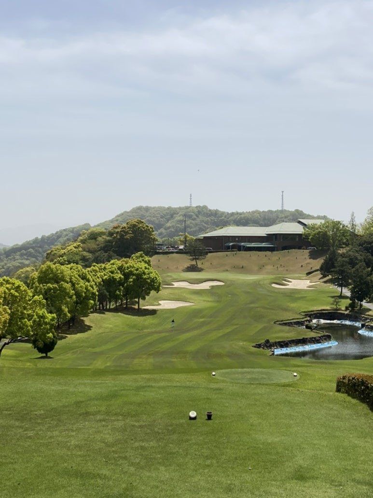
첫 일본 골프 여행의 마지막 라운딩이었다. 매일 아침 세븐일레븐 커피를 찾아 편의점을 기웃거리던 기억이 아직 선명하다. 정신없이 흘러간 사흘이었지만, 20대 체력이 아니기에 오히려 여유를 두고 소화했다. 은퇴 즈음의 골프는 세 가지 박자가 맞아야 한다. 동반자, 건강, 경제력. 첫 여행을 함께했던 지인 중 한 명은 무릎이 안 좋아져 지금은 함께 다니지 못하고 있다. 다른 한 명의 든든한 동반자와는 여전히 일본 골프장 곳곳에 족적을 남기고 있다. 사카이데CC는 주말인데도 점심 포함 9,300엔이었다. 처음부터 평점 3.8~4.0 수준의 가성비 구장으로 시작한 건 탁월한 선택이었다. 한 번 높아진 눈높이는 절대 낮아지지 않기 때문이다. 페어웨이 잔디가 빈틈없이 촘촘하게 관리되어 있었다. 저렴하다고 관리가 소홀할 거라 생각하면 오산이다. 다카마쓰에서 야마다야 본점에 들러 우동을 먹었다. 팁 하나. 선물용 우동 세트는 본점보다 공항 면세점이 더 저렴하다. 본점에서는 맛있게 먹는 데만 집중하면 된다. 체력은 예전 같지 않아도, 맞는 동반자와 맛있는 것을 먹고 멋진 페어웨이를 걷는 여정은 계속 이어가고 싶다.
The final round of the first Japan golf trip. Still remember hunting for a Seven-Eleven coffee every morning, checking which snacks were worth trying. Three days that moved fast, paced deliberately because the body isn’t twenty anymore. Golf at this stage of life needs three things to align: the right company, physical health, and financial ease. One of the friends from that first trip has a knee problem now and can’t join anymore. The other remains a steady companion — the one who’ll be on the Yonago itinerary in March as well. Sakaide CC charged 9,300 yen on a weekend with lunch included. Starting with courses in the 3.8 to 4.0 Google rating range was the right call. Once expectations rise, they don’t come back down. The fairway turf was dense and immaculately maintained. Inexpensive doesn’t mean neglected — this course proved it. In Takamatsu, visited Yamadaya’s main branch for udon. One practical tip: gift udon sets are cheaper at the airport duty-free than at the restaurant itself. Save the main branch visit for eating. The body is different than it was. The walks along good fairways with the right company, with good food along the way — that part stays the same. MIKA’s Take: Started with value courses. The expectations rose from there. That was the right order.
日本ゴルフ旅行初回の最終ラウンドだった。毎朝セブンイレブンのコーヒーを求めてコンビニをう ろついていた記憶が今も鮮明だ。あっという間に過ぎた3日間だったが、20代の体力ではないか らこそ、むしろ余裕を持って日程をこなせた。 引退前後のゴルフは三つのリズムが合わなければならない。同伴者、健康、そして経済力。初旅 行を共にした知人の一人は膝の具合が悪くなり、残念ながら今は一緒に行けなくなった。もう一 人の頼もしい同伴者とは今も日本各地のゴルフ場に足跡を残し続けている。 佐伯DECCは週末にもかかわらず昼食込みで9,300円だった。最初からGoogleの評価3.8〜4.0 レベルのコスパ重視のコースから始めたのは、今思えば正解だった。一度上がった目線は決し て下がらないからだ。フェアウェイの芝がびっしりと密に管理されていた。安いからといって管理 が雑だと思ったら大間違いだ。 高松では山田屋本店に立ち寄ってうどんを食べた。一つアドバイス。お土産用のうどんセットは 本店より空港の免税店の方が安い。本店では存分に食べることに集中すればいい。 体力は昔とは違う。それでも気の合う仲間と美味しいものを食べ、素晴らしいフェアウェイを歩くこ の旅を、これからも続けていきたい。
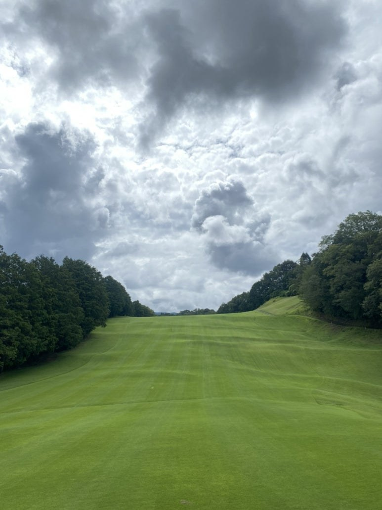
마쓰야마 시내에서 1시간 이상. 도착하는 순간 고요하고 평화로운 공기가 먼저 반긴다. 북적이는 관광지가 아니다. 발걸음 소리마저 선명하게 들릴 것 같은 소도시의 정취다. 27홀에 점심 포함 8,200엔. 결제 금액을 보고 눈을 의심했다. 한국 골프장 캐디피 수준의 가격으로 하루 종일 골프를 치고 밥까지 먹는다. 1시간 넘게 달려온 수고가 한 번에 보상받는 기분이었다. 계절은 한여름. 아침 8시 2분 티오프였는데 해가 솟아오를수록 일본 특유의 습하고 뜨거운 폭염이 온몸을 휘감았다. 18홀도 아닌 27홀. 클럽하우스에서 점심을 먹으며 얼음물로 수분을 보충하고 나서야 후반을 버텨낼 힘이 생겼다. 체력은 바닥을 보였지만 동반자들과의 전우애로 27홀 완주라는 미션을 클리어했다. 내가 왜 한여름에 27홀을 잡았을까 잠시 후회도 했다. 막상 다 마치고 나니 짙은 성취감이 남았다. 초기 일본 골프 여행에는 가성비 위주로 다녔다. 지금 좋은 곳들을 다니다 보면 한국과 더 객관적으로 비교하게 된다. 일본 골프를 많이 다닐 계획이라면 초반에 가성비 좋은 곳부터 시작하는 걸 권한다.
Over an hour from central Matsuyama. The moment you arrive, the air is quiet and unhurried. Not a tourist spot. The kind of small town where footsteps sound loud. 27 holes, lunch included, 8,200 yen. Looked at the receipt twice. The price of a caddie fee back home covers a full day of golf and a meal here. The long drive from the city felt immediately justified. Midsummer. Tee time at 8:02 AM — by the time the sun was up properly, Japan’s humid heat had taken hold of everything. Not 18 holes. 27. Lunch at the clubhouse with ice water was what made the back nine survivable. The body was running on empty by the end, but the group’s collective stubbornness got all 27 holes done. Briefly questioned the decision to book 27 holes in August. Once it was finished, the sense of achievement was real. The early Japan golf trips were built around value courses. Playing better courses now makes the comparison with Korea sharper and more objective. For anyone planning to do Japan golf seriously, starting with the good-value end is the right approach. MIKA’s Take: 27 holes in midsummer is a challenge. 8,200 yen is the reward. Both are true.
松山市内から1時間以上。到着した瞬間、静かで穏やかな空気が迎えてくれる。賑やかな観光地 ではない。足音まではっきり聞こえそうな小さな町の情緒だ。 27ホール、昼食込みで8,200円。支払い金額を見て目を疑った。韓国のゴルフ場のキャディフィ 程度の金額で一日中ゴルフをして食事までできる。1時間以上かけてきた苦労が一気に報われ た気がした。 季節は真夏。ティオフは朝8時2分——日が昇るにつれ、日本特有の蒸し暑い猛暑が全身を包ん だ。18ホールではなく27ホールだ。クラブハウスで昼食を取り、氷水で水分を補給してからやっと 後半を乗り切る力が戻った。体力は限界に近かったが、同伴者たちとの結束で27ホール完走と いうミッションをクリアした。なぜ真夏に27ホールを予約したのかと一瞬後悔したが、すべて終え てみると深い達成感が残った。 日本ゴルフ旅行の初期はコスパ重視で回った。今、良いコースを回るようになってから、韓国とよ り客観的に比較できるようになった。日本ゴルフをたくさん回る予定なら、最初はコスパの良い コースから始めることをお勧めする。
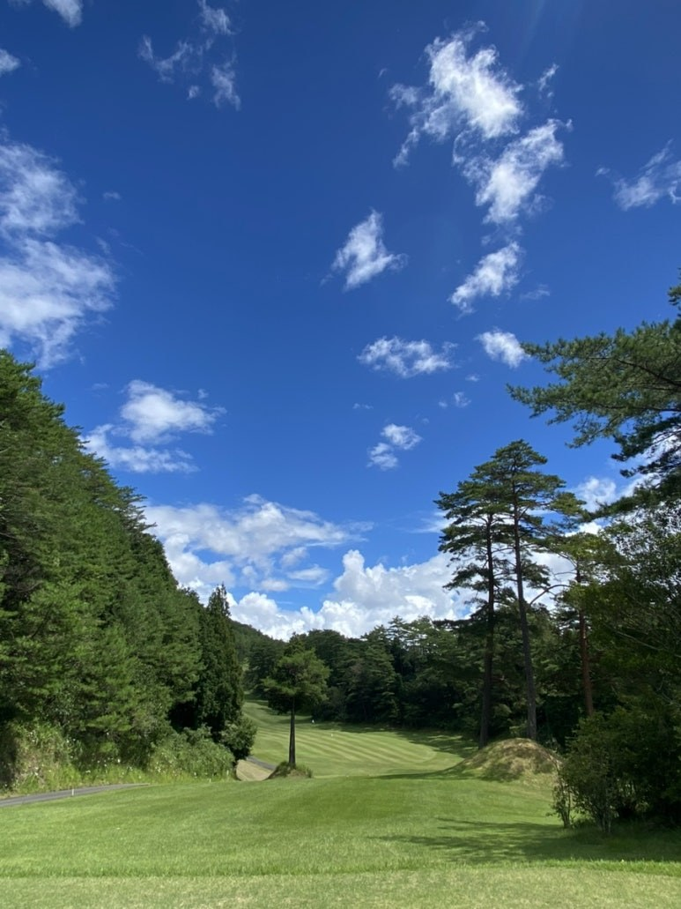
마쓰야마 골프 여행에서 가장 기대했던 곳이었다. 10시 30분대 티오프를 잡았다는 것만 봐도 당시 일본 더위를 얼마나 몰랐는지 알 수 있다. 그래도 고원이라 살았다. 해발 600미터. 산길을 따라 올라가면 공기부터 다르다. 맑고 청명한 하늘, 탁 트인 시야. 평지보다 훨씬 쾌적하게 라운딩에 집중할 수 있었다. 산악 코스라고 하면 좁고 구불구불한 페어웨이를 떠올리기 쉽다. 고원 GC의 반전은 넓은 페어웨이다. 티박스에 서면 장애물이 적고 공간이 여유롭다. 드라이버를 마음껏 풀스윙할 수 있다. 억지스러운 블라인드 홀이나 무리한 해저드 없이 누구나 각자의 페이스로 즐길 수 있는 밸런스 좋은 코스다. 잔디 컨디션도 깔끔하게 유지되고 있었다. 아름다운 풍경을 감상하며 여유롭게 걷기 좋은 힐링 코스의 정석이었다. 처음 일본 골프를 시작하는 분들에게 권한다. 평점 4.0이 안 되더라도 편안한 골프장을 포함시켜 워밍업하면서 적응할 시간을 갖는 게 좋다. 고원 GC는 그런 역할을 완벽하게 해주는 곳이다. 선물이었다.
The most anticipated course of the Matsuyama trip. Booking a 10:30 AM tee time in August shows exactly how little was known about Japanese summer heat at that point. The elevation saved the day. 600 meters above sea level. The air changes on the mountain road up. Clear sky, open views. Considerably more comfortable than playing at ground level. Mountain courses typically mean narrow, winding fairways. The surprise at Kogen GC is the width. Standing on the tee, minimal obstructions, generous space to swing. Full driver swings without hesitation. No forced blind holes, no excessive hazards — a well-balanced layout that anyone can play at their own pace. Turf conditions were clean and well-maintained throughout. A proper healing course — the kind where walking the fairway is part of the pleasure. For anyone just starting out with Japan golf: including a comfortable course like this, even if it doesn’t score above 4.0, gives the right kind of warm-up time to settle in. Kogen GC fills that role well. MIKA’s Take: Hit the driver freely at 600 meters above sea level. A gift from the days before understanding Japanese summer heat.
松山ゴルフ旅行で最も楽しみにしていた場所だった。8月に10時30分台のティオフを選んだという ことだけで、当時日本の暑さをいかに知らなかったかがわかる。高原だったから助かった。 標高600メートル。山道を登っていくと空気が変わる。澄み切った青空、見晴らしの良い視界。平 地よりずっと快適にラウンドに集中できた。 山岳コースといえば狭くて曲がりくねったフェアウェイを想像しがちだ。高原GCの意外な魅力は 広いフェアウェイだ。ティボックスに立つと障害物が少なく、空間に余裕がある。ドライバーを思い 切りフルスウィングできる。無理なブラインドホールや過剰なハザードもなく、初心者から上級者 まで各自のペースで楽しめるバランスの良いコースだ。 芝のコンディションも清潔に保たれていた。美しい景色を眺めながらゆったり歩けるヒーリング コースの手本だった。 日本ゴルフを始めたばかりの方にお勧めする。評価が4.0に届かなくても、こういった落ち着いた コースを入れてウォーミングアップしながら慣れる時間を持つのが良い。高原GCはその役割を 完璧に果たしてくれる場所だ。 た頃の贈り物だった。
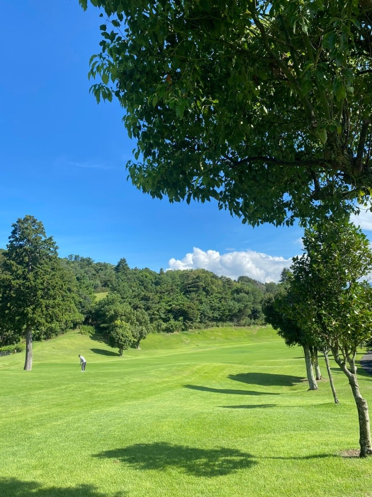
마쓰야마 마지막 날이었다. 오후 비행기 시간이 빠듯해서 골프장 도착하자마자 스루플레이를 요청했다. 단호하게 안 된다고 했다. 아침 6시 20분인데도 사람이 한가득이었다. 주말이었다. 방법은 두 가지였다. 전반만 치고 공항으로 가거나, 후반 중간에 시간 맞춰 나오거나. 두 번째는 언어 소통 리스크가 있었다. 결정권자를 불러달라고 했더니 60대 일본인 분이 나왔다. 비행기 시간 사정을 설명하니 지금 당장은 자리가 없고 전반 끝나고 다시 얘기하자고 했다. 거절로 알아듣고 9홀만 치고 나오려 했는데, 전반을 마치고 나오니 한 자리가 생겼다며 바로 넣어줬다. 10분 대기 후 후반까지 다 마쳤다. 일본에서 이런 경우는 거의 없다. 운이 좋았다. 1970년 개장. PGM 운영. 마쓰야마 공항에서 45분 거리다. 전형적인 산악 코스다. 노송들이 코스 주변을 감싸고 고지대 홀에서는 마쓰야마 시내와 세토내해가 내려다보인다. 아웃코스는 전장이 길고 페어웨이가 넓다. 드라이버를 마음껏 칠 수 있는 호쾌한 코스다. 인코스는 도그렉과 블라인드 홀이 많아 정확도와 코스 매니지먼트가 요구된다. 전반과 후반의 성격이 확연히 달라 지루하지 않다. 그린은 고라이잔디다. 언듈레이션보다 잔디 결을 읽는 게 스코어의 핵심이다.
Last day in Matsuyama. Flight time in the afternoon made the schedule tight. Asked for splay-through the moment we arrived. A firm no. The parking lot at 6:20 AM was already full. Weekend. Two options: play the front nine and head to the airport, or squeeze out mid-back nine and leave on a time cut. The second carried too much language risk. Asked to speak to whoever could make a decision. A Japanese man in his sixties appeared. Explained the flight situation — no slots available right now, come back after the front nine. Took that as a soft refusal and planned for nine holes only. Finished the front nine and walked in. A spot had opened. Ten-minute wait, then straight back out to finish all 18. That kind of flexibility almost never happens in Japan. Good fortune, plain and simple. Opened in 1970, operated by PGM. Forty-five minutes from Matsuyama Airport. Classic mountain course. Old pine trees line the layout throughout. From the elevated holes, Matsuyama city and the Seto Inland Sea fill the view below. The Out course runs long with wide fairways — driver-friendly, open, and satisfying. The In course shortens up but introduces dogleg and blind holes that demand accuracy and course management over distance. The two nines feel like different courses entirely. Greens are Korai grass. Reading the grain matters more than reading the break. MIKA’s Take: Planned for nine holes, played eighteen. That kind of luck in Japan won’t come again.
松山最終日だった。午後の飛行機の時間が迫っていたため、到着と同時にスループレーをお願 いした。きっぱりと断られた。朝6時20分なのに人で溢れていた。週末だった。 方法は二つ。前半だけプレーして空港へ向かうか、後半の途中で時間に合わせて退場するか。 後者は言語でのリスクがあった。決定権のある人を呼んでほしいと頼むと、60代の日本人男性 が出てきた。フライトの事情を説明すると、今すぐ入れる枠はないが前半終了後にまた相談しよう とのことだった。断りと受け取り9ホールのみのつもりで前半を終えると、1枠が空いたとのことで すぐに案内してくれた。10分待って後半もすべてプレーできた。日本でこういうことはほとんどな い。運が良かった。 1970年開場、PGM運営。松山空港から45分。典型的な山岳コースだ。老松がコース全体を包 み、高地のホールからは松山市内と瀬戸内海が見渡せる。 アウトコースは全長が長くフェアウェイも広い。ドライバーを思い切り振れる豪快なコースだ。イン コースはドッグレッグとブラインドホールが多く、精度とコースマネジメントが求められる。前半と後 半で性格がまったく異なり、飽きることがない。 グリーンは高麗芝だ。アンジュレーションよりも芝目を読むことがスコアの鍵になる。
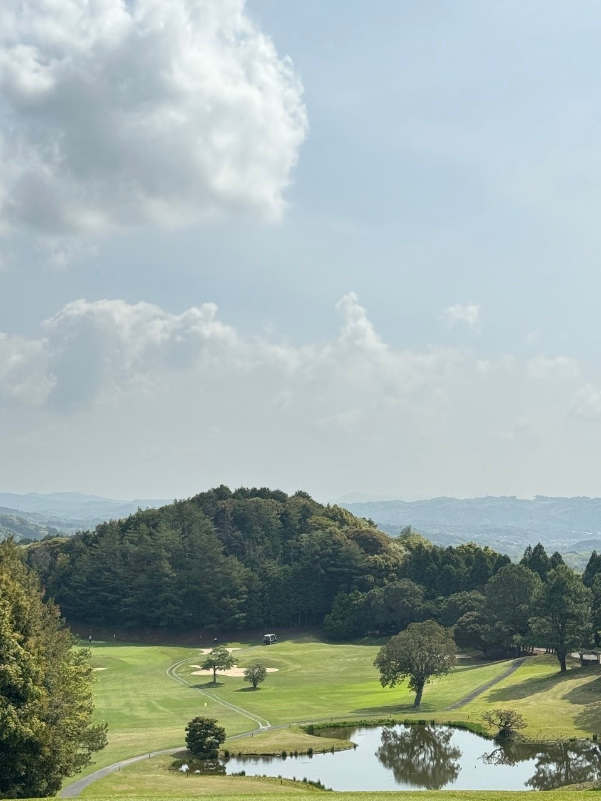
3일차 밤, 잠자리에 들었는데 새벽에 지진 알람으로 잠이 깼다. 꽤 흔들렸다. 일본인의 일상이 쉽지 않겠다 싶었다. 그래도 골프는 쳤다. 아코디아 계열. 36홀 대형 골프장이다. 동코스는 7,000야드 이상의 넓고 평탄한 장타자 코스. 서코스는 전장은 짧지만 전략적인 배치가 돋보이는 기술 코스다. 서코스는 카트 페어웨이 진입이 가능해서 체력 부담이 덜하다. 27홀을 예약했다. 8시 40분부터 4시까지 크게 밀리지 않고 마쳤다. 원래 계획은 18홀 스루 후 식사하고 9홀을 더 치는 것이었는데, 대기가 있어서 9홀 먼저 치고 식사 후 18홀로 순서를 바꿨다. 식사 후 스타트하우스에 갔더니 다른 코스로 가려면 1시간 30분을 기다려야 한다고 했다. 라쿠텐으로 주고받은 이메일 내용을 보여주자 바로 해결됐다. 클럽하우스에 한글 안내판이 많았다. 한국인 담당 직원이 있냐고 물었더니 열흘 전 우베72에서 이직해 온 한국분이 계셨다. 이 날 많이 도움이 됐다. 27홀을 계획하는 분들에게 팁. 이메일보다는 라쿠텐과 자란넷으로 18홀, 9홀을 각각 따로 예약하는 게 수월하다. 이메일 예약을 했다면 반드시 캡처해두자. 그리고 전파가 약한 곳이 있어 배터리 소모가 심하다. 충전기는 필수다. 있다.
Night of day three, fell asleep, woke up to an earthquake alarm in the early hours. It shook for a while. A reminder that daily life in Japan isn’t simple. Golf went ahead anyway. Accordia group. 36-hole facility. The East Course runs over 7,000 yards — wide, flat, suited to long hitters. The West Course is shorter but more strategically designed, with cart access on fairways to reduce the physical load. Booked 27 holes. Played from 8:40 to 4:00 without major delays. The original plan was 18 holes straight through, lunch, then 9 more. Adjusted on the day to 9 first, lunch, then 18, due to wait times. After lunch, the starter said there’d be a 90-minute wait for the next course. Showed the email exchange from the Rakuten booking — the issue was resolved immediately. Korean signage was visible throughout the clubhouse. Asked if there was a Korean-speaking staff member — someone had transferred from Ube72 just ten days prior. That contact made the day considerably smoother. For anyone planning 27 holes: booking through Rakuten and Jalan separately for 18 and 9 holes is more reliable than email arrangements. If you do book by email, screenshot everything. Phone signal is weak in parts of the course — battery drain is real. Bring a charger. MIKA’s Take: Started the morning with an earthquake alarm. Finished with 27 holes. Japan golf has days like that.
3日目の夜、床についたところで早朝に地震アラームで目が覚めた。かなり揺れた。日本の日常 は簡単ではないと感じた。それでもゴルフはした。 アコーディア系列。36ホールの大型ゴルフ場だ。東コースは7,000ヤード以上の広く平坦な飛ばし 屋向けコース。西コースは全長は短いが戦略的な配置が光る技術系コースだ。西コースはカート のフェアウェイ乗り入れが可能で体力的な負担が少ない。 27ホールを予約した。8時40分から16時まで大きな滞りなく終えた。当初の計画は18ホールをス ルーで回り、食事後に9ホール追加する予定だったが、待ちがあったため先に9ホールを回り、食 事後に18ホールに変更した。食事後にスタートハウスへ行くと、別のコースへ移るには1時間30 分待ちと言われた。楽天でやり取りしたメールを見せると即座に対応してもらえた。 クラブハウスに韓国語の案内が多く見られた。韓国人担当スタッフがいるか尋ねると、10日前に 宇部72から移ってきた韓国人スタッフがいた。この日、大いに助けてもらった。 27ホールを計画している方へのアドバイス。メールより楽天とじゃらんで18ホールと9ホールを 別々に予約する方がスムーズだ。メールで予約した場合は必ずスクリーンショットを残しておこ う。電波が弱い箇所があり電池消耗が激しいので、充電器は必携だ。 日もある。
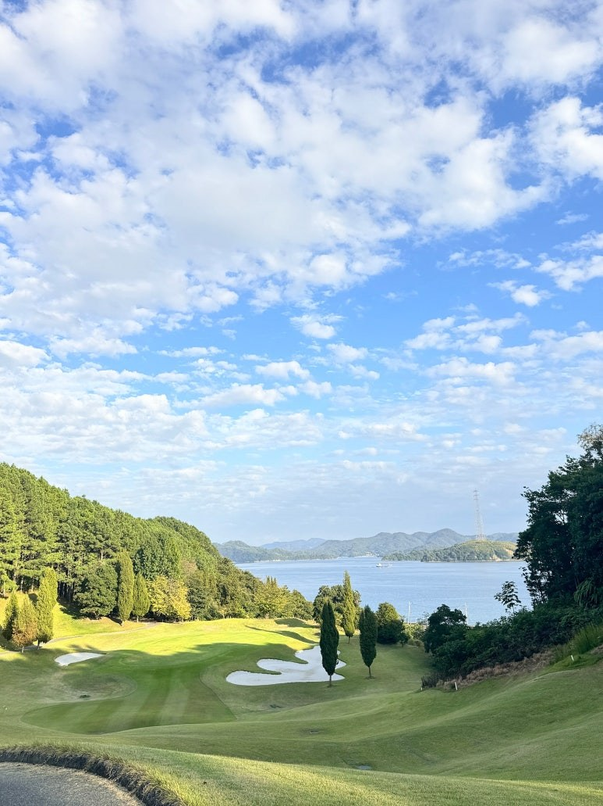
9월 하순, 히로시마 공항에 내리니 늦여름의 열기가 살짝 남아있었다. 탁 트인 하늘. 골프 치기엔 완벽한 날씨였다. 히로시마를 선택한 이유는 명확했다. 하루 2편 운항으로 도착 당일 오후 라운딩, 마지막 날 오전 라운딩까지 알차게 짤 수 있는 동선이 나온다. 다른 유명 지역에 비해 골프장 퀄리티도 떨어지지 않으면서 가성비가 훌륭하다. 거기에 오코노미야키와 굴이 있다. 히로시마식 오코노미야키는 얇은 전병 위에 양배추, 숙주, 고기, 면을 층층이 쌓는다. 여기에 통굴을 올린 카키 오코노미야키는 선택이 아닌 필수다. 비행기에서 내리자마자 세토우치CC로 직행했다. 스타트하우스에서 돈카츠 샌드위치를 픽업해 카트 위에서 베어 물었다. 바닷바람을 맞으며 먹는 그 맛이 기가 막혔다. 코스 내내 세토내해가 펼쳐진다. 푸른 바다와 섬들의 조화. 왜 이곳이 히로시마 최고의 시사이드 코스로 불리는지 18홀이 증명해 준다. 한국과 일본 골프장을 비교 안 할래야 안 할 수가 없는 현실이 새삼 슬펐다. 숙소는 히로시마 시내로 잡았다. 골프장까지 매일 30분이 더 걸리는 단점이 있다. 대신 라운딩 후 도보 거리에 오코노미야키 맛집, 이자카야, 번화가가 펼쳐진다. 낮에는 바다 보며 골프, 밤에는 시내에서 미식. 두 마리 토끼를 다 잡는 선택이었다. 맛있었다.
Late September, Hiroshima Airport. The tail end of summer heat still in the air. Clear sky overhead — perfect conditions for golf. The logic for choosing Hiroshima was straightforward. Two flights a day means an afternoon round on arrival and a morning round on the last day before departure — the ideal travel structure for a golf trip. Course quality matches better-known destinations without the price premium. And there’s okonomiyaki and oysters. Hiroshima-style okonomiyaki layers thin crepe, cabbage, bean sprouts, pork, and noodles. Adding whole oysters on top — kaki okonomiyaki — is not optional. Straight from the airport to Setouchi CC. Picked up a katsu sandwich at the starter’s hut and ate it on the cart. Sea breeze, open views, pork cutlet between bread. It worked despite a lacking appetite. The Seto Inland Sea runs alongside the course for 18 holes. Blue water, islands in the distance, the whole frame of it. This is why Setouchi gets called Hiroshima’s finest seaside course. Comparing this to what a Korean course offers at the same price point is unavoidable, and a little painful. The accommodation went in central Hiroshima rather than closer to the courses. Thirty extra minutes of driving each morning. In return: okonomiyaki restaurants, izakayas, and a proper city within walking distance after the round. Golf by the sea during the day, dinner in the city at night. Both, without compromise. MIKA’s Take: Ate a katsu sandwich looking out at the Seto Inland Sea. No appetite going in. Didn’t matter.
9月下旬、広島空港に降り立つと夏の余韻がわずかに残っていた。抜けるような青空。ゴルフに は申し分ない天気だった。 広島を選んだ理由は明確だった。1日2便の運航で、到着当日の午後ラウンドと最終日の午前ラ ウンドを効率よく組める動線が作れる。他の有名地に引けを取らないコースクオリティで、コスパ が優れている。そしてお好み焼きと牡蠣がある。広島式お好み焼きは薄い生地の上にキャベツ、 もやし、豚肉、麺を層状に重ねる。そこに牡蠣をトッピングした「カキお好み焼き」は選択ではなく 必須だ。 飛行機を降りてそのまま瀬戸内CCへ直行した。スタートハウスでカツサンドをピックアップし、 カートの上でかぶりついた。潮風を受けながら食べるその味が格別だった。食欲がなかったの に、だ。 コース全体を通じて瀬戸内海が広がる。青い海と島々のコントラスト。なぜここが広島最高のシー サイドコースと呼ばれるのか、18ホールが証明してくれる。韓国と日本のゴルフ場を比べずには いられない現実が、改めて切なかった。 宿泊は広島市内にした。毎朝ゴルフ場まで30分余分にかかるデメリットがある。その代わり、ラウ ンド後は徒歩圏内にお好み焼きの名店、居酒屋、繁華街が広がる。昼は海を眺めながらゴルフ、 夜は街で食を楽しむ。二つを同時に手に入れる選択だった。 た。
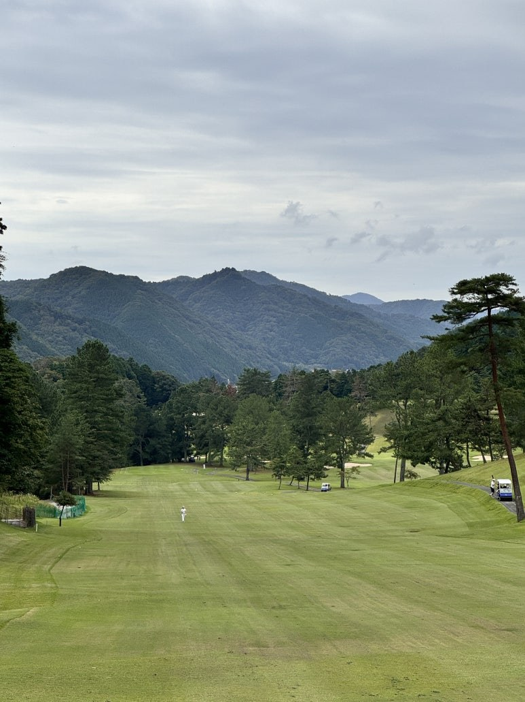
항공권, 72홀 라운드, 숙박, 렌터카, 매일 밤 이자카야까지 전부 합쳐서 1인당 964,700원. 100만원이 안 넘었다. 내역은 이렇다. 왕복 항공권 210,700원, 골프 72홀 235,000원 (점심 4회 포함), 숙박 185,000원, 렌트 167,000원 (통행료·주유 포함), 잡비 167,000원. 숫자가 다 말해준다. 2026년 현재도 크게 다르지 않다. 항공료와 그린피는 조금 올랐다. 대신 숙박과 렌터카 시장의 경쟁이 치열해지면서 그 차이를 상쇄한다. 골프장 점심이 4일치 다 포함되어 있으니 저녁 이자카야에 하루 5만원이면 충분하다. 가라아게 한 입에 그날의 굿샷을 복기하기에 부족함이 없다. 야치요CC는 평범한 코스다. 단, 점심이 뷔페로 제공된다. 덴푸라, 새우튀김, 샐러드, 카레까지 반찬 포함 수십 가지. 동반자들이 점심만으로 그린피 다 낸 것 같다고 했다. 음식 사진을 못 찍은 게 아쉽다. 26년 말이나 27년 초에 히로시마를 다시 방문하면 총경비가 얼마나 달라졌는지 후기로 올릴 생각이다. 골프장이라면 더욱.
Flights, 72 holes of golf, accommodation, rental car, and izakaya every night — all in, per person: 964,700 won. Under one million. The breakdown: return flights 210,700 won, 72 holes with four lunches included 235,000 won, accommodation 185,000 won, rental car with tolls and fuel 167,000 won, miscellaneous including evening meals 167,000 won. The numbers speak for themselves. In 2026, the total doesn’t look dramatically different. Airfares and green fees have edged up. Accommodation and rental car markets have become more competitive to compensate. With four lunches already covered by the golf fees, 50,000 won a day handles dinner at a local izakaya without strain. Enough for karaage, cold beer, and replaying the day’s best shot. Yachiyo CC is an unremarkable course. What sets it apart is the lunch — a full buffet. Tempura varieties, freshly fried prawn, salad, curry, dozens of side dishes. The group agreed that the lunch alone had paid for the green fee. No food photos to show for it, unfortunately. Planning a return to Hiroshima in late 2026 or early 2027 — will report back on whether the total budget has shifted. MIKA’s Take: A four-day golf trip to Japan for under one million won. Add a buffet lunch course and the math gets even better.
往復航空券、72ホールのラウンド、宿泊、レンタカー、毎晩の居酒屋まですべて込みで1人あたり 964,700ウォン。100万ウォンを超えなかった。 内訳はこうだ。往復航空券210,700ウォン、ゴルフ72ホール235,000ウォン（昼食4回込み）、宿泊 185,000ウォン、レンタカー167,000ウォン（通行料・給油込み）、雑費167,000ウォン。数字がす べてを語っている。 2026年現在も大きくは変わらない。航空料金とグリーンフィーは少し上がった。その分、宿泊とレ ンタカー市場の競争が激しくなり、差額を相殺している。ゴルフ場の昼食が4日分込みなので、夕 方の居酒屋に1日5万ウォンあれば十分だ。から揚げ一口で、その日のグッドショットを振り返る のに不足はない。 八千代CCは平凡なコースだ。ただし、昼食がビュッフェで提供される。天ぷら各種、揚げたての 海老フライ、サラダ、カレーなど副菜込みで数十種類。同伴者たちは昼食だけでグリーンフィーの 元を取ったようだと言っていた。料理の写真を撮れなかったのが惜しい。 2026年末か2027年初めに広島を再訪し、総経費がどれだけ変わったか後記としてお伝えする 予定だ。 フ場ならなおさら。
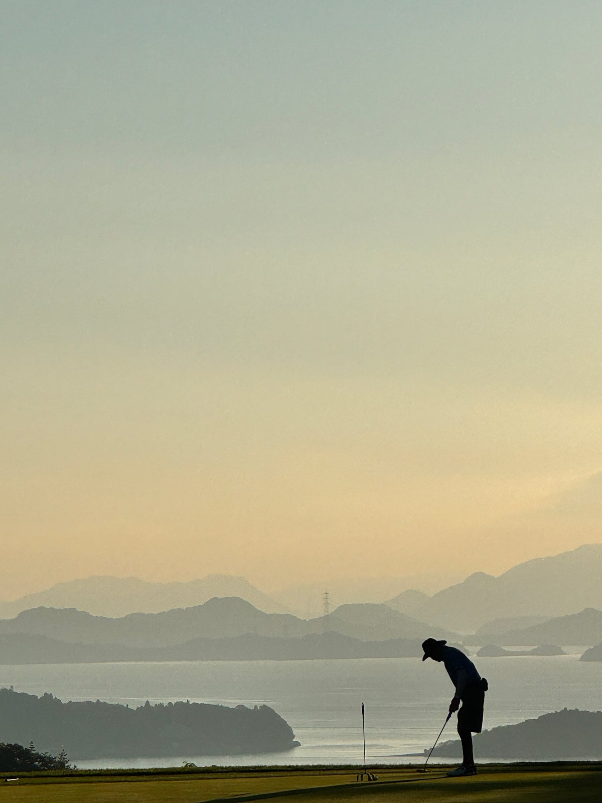
쿠레. 히로시마현 남서부의 항구 도시. 조선업과 해군 기지로 이름났던 곳이다. 그 산등성이를 따라 다도해가 내려다보이는 골프장이 있다. 1971년 개장. 50년이 넘었다. 설계는 로버트 무라시마. 산악 지형이 바다로 뻗어 나가는 쿠레의 고저차를 코스에 그대로 담았다. JLPGA 스텝업 투어를 수차례 개최한 곳이다. 코스 완성도와 관리 상태로 정평이 나 있다. 시각적으로는 압도적이다. 크고 작은 섬들이 수놓인 다도해가 홀마다 펼쳐진다. 카트를 타고 이동하는 순간조차 한 편의 여행 에세이가 된다. 그 풍경에 취해 방심하는 순간 코스가 도전장을 내민다. 페어웨이는 좁고 언듈레이션이 정교하다. 해풍이 시시각각 방향을 바꾼다. 이번 히로시마 4라운드 중 가장 어려운 코스였다. 원래 그린피는 8,880엔이었다. 한 달에 한 번, 마지막 주 목요일 컴페티션 데이에는 5,980엔으로 내려간다. 전체 160명 참가자 중 7등을 했다. 브리지스톤 공 6개를 상품으로 받았다. 거의 공짜로 친 셈이었다. 바다를 보며 티샷을 날릴 수 있다는 것 하나만으로 전 홀의 실수가 너그럽게 넘어가진다. 히로시마 4라운드 중 가장 만족스러운 라운딩이었다.
Kure. A port city in southwestern Hiroshima Prefecture, once known for shipbuilding and naval operations. Up on the mountain ridge above it, there’s a golf course looking out over the island-studded Seto Inland Sea. Opened in 1971. Over fifty years old. Designed by Robert Murashima, who took the dramatic elevation drop from mountain to sea that defines Kure’s terrain and built it directly into the course. The JLPGA Step Up Tour has been held here multiple times. The course quality and maintenance standards reflect that history. Visually, it’s overwhelming. Islands scatter across the sea from every hole. Even riding the cart between holes feels like a travel essay. The moment the scenery distracts, the course responds. Fairways are narrow, undulation is precise, and the sea wind shifts direction without warning. The most demanding of the four Hiroshima courses this trip. Standard green fee is 8,880 yen. On the last Thursday of each month, a competition day brings it down to 5,980 yen. 160 participants total — finished 7th. Prize: six Bridgestone balls. Effectively played for free. Standing on the tee with the Seto Inland Sea in front, every mistake from the previous hole becomes easy to forgive. The best round of the Hiroshima trip. MIKA’s Take: Teeing off with the island sea below. The wind changes direction. The mood doesn’t.
呉。広島県南西部の港湾都市。造船業と海軍基地で名を馳せた場所だ。その山の稜線に沿っ て、多島海を見下ろすゴルフ場がある。 1971年開場。50年以上の歴史を持つ。設計はロバート・ムラシマ。山岳地形が海へと延びる呉 特有の高低差をそのままコースに落とし込んだ。JLPGAステップアップツアーを複数回開催した 実績を持つ。コースの完成度と管理水準は定評がある。 視覚的には圧倒される。大小の島々が点在する多島海がホールごとに広がる。カートで移動す る瞬間ですら、一篇の旅行エッセイになる。その景色に見惚れて油断した瞬間、コースが挑戦状 を突きつけてくる。フェアウェイは狭く、アンジュレーションは精巧だ。海風が刻々と方向を変え る。今回の広島4ラウンドの中で最も難しいコースだった。 通常グリーンフィーは8,880円。毎月最終木曜日のコンペ開催日には5,980円に下がる。参加者 160名中7位に入賞した。賞品はブリヂストンのボール6個。ほぼタダでプレーしたも同然だった。 海を眺めながらティショットを打てるというだけで、前のホールのミスも鷹揚に流せる気持ちにな る。広島4ラウンドの中で最も満足のいくラウンドだった。 ない。
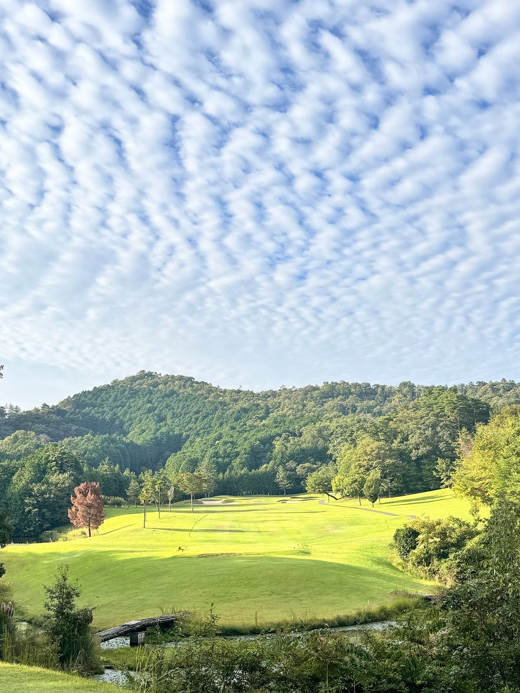
히로시마 골프 투어 마지막 날. 히로시마 공항에서 차로 15분. 그게 백룡호CC를 고른 이유였다. 공항 근처라 큰 기대 없이 시간 효율만 생각했다면 오산이다. 이름처럼 잔잔하고 넓은 호수가 코스를 감싸고 있다. 1번 홀 티박스에 올라서니 탁 트인 페어웨이와 빽빽한 소나무 숲이 펼쳐졌다. 잔디 관리가 꼼꼼했다. 그린 스피드도 빨라 퍼팅하는 재미가 있었다. 이번 라운딩의 하이라이트는 호수를 가로질러 쳐야 하는 시그니처 홀이었다. 그린 주변이 물로 둘러싸여 있다. 티박스에 서면 압박감이 밀려온다. 핀을 바로 노릴 것인가, 안전하게 칠 것인가. 앞바람까지 살짝 불어 클럽 선택이 까다로웠다. 공이 그린에 안착했을 때의 쾌감은 이루 말할 수 없었다. 전반을 마치고 장어덮밥 소바 정식에 나마비루 한 잔. 창밖으로 코스가 보였다. 동반자들과 이번 원정 에피소드를 복기하는 시간이 그 자체로 완벽한 힐링이었다. 라운딩, 식사, 샤워까지 마치고 여유롭게 짐을 챙겼다. 공항까지 15분. 커피 한 잔의 여유까지 있었다. 마지막 날 라운딩의 정답이었다. 여기서 끝내면 된다.
Last day of the Hiroshima golf trip. Fifteen minutes from Hiroshima Airport. That was the entire logic for choosing Hakuryuko CC. Going in with low expectations based on proximity to the airport would have been a mistake. The course wraps around a broad, calm lake, exactly as the name suggests. Standing on the first tee, the open fairway and dense pine forest settled the mind immediately. Divot management was thorough throughout. Greens ran fast enough to make putting interesting. The highlight of the round was the signature hole played across the lake. Water surrounds the green on all sides. The pressure on the tee is real. Attack the pin or play it safe — the group’s competitive instincts kicked in at exactly the wrong moment. A slight headwind complicated club selection further. The ball finding the green brought the kind of satisfaction that doesn’t need explanation. Finished the front nine and came in for unagi donburi soba set with a cold draft. The course visible through the window. Replaying the trip’s moments over food with good company — that’s what golf travel is actually for. Round done, meal done, showered, bags packed without rushing. Fifteen minutes to the airport. Arrived early enough for coffee. The perfect final-day timeline. MIKA’s Take: Fifteen minutes from the airport: a lake, pine forest, and an island green. That’s how the last day should end.
広島ゴルフツアー最終日。広島空港から車で15分。それが白竜湖CCを選んだ理由だった。 空港近くだからと大した期待をせずに時間効率だけを考えていたなら、それは間違いだった。名 前のとおり、広く穏やかな湖がコースを優しく包んでいる。1番ホールのティボックスに立つと、탁 트인 フェアウェイと鬱蒼とした松林が広がった。芝の管理が丁寧だった。グリーンスピードも速 く、パッティングが楽しかった。 今回のラウンドのハイライトは、湖を渡って打つシグネチャーホールだった。グリーン周辺が水に 囲まれている。ティボックスに立つとプレッシャーが押し寄せる。ピンを直接狙うか、安全に攻める か。向かい風もわずかに吹いてクラブ選択が難しかった。ボールがグリーンに止まったときの快 感は言葉にならなかった。 前半を終えてうな丼そばセットに生ビール一杯。窓の外にコースが見えた。同伴者たちと今回の 遠征を振り返る時間は、それ自体が完璧な癒しだった。 ラウンド、食事、シャワーを終えてゆっくり荷物をまとめた。空港まで15分。コーヒーを一杯飲む余 裕まであった。最終日ラウンドの正解だった。 締めればいい。
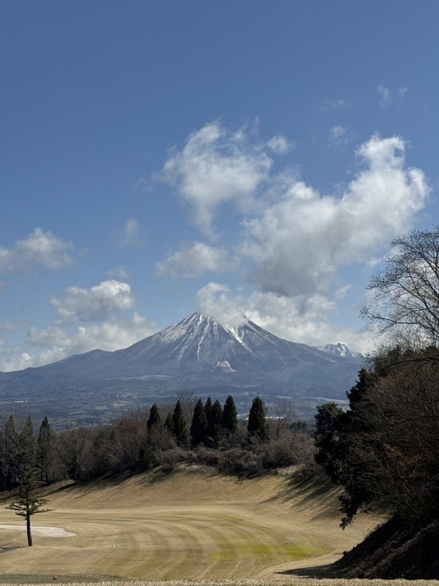
전날 하루 종일 비가 내렸다. 첫 라운딩부터 수중전인가 걱정했는데 오전 8시부터 하늘이 열렸다. 귀신같은 타이밍이었다. 요나고를 찾는 한국 여행객은 대부분 관광 목적이다. 덕분에 골프장은 전세 낸 듯 조용하고 프라이빗했다. 구글, 라쿠텐 평점 4.1. 입구에서부터 그 점수가 헛되지 않았음을 느꼈다. 셀프 데이 8,000엔. 레스토랑과 욕실 운영 없는 스루플레이 방식이다. 오히려 골프에만 집중하기 좋은 조건이었다. 아웃코스는 만만하지 않다. 첫 홀부터 파4 400미터다. 대부분의 홀이 OB 페널티 구역이라 한 번의 실수가 뼈아프다. 조용하게 매운맛이다. 8번 홀에서 다이센산이 살짝 모습을 드러내지만 맛보기에 불과했다. 10번 홀. 인코스에 들어서는 순간 다이센산이 정면으로 쏟아질 듯 등장한다. 진짜 입이 떡 벌어진다. 전반 내내 샷감이 최고조에 달했던 동반자가 이 풍경에 멘탈을 뺏겨 10번 홀에서만 OB를 두 개 냈다. 가장 아름답고 치명적인 홀이다. 앞 팀은 70대 일본 어르신 네 분이었다. 18홀을 4시간 20분에 주파했다. 중간에 두고 가신 웨지 3개를 주워다 드리는 한일 교류도 있었다. 잔디 상태는 아쉬운 부분이 있었다. 올해 35주년을 맞아 구장 측도 여러 준비를 하는 듯했지만 페어웨이 잔디가 다소 얇고 그린 주변에 맨땅이 드러난 곳도 있었다. 관리 의지는 느껴졌다. 8,000엔에 다이센산을 병풍 삼아 티샷을 날리는 호사. 한국에서는 상상할 수 없는 일이다. 싶어지는 홀이다.
Rain all day before the trip started. Worried the first round would be a washout. The sky cleared at 8 AM with precise timing. Korean visitors to Yonago tend to focus on sightseeing. The course was quiet and private as a result. Google and Rakuten ratings at 4.1 — the score felt justified from the entrance. Self-play day, 8,000 yen. No restaurant, no bath facilities, straight through. Better for focus. The Out course doesn’t give anything away. Hole 1 is a par 4 at 400 meters. Most holes carry OB penalty zones — one mistake hurts. A quietly demanding layout. Daisen makes a brief appearance at hole 8, but it’s a preview, nothing more. Hole 10. Stepping onto the In course, Daisen appears head-on, filling the frame. The jaw genuinely drops. A playing partner who had been striking the ball perfectly all morning lost focus entirely at this hole and hit two consecutive OBs. The most beautiful and most dangerous hole on the course. The group ahead: four Japanese gentlemen in their seventies. Completed 18 holes in 4 hours and 20 minutes. Mid-round, three wedges they’d left behind were returned to them — a small moment of cross-border goodwill. Turf condition was the weak point. The course is marking its 35th anniversary and preparations were visible, but fairway grass ran thin in places and some bare patches showed around the greens. The intention to maintain was there. 8,000 yen with Daisen as the backdrop. Impossible to replicate at home. MIKA’s Take: Daisen arrives at hole 10. It’s the hole where you want to take the photo before you take the shot.
前日は一日中雨だった。初ラウンドからずぶ濡れかと心配したが、午前8時にぴたりと空が 開いた。絶妙なタイミングだった。 米子を訪れる韓国人旅行者は観光目的が多い。おかげでコースは貸し切りのように静か でプライベートだった。GoogleとRakuten評価4.1。入口からその点数が伊達ではないと感 じた。 セルフデー、8,000円。レストランと浴場の営業はなく、スループレー方式だ。むしろゴルフ に集中するには好条件だった。 アウトコースは侮れない。1番ホールからパー4、400メートルだ。ほとんどのホールにOBペ ナルティゾーンがあり、一度のミスが痛い。静かに辛口のコースだ。8番ホールで大山が少 し姿を見せるが、あくまでも予告編に過ぎなかった。 10番ホール。インコースに入った瞬間、大山が正面から溢れるように現れる。本当に口が 開く。前半を通じてショット感が絶好調だった同伴者が、この景色にメンタルを持っていか れ、10番ホールだけでOBを2つ打った。最も美しく、最も危険なホールだ。 前の組は70代の日本人男性4人だった。18ホールを4時間20分で回り切った。途中、置き 忘れたウェッジ3本を届けるという温かい日韓交流もあった。 芝のコンディションは惜しい点だった。今年35周年を迎え、コース側もさまざまな準備をして いるようだったが、フェアウェイの芝がやや薄く、グリーン周りにベアグラウンドが露出して いる箇所も見られた。管理への意志は感じられた。 8,000円で大山を屏風に見立ててティショットを打つ贅沢。韓国では想像もできないことだ。 だ。
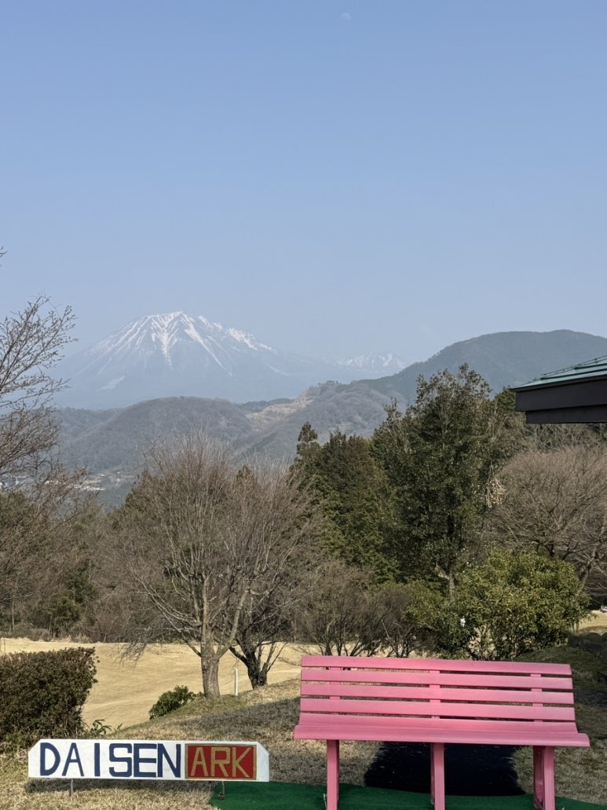
6,500엔. 한국에서 스크린 골프 치고 밥 한 끼 먹을 돈으로 PGM의 정규 18홀 챔피언십 코스를 밟는다. 1991년 버블 경제의 정점에서 개장했다. 산인 지역 최고의 챔피언십 코스를 만들겠다는 포부로 지어진 곳이다. 클럽하우스의 웅장함과 넓은 공간감에 그 시절의 흔적이 남아 있다. 2005년 PGM이 인수해 운영 중이다. 일본 골퍼들 사이에 “PGM 구장은 잔디 관리만큼은 배신하지 않는다”는 말이 있다. 프론트 데스크는 텅 비어 있었다. 호출 벨을 눌러야 직원이 나온다. PGM조차 인력난을 피하지 못했다. 페어웨이 카트 승입도 1인당 550엔 유료로 바뀌었다. 6,500엔이라는 가격을 유지하기 위한 고육지책이다. 코스는 전날 그린파크 다이센보다 훨씬 넓고 도그렉이 적다. 시각적 안정감이 크다. 단, 전후반 각 한 번씩 등장하는 파3 홀이 킬링 포인트다. 맞바람이 장난이 아니다. 평소보다 최소 두 클럽 더 길게 잡아야 한다. 평화로운 코스 속에 숨겨진 독이다. 클럽하우스 입구에 클럽 챔피언 전용 주차 구역이 따로 있다. 골프장 자체의 자부심이 대단하다. 비거리 자신 있는 싱글 핸디라면 챔피언 티박스에서 치는 걸 권한다. 에어레이션 진행 중이었다. 모래가 뿌려진 상태에서도 그린 스피드와 롤링에 전혀 문제가 없었다. PGM의 관리 저력을 다시 확인했다. 다이센산은 미세먼지에 가려 형체만 간신히 보였다. 전날 충분히 봤으니 그걸로 만족했다.
6,500 yen. The cost of a screen golf session and a meal back home — applied here to a PGM-operated, full 18-hole championship course. Opened in 1991 at the height of Japan’s bubble economy, built with the ambition of creating the finest championship course in the San’in region. The clubhouse’s scale and open proportions still carry the memory of that era. PGM took over operations in 2005. Among Japanese golfers, the accepted wisdom holds that PGM courses don’t disappoint on turf quality. The front desk was empty. A call bell summons staff when needed. Even PGM hasn’t been immune to Japan’s labor shortage. Cart access on fairways has shifted to a paid add-on at 550 yen per person — a necessary trade-off to hold the 6,500-yen green fee. The layout runs considerably wider than the previous day’s course at Green Park Daisen, with fewer dogleg holes. It reads calmly from the tee. The exceptions are the par 3 holes, one on each nine — both play directly into consistent headwinds that demand at least two extra clubs. Quiet killers embedded in an otherwise agreeable layout. A dedicated parking area for club champions sits near the entrance. The course takes its own prestige seriously. Single-digit handicappers with distance to spare should play the championship tees. Aeration was underway across the greens. Sand applied, and yet green speed and roll were unaffected. PGM’s maintenance capability confirmed once more. Daisen was obscured by fine dust — outline visible, nothing more. The previous day had delivered the full view. That was enough. MIKA’s Take: The par 3 holes are where this course shows its teeth. Two extra clubs and a clear head are the price of admission.
6,500円。韓国でスクリーンゴルフをして食事をする程度の金額で、PGMの正規18ホール チャンピオンシップコースに立てる。 日本のゴルフ場建設ブームが頂点に達した1991年に開場した。山陰地域最高のチャンピ オンシップコースを作るという志で建てられた場所だ。クラブハウスの堂々たるスケールと 広々とした空間に、当時の残り香がある。2005年からPGMが運営している。日本のゴル ファーの間では「PGMのコースは芝の管理だけは裏切らない」という定評がある。 フロントデスクは誰もいなかった。呼び出しベルを押してスタッフを呼ぶ半無人システムだ。 PGMでさえ人手不足を避けられなかった。フェアウェイへのカート乗り入れも1人550円の 有料サービスに変わっていた。6,500円という価格を維持するための苦肉の策だ。 コースは前日のグリーンパーク大山より格段に広く、ドッグレッグが少ない。視覚的な安定 感が大きい。ただし、前後半に各1回登場するパー3ホールがキリングポイントだ。向かい 風が相当強い。普段より最低2番手長いクラブが必要だ。穏やかなコースの中に潜む確か な毒だ。 クラブハウスの入口近くにクラブチャンピオン専用の駐車区画がある。コース自体のプライ ドが相当なものだ。飛距離に自信があるシングルハンディなら、チャンピオンティボックスか らのプレーをお勧めする。 エアレーション施工中だった。砂が撒かれた状態でも、グリーンのスピードと転がりにまっ たく問題はなかった。PGMの管理力を改めて確認した。 大山は黄砂に遮られ、輪郭がかろうじて見える程度だった。前日に十分見ていたので、そ れで十分だった。 る。
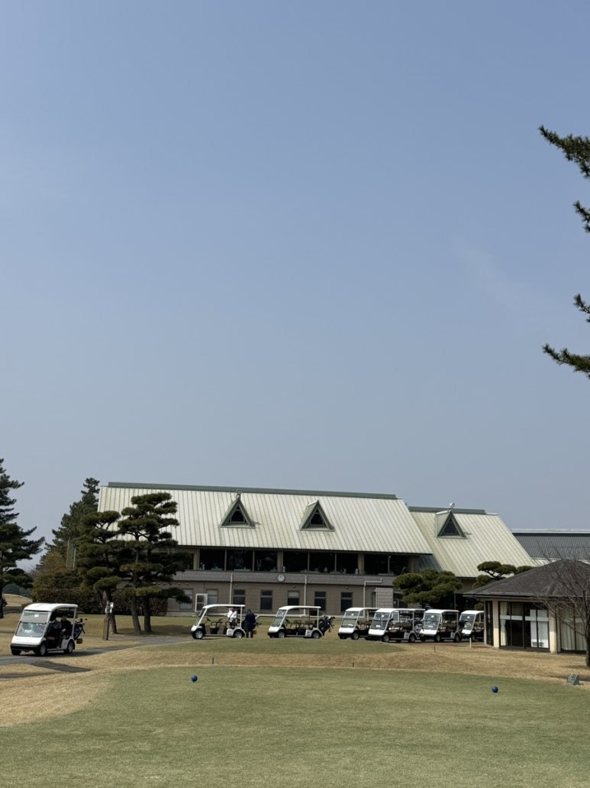
귀국 날이다. 비행기는 오후 3시 50분. 남아있는 가장 빠른 티오프가 8시 7분이었다. 딱 30분만 일찍 쳤으면 완벽했을 텐데, 하는 불길한 직감은 결국 현실이 됐다. 요나고는 일본의 서쪽 끝, 동해를 마주한 지역이다. 대륙발 황사와 미세먼지를 가장 먼저 맞는 곳이다. 비유하자면 일본의 인천이다. 도착 첫날 비가 내려 대기를 씻어준 덕분에 목요일 그린파크 다이센에서 환상적인 다이센산을 봤다. 금토일로 갈수록 미세먼지가 쌓였다. 봄철 요나고 여행이라면 미세먼지 변수를 반드시 고려해야 한다. 코스 평가는 솔직하게 하자면 지루하다. 완전 평지에 좁은 부지를 억지로 활용하다 보니 홀 간격이 좁고 옆 홀에서 공이 날아오는 일도 있다. 그린 양옆에 높은 벙커를 파놓아 강제로 변별력을 준 구성인데 반복되면 피로감이 온다. 바닷바람이 세서 맞바람 때는 최소 두 클럽 이상 길게 잡아야 한다. 전반은 2시간 10분에 순조롭게 마쳤다. 점심 1시간 10분 후 후반에 돌입하자 주말 밀림이 시작됐다. 파3 홀마다 2팀씩 대기가 붙었다. 시계는 계속 돌아갔다. 15번 홀에서 결단을 내렸다. 여기서 접자. 일본어가 되는 동반자가 프론트에 전화했다. 요나고CC 직원들은 호의적이었다. 카트를 끌고 바로 데리러 왔다. 샤워, 렌터카 반납, 탑승 완료. 귀국 날 주말 라운딩 생존 팁. 시간이 촉박할 것 같으면 전반 끝나고 직원에게 미리 귀띔해 두는 게 낫다. 18홀 다 치겠다고 욕심내다 비행기 놓치면 1만엔 아끼려다 수십만원이 날아간다. 포기할 때 포기하는 게 승자다. 요나고 3박 4일. 미세먼지와 싸우고, 비행기 시간에 심장이 졸아든 순간도 있었다. 그게 다 여행이다.
Departure day. Flight at 3:50 PM. The earliest available tee time was 8:07. Thirty minutes earlier would have been comfortable. The uneasy feeling about that gap turned out to be correct. Yonago sits at Japan’s western edge, facing the Sea of Japan. It takes the first direct hit from continental dust and fine particles coming off the mainland. In positional terms, it’s Japan’s Incheon. Rain on arrival day had cleaned the air, which gave Thursday at Green Park Daisen the clear Daisen view. By Friday and Saturday, the particulates had built back up. Spring travel to Yonago should factor in air quality as a genuine variable. Honest course assessment: dull. Flat terrain, a tight footprint, holes packed in close enough that errant shots from adjacent fairways aren’t unusual. High-walled bunkers flanking greens provide the only scoring differentiation, and the repetition wears thin. Strong sea wind demands at least two extra clubs into the headwind. The front nine finished in 2 hours and 10 minutes without delays. After a 70-minute lunch break, the back nine ran into classic weekend congestion. Two groups stacked up at every par 3. The clock kept moving. The call was made at hole 15. Stop here. A Japanese-speaking member of the group called the front desk. Yonago CC staff responded immediately and came out to collect the cart. Shower, car return, boarding — all done in time. Survival advice for weekend golf on departure day: if timing looks tight after the front nine, give the staff advance notice. Finishing all 18 out of stubbornness and missing a flight costs considerably more than the green fee saved. Three nights, four days in Yonago. Fine dust, a tight airport run, a round cut short. All of it worth remembering. MIKA’s Take: The decision to stop at 15 was the best shot of the trip.
帰国日だ。飛行機は午後3時50分。残っていた最も早いティオフが8時7分だった。あと30 分早ければ完璧だったのに、という不吉な直感は現実になった。 米子は日本の西の端、日本海に面した地域だ。大陸からの黄砂と微小粒子状物質を最初 に受ける場所だ。例えるなら日本の仁川だ。到着初日の雨が大気を洗い流してくれたおか げで、木曜日のグリーンパーク大山では幻想的な大山を見ることができた。金土日と経つ につれて微粒子が蓄積していった。春の米子旅行では、大気汚染の変数を必ず考慮しな ければならない。 コースの評価を正直に言えば、退屈だ。完全な平地に狭い敷地をやりくりしているため、 ホール間隔が狭く、隣のホールから球が飛んでくることもある。グリーン両脇に高いバン カーを掘って強制的に変別力を持たせた構成だが、繰り返されると疲労感がある。海風が 強く、向かい風の時は最低2番手以上長いクラブが必要だ。 前半は2時間10分でスムーズに終わった。1時間10分の昼食後、後半に入ると週末の渋 滞が始まった。パー3ホールごとに2組ずつ待ちが発生した。時計は止まらなかった。 15番ホールで決断した。ここでやめよう。日本語ができる同伴者がフロントに電話した。米 子CCのスタッフは親切だった。すぐにカートで迎えに来てくれた。シャワー、レンタカー返 却、搭乗完了。 帰国日の週末ラウンドのサバイバルアドバイス。前半終了後、時間が厳しそうなら早めに スタッフに伝えておく方がいい。18ホール全部回ろうと欲張って飛行機を逃すと、1万円を 節約しようとして数十万ウォンが飛んでいく。諦めるべき時に諦めるのが勝者だ。 米子3泊4日。微粒子と戦い、飛行機の時間に心臓が縮んだ瞬間もあった。それもすべて 旅だ。
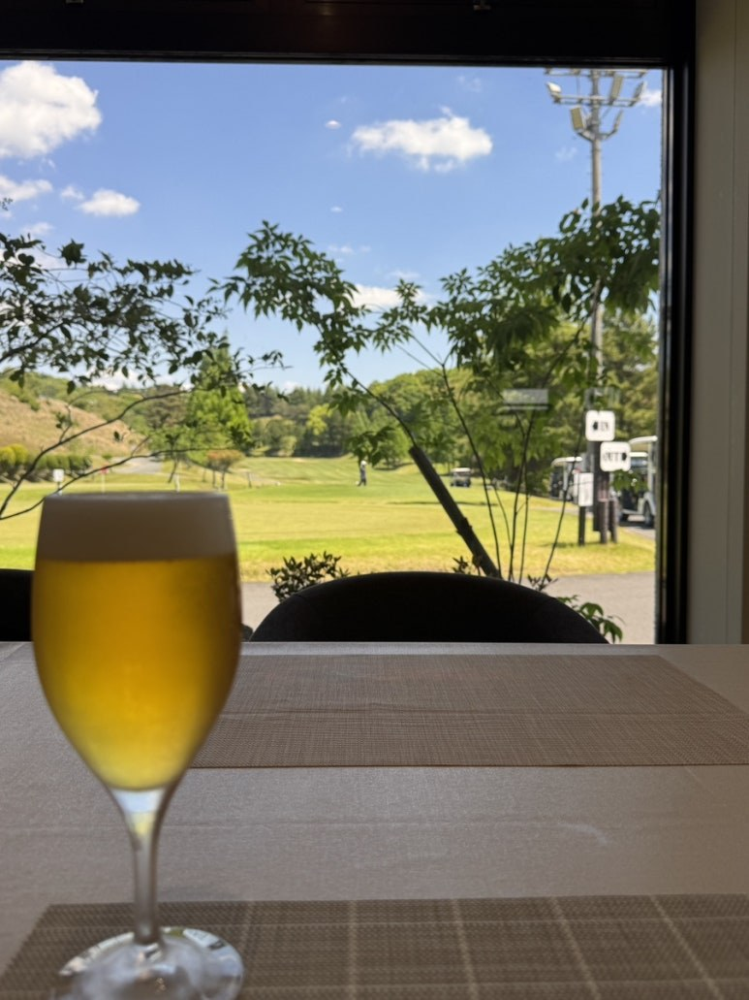
청주공항에서 이륙 후 50분이면 기타큐슈다. 비행시간만 보면 여기가 한국인지 일본인지 체감이 안 된다. 입국 수속도 빠르게 끝났다. 시간이 남아 골프장으로 직행해 클럽하우스에서 식사하기로 바꿨다. 구장 이름이 길다. 야마구치 레인보우 힐즈 간몬 키쿠가와 골프클럽. 유니매트 그룹 운영이다. 일본 전역 18개 골프장을 소유한 곳이다. 지난 요나고에서 들렀던 다이센 아크 CC도 같은 계열이다. 대형 자본이 운영하는 만큼 기본 관리와 시설 퀄리티는 보장된다. 도착하자마자 식당으로 향했다. 카레 돈카츠에 나마비루 한 잔. 새벽부터 이어진 이동의 피로가 즉각적으로 씻겼다. 오후 스루플레이 기준 골프, 점심, 맥주, 페어웨이 카트 진입 포함해서 9,440엔이었다. 골프장에 사람이 없었다. 평일이기도 하지만 한국 골퍼들이 선호하는 후쿠오카가 모든 수요를 흡수하는 탓이다. 기타큐슈에서 1시간 북쪽 시골 골프장까지는 인기가 닿지 않는다. 일본인들도 프라임 타임은 오전이고 대부분 노인층이라 오후는 조용하다. 코스는 전체적으로 무난했다. 내리막 그린은 끝까지 흘러가는 살벌함이 있었고, 오르막 그린은 때려도 다 못 올라가는 구조였다. 첫날이라 몸을 푸는 라운드. 덜 풀린 몸이 골프장에 공도 몇 개 헌납했다. 5월 초중순 일본 서부 지역 산등성이를 보면 군데군데 누렇게 탈색된 나무들이 보인다. 병충해나 관리 부실이 아니다. 모밀잣밤나무 등 참나무류의 개화기다. 묵은 잎과 새순, 누런 꽃이 뒤섞이면서 색상 대비가 심하게 일어나는 정상적인 생태 현상이다. 기온이 더 오르면 밤꽃 특유의 냄새가 시작된다. 나무들이 치열하게 세대교체를 하는 중이다. 라운딩 중 태양광 패널이 설치된 골프장을 처음 봤다. 일본 지방 골프장의 현실이 눈에 들어오기 시작했다.
Fifty minutes from Cheongju Airport to Kitakyushu. Short enough to lose the sense of having crossed a border. Immigration moved quickly. Extra time in hand meant going straight to the course and eating at the clubhouse instead. The course name runs long: Yamaguchi Rainbow Hills Kanmon Kikugawa Golf Club. Operated by Unimat Group, which owns 18 courses across Japan. Daisen Arc CC in Yonago last March was the same group. With institutional capital behind the operation, baseline maintenance and facilities are reliable. Straight to the restaurant on arrival. Curry katsu, a cold draft beer. The fatigue from an early morning departure cleared immediately. All in — golf, lunch, beer, fairway cart access — came to 9,440 yen on the afternoon splay-through rate. The course was quiet. Weekday, yes, but also a reflection of how Fukuoka absorbs virtually all Korean golf demand in the region. A rural course an hour north of Kitakyushu doesn’t make most itineraries. Japanese players favor morning tee times, and the afternoon crowd skews older and smaller. The layout was straightforward throughout. Downhill greens ran fast enough to carry the ball to the edge. Uphill greens absorbed more than expected. First day of the trip — loosening up the body, leaving a few balls on the course in the process. Mid-May in western Japan: the mountain ridges show patches of yellow-brown among the green. Not disease, not neglect. Oak and related species are in their flowering period. Old leaves, new shoots, and pale yellow flowers layering together create the visual contrast. When temperatures rise further, the distinctive smell of chestnut flowers follows. The trees are in the middle of a generational changeover. First sighting of solar panels installed on a golf course during a round. The picture of what regional Japanese golf is becoming came into sharper focus. MIKA’s Take: Fifty minutes of flying, 9,440 yen, a quiet afternoon. A clean first day.
清州空港から離陸して50分で北九州だ。飛行時間だけ見ると、ここが韓国なのか日本な のか体感できないほど近い。入国手続きも早く終わった。時間が余ったのでそのままゴル フ場へ向かい、クラブハウスで食事することに変更した。 コース名が長い。山口レインボーヒルズ関門菊川ゴルフクラブ。ユニマットグループが運営 している。全国18のゴルフ場を所有しているグループだ。先日の米子で訪れた大山アーク CCも同じ系列だった。大型資本が運営するだけあって、基本的なコース管理と施設の質 は保証されていると見ていい。 到着してすぐレストランへ向かった。カレーとんかつに生ビール一杯。早朝からの移動の疲 れがすぐに吹き飛んだ。午後スループレー料金で、ゴルフ、昼食、ビール、フェアウェイカー ト乗り入れ込みで9,440円だった。 コースに人がいなかった。平日ということもあるが、韓国人ゴルファーが好む福岡がすべて の需要を吸収しているためだ。北九州から1時間北の田舎のゴルフ場までは人気が届かな い。日本人もプライムタイムは午前で、大半が高齢者なので午後は静かだ。 コース全体的に無難だった。下りのグリーンはグリーンの端まで転がっていく怖さがあり、 上りのグリーンはいくら打っても届かない構造だった。初日なので体をほぐすラウンド。ほぐ しきれなかった体がコースにボールをいくつか献上した。 5月中旬の日本西部、山の稜線を見ると所々黄色く変色した木々が見える。病虫害でも管 理不足でもない。ブナやコナラなどの開花期だ。古い葉と新芽、黄色い花が混在して色の コントラストが強く出る、正常な生態現象だ。気温がさらに上がると栗の花特有の匂いが漂 い始める。木々が世代交代の真っ最中だ。 ラウンド中、太陽光パネルが設置されたゴルフ場を初めて目にした。日本の地方ゴルフ場 の現実が少し見えてきた。
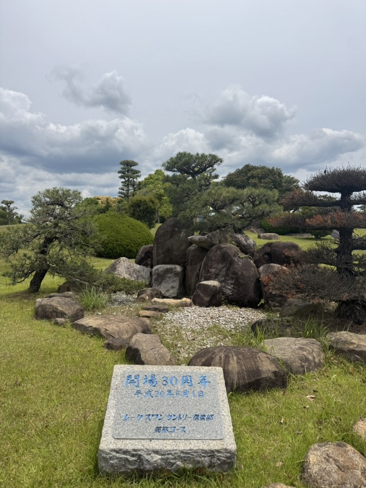
공홈에서 직접 예약했다. 홈페이지만으로는 퀄리티 확인이 어려워 구글맵으로 검증했다. 관리 평판이 좋았다. 골프장에 들어서면 대략적인 와꾸가 나온다. 관리에 힘쓰는 곳인지 아닌지는 금방 느껴진다. 백조의 호수라는 이름에서 거대한 호수를 기대했다면 실망할 수 있다. 연못이 8~9개 있을 뿐이다. 이름의 유래는 단순하다. 1975년 효고현에 먼저 문을 연 레이크스완 컨트리클럽의 자매 구장으로 브랜드명을 그대로 가져온 것이다. 과거 골프장 전성기 시절 코스 내 연못에 실제 백조를 풀어 길렀다고 한다. 기업 마케팅 차원의 연출이었다. 기본적으로 산악 지형을 깎아 만든 구릉지 코스다. 관리 상태는 상급이다. 그린이 적당히 잘 다져져 있고 페어웨이 디봇 관리도 좋다. 벙커 모래가 무거워서 처음에 좀 헤맸다는 게 유일한 단점이었다. 페어웨이가 좁다는 리뷰가 있는데 긴장감을 가지고 플레이하기에 충분한 수준이다. 그린 주변에 클럽 분실 방지 안내 표지판이 있었다. 반가운 표지판이었다. 노캐디 셀프 라운딩을 하다 보면 아이언이나 웨지를 그린 주변이나 러프에 두고 오는 일이 생긴다. 그린 주변은 뒷 팀이 챙겨주지만 다른 곳은 포인트가 없으면 잃어버리기 십상이다. 다른 골프장들도 이런 표지판이 생겼으면 한다. 개장 30주년 당시 헤이세이 20년. 1988 더하기 20은 2008년이고, 거기서 30년을 빼면 1978년 개장이다. 내년이면 50주년이다. 50년 된 골프장이라 카트는 70~80년대 한국 버스가 생각나는 올드한 스타일이었지만 관리가 잘 되어 10~20년밖에 안 된 것처럼 보였다. 점심 포함 7,400엔 플랜에 맥주 800엔, 라커비 250엔. 총 8,450엔. 요즘 라커비를 따로 받는 곳이 늘고 있다. 시모노세키 지역은 점심 추가요금이 아직 높지 않아서 식사 만족도가 좋다. 주중 9홀을 2시간에 돌 수 있을 정도로 대기가 없다. 기타큐슈로 오는 분들이라면 한 번쯤 들러볼 만한 곳이다.
Booked directly through the course website. The homepage doesn’t reveal much about quality, so Google Maps reviews provided the verification. Maintenance reputation came back solid. Walking into a course tells you quickly whether the team there takes pride in the place. The name Lake Swan sets expectations of water. Eight or nine small ponds is what’s actually here. The origin is straightforward: the Mie course is a sister property to the Lake Swan Country Club that opened in Hyogo in 1975, carrying the brand name forward. During Japan’s golf boom years, actual swans were kept in the course ponds — a corporate marketing concept, not a geographical feature. The layout is hillside terrain carved from mountain — not a lakeside course. Maintenance sits at the upper end of average. Greens well-compacted, fairway divot management solid. Heavy bunker sand took some adjustment early on. Reviews calling the fairways narrow are overstated — the width is manageable and provides reasonable challenge. A club-reminder signboard near the greens was a welcome sight. Self-caddying players occasionally leave irons or wedges behind on the course. Players following will almost always return a club left near a green, but elsewhere, without knowing exactly where it was left, the club is effectively lost. More courses should have these signs. The 30th anniversary plaque showed Heisei year 20. Heisei year plus 1988 gives the Western calendar year: 2008 minus 30 equals an opening year of 1978. The course turns 50 next year. The carts have the character of that era but have been maintained well enough to read as much newer. Lunch plan at 7,400 yen, beer 800 yen, locker fee 250 yen — total 8,450 yen. Locker fees as a separate charge are becoming more common across Japan. Food pricing in the Shimonoseki area remains reasonable. A 9-hole round is completable in around two hours on a weekday. Worth adding to an itinerary built around Kitakyushu. MIKA’s Take: No swans, but the maintenance was very much alive. The course outperforms its name.
公式ホームページから直接予約した。ホームページだけではクオリティの確認が難しいた め、Googleマップでも検証した。管理の評判が良かった。ゴルフ場に入るとだいたいの雰 囲気がわかる。管理に力を入れているかどうかはすぐに感じ取れる。 「白鳥の湖」という名前から大きな湖を期待したなら失望するかもしれない。池が8〜9個あ るだけだ。名前の由来は単純だ。1975年に兵庫県に先に開場したレイクスワンカントリー クラブの姉妹コースとして、ブランド名をそのまま引き継いだものだ。ゴルフ場全盛期には 実際にコース内の池に白鳥を放って飼育していたという。企業マーケティングとして演出さ れたものだった。 基本的に山岳地形を削って作った丘陵コースだ。管理状態は上級だ。グリーンが適度に締 まっており、フェアウェイのディボット管理も良い。バンカーの砂が重く、最初は少し手こずっ たのが唯一の難点だった。フェアウェイが狭いというレビューがあるが、程よい緊張感を 持ってプレーするには十分な広さだ。 グリーン周辺にクラブ忘れ防止の案内標識があった。ありがたい表示だった。キャディなし のセルフラウンドをしていると、アイアンやウェッジをグリーン周辺やラフに置き忘れること がある。グリーン近くなら後の組がほぼ確実に届けてくれるが、他の場所では正確な場所 がわからなければ見つからないと思った方がいい。他のゴルフ場にもこういった表示が増 えてほしいと思う。 開場30周年の看板に平成20年とあった。平成の年数に1988を加えると西暦になる。2008 年から30を引くと1978年開場だ。来年で50周年になる。50年の歴史を持つゴルフ場だけ あって、カートは70〜80年代の韓国のバスを思わせる古いスタイルだったが、管理が行き 届いていて10〜20年程度にしか見えなかった。 昼食込み7,400円プランにビール800円、ロッカー代250円。合計8,450円。最近ロッカー代 を別途請求するところが増えている。下関地区は昼食の追加料金がまだ高くなく、食事の 満足度が高いのが利点だ。 平日は9ホールを2時間で回れるほど待ちがない。北九州方面を訪れる方なら一度立ち寄 る価値のある場所だ。
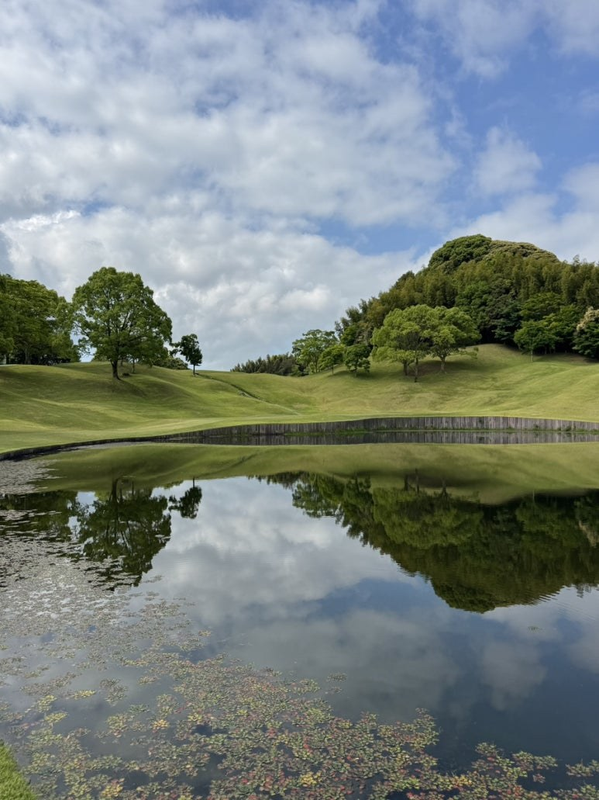
시모노세키에서 방문객이 접근할 수 있는 최고의 골프장이다. 전통의 시모노세키 골프클럽은 회원 동반이 필수다. 그래서 시모노세키 골든 GC가 답이다. 설계는 잭 니클라우스. 골든 베어. 클럽하우스 로비에 초상화와 메이저 우승 트로피 부조가 장식되어 있다. 전설의 기운을 받으며 1번 홀 티박스에 섰다. 눈으로 보면 무난한 구릉 코스다. 스코어카드는 무난하지 않다. 광활해 보이는 페어웨이에 평지가 없다. 철저하게 계산된 언듈레이션이 발끝 오르막, 내리막 트러블 샷 상황을 끊임없이 만들어낸다. 잭 니클라우스 시그니처인 벙커 속 잔디섬. 왜 공은 넓은 페어웨이를 놔두고 좁은 잔디섬 근처로, 턱 높은 벙커 속으로 빨려 들어가는지 18홀 내내 묻게 된다. 후반으로 갈수록 나무가 거울처럼 비치는 연못들이 등장한다. 한 폭의 그림이다. 티샷부터 물을 넘겨야 하는 심리적 압박과 곳곳의 벙커가 콜라보를 이룬다. 경치에 취해 집중력을 잃는 순간 공은 물속으로 간다. 18번 홀. 안전하게 끊어 치겠다는 전략으로 샷을 했다. 공은 페어웨이 벙커로 빨려 들어갔다. 미리 알고 함정을 판 것 같았다. 모래가 무겁다. 완벽한 정타가 아니면 클럽이 박혀서 나오질 않는다. 거기에 맞바람까지. 서비스 홀이 아니라 마지막까지 기를 죽이는 홀이었다. 1993년 개장, 30년이 넘었다. 페어웨이 관리가 흠잡을 데 없다. 대나무 숲과 나무들이 일본 명문 구장 특유의 품격을 보여준다. 연습장이 잘 갖춰져 있다. 드라이버보다 코스 매니지먼트가 핵심인 구장이니 일찍 도착해 샷 점검을 하고 나가는 게 낫다. 점심은 히야시츄카. 아삭한 오이와 토마토, 맛살이 일품이었다. 전반에 털린 멘탈을 여기서 부여잡고 후반으로 향했다.
The most accessible top-tier course in Shimonoseki. Shimonoseki Golf Club requires member accompaniment. Shimonoseki Golden GC is the answer for visiting players. Designed by Jack Nicklaus — the Golden Bear. His portrait and major championship trophy reliefs are mounted in the clubhouse lobby. The first tee gets played with that weight behind it. Visually, the layout reads as a gentle hillside course. The scorecard tells a different story. The broad fairways have no flat lies anywhere. Calculated undulation creates constant trouble shots — toe-uphill, heel-downhill, sidehill — throughout all 18 holes. Nicklaus’s signature grass islands within bunkers appear throughout. The question of why the ball ignores the wide fairway and finds the narrow grass island or the deep-faced bunker gets asked repeatedly. The back nine introduces ponds that reflect the surrounding trees like mirrors. Stunning to look at. The combination of forced carries off the tee and bunkers positioned throughout creates sustained pressure. Lose focus admiring the scenery and the ball finds the water. Hole 18. Committed to a conservative, safe approach. The ball found the fairway bunker anyway. As if it knew. The sand is heavy — anything less than a clean strike buries the club. Headwind added on top. Not a service hole. A final act of systematic deflation. Opened in 1993, over thirty years old. Fairway maintenance is immaculate. Bamboo groves and mature trees carry the quiet prestige of a Japanese top-tier course. The practice range is well set up. This course rewards course management over power — arriving early for a proper warm-up is the right call. Lunch: hiyashi chuka. Cold noodles, crisp cucumber and tomato, generous crab sticks. Exactly what was needed before heading back out to the back nine. MIKA’s Take: The traps Nicklaus digs are beautiful. Falling into them is part of the experience.
下関で訪問者がアクセスできる最高のゴルフ場だ。伝統の下関ゴルフクラブはメンバー同 伴が必須だ。だから下関ゴールデンGCが答えになる。 設計はジャック・ニクラウス。ゴールデンベアだ。クラブハウスのロビーに肖像画とメジャー 優勝トロフィーのレリーフが飾られている。伝説のオーラを浴びながら1番ホールのティボッ クスに立った。 見た目は穏やかな丘陵コースだ。スコアカードはそうではない。広大に見えるフェアウェイ に平らなライはひとつもない。徹底的に計算されたアンジュレーションがつま先上がり、つ ま先下がりのトラブルショットを絶え間なく生み出す。ニクラウスのシグネチャー、バンカー 内の芝の島。広いフェアウェイを無視してなぜボールが狭い芝の島の近く、深いバンカー の中へと吸い込まれるのか、18ホールを通じて問い続けることになる。 後半に進むにつれ、木々が鏡のように映り込む池が登場する。一幅の絵のようだ。ティ ショットから越えなければならない心理的プレッシャーとバンカーのコラボが続く。景色に見 惚れて集中力を失った瞬間、ボールは水の中へ消える。 18番ホール。安全に刻んでいく戦略でショットした。ボールはフェアウェイバンカーへ吸い 込まれた。あらかじめ予測して罠を仕掛けてあったかのようだった。砂が重い。完璧なク リーンヒットでなければクラブが砂に埋まって抜けない。向かい風まで加わって。サービス ホールではなく、最後まで気力を削ぐホールだった。 1993年開場、30年以上が経つ。フェアウェイの管理は文句のつけようがない。竹林と木々 が日本の名門コース特有の静かな品格を示している。練習場もよく整備されている。飛距 離よりコースマネジメントが鍵のコースなので、早めに到着してショットの確認をしてから出 るのが正解だ。 昼食は冷やし中華。シャキシャキのきゅうりとトマト、たっぷりのカニカマが絶品だった。前 半にやられたメンタルをここで立て直し、後半へと向かった。
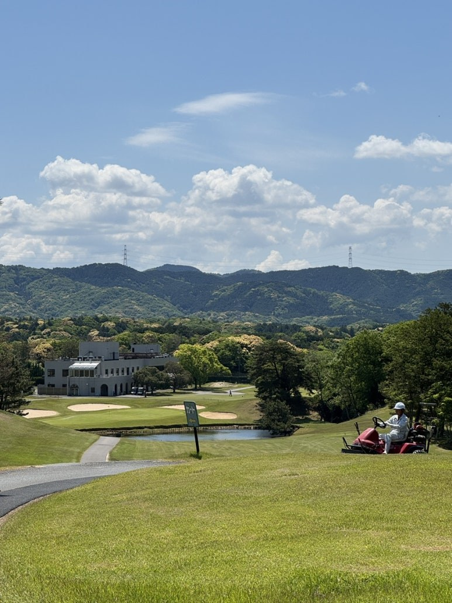
야마구치현 시모노세키 안쪽 깊숙이 위치한 곳이다. 토요타코(豊田湖). 이름 그대로 호수를 끼고 있는 지형이다. 첫날 들렀던 간몬 키쿠가와와 같은 야마구치 레인보우 힐스 계열이다. 카운터에 4~6월 이벤트 달력이 비치되어 있다. 평일 6,500엔, 주말 9,500엔 수준. 슈퍼 먼데이, 레이디스 데이, 골퍼 감사데이. 매주 할인 혜택이 꽉 차 있다. 불필요한 부대비용 없이 누구나 합리적인 가격에 칠 수 있는 시스템이다. 이날은 27홀을 돌았다. 점심 포함 6시간 30분. 27홀에 나마비루, 철판 함박스테이크까지 포함해서 8,700엔이었다. 믿기 어려운 가격이다. 페어웨이 카트 진입이 허용됐다. 볼 바로 옆까지 카트를 몰고 간다. 27홀 강행군인데도 체력 소모가 크지 않았던 이유다. 코스 안은 자연 그 자체다. 라운드 중 페어웨이 그늘에 앉아 쉬고 있는 야생 사슴 무리를 만났다. 수련이 떠 있는 맑은 연못, 작은 바위 폭포, 뭉게구름. 가성비 골프장이라는 타이틀이 미안할 만큼 뷰가 훌륭하다. 그 아름다움이 곧 해저드다. 물을 넘기거나 좁은 계곡을 건너쳐야 하는 홀들이 곳곳에 있다. 빽빽한 소나무 숲은 티샷 정확도를 요구한다. 페어웨이가 좁아 조금만 빗나가면 트러블 샷이거나 OB다. 홀 간 이동 시 철제 다리를 건너며 ‘최서행’ 표지판을 만날 때 깊은 계곡 속에 있다는 걸 실감한다. 아침 일찍부터 예초기를 돌리는 관리 직원의 모습이 보였다. 이 편리함이 그냥 유지되는 게 아니라는 걸 알 수 있었다. 살아남기 위한 골프장의 노력이 대단하다. 야마구치현에 골프 치러 간다면 꼭 들러볼 것을 권한다. 단, 날씨가 좋지 않으면 카트 진입이 불가할 수 있다는 점은 기억해두자.
Deep inside Shimonoseki, Yamaguchi Prefecture. Toyotako — the name states it plainly: Toyota Lake. Hillside terrain built around a lake. Same Yamaguchi Rainbow Hills group as the Kanmon Kikugawa course on day one. An event calendar for April through June sits at the counter. Weekday rate: 6,500 yen. Weekend: around 9,500 yen. Super Monday, Ladies Day, Golfer Appreciation Day — discount programs fill every week. A system designed for accessibility, no unnecessary add-ons required. 27 holes played this day. Six and a half hours including lunch. 27 holes, draft beer, teppan hamburg steak — 8,700 yen total. A number that’s difficult to accept at face value. Fairway cart access permitted. Cart goes right to the ball. Playing 27 holes without excessive fatigue — that’s why. The course is raw nature. During the round, a group of wild deer rested in the shade of a fairway. Lotus-covered ponds, small rock waterfalls, cumulus clouds over the hills. The view is too good for a course at this price point. The beauty is also the hazard. Water carries and narrow valley crossings appear throughout. Dense pine forest demands accurate tee shots. Fairways run tight — miss slightly and it’s a trouble shot or OB. Crossing an iron bridge between holes, a “maximum slow speed” sign makes the depth of the terrain feel real. Early morning groundskeeping staff were already out with mowers when the round began. The comfort doesn’t maintain itself. A course fighting to survive and doing it well. Anyone heading to Yamaguchi Prefecture for golf should include this. One note: cart access may not be permitted in poor weather. MIKA’s Take: 8,700 yen for 27 holes, deer, waterfalls, and lotus ponds. This is what golf looks like without the markup.
山口県下関の奥深くに位置する。豊田湖ゴルフクラブ。名前のとおり湖を抱えた地形だ。初 日に訪れた関門菊川と同じ山口レインボーヒルズ系列だ。 カウンターに4〜6月のイベントカレンダーが置いてある。平日6,500円、週末9,500円水 準。スーパーマンデー、レディースデー、ゴルファー感謝デー。毎週割引特典が詰まってい る。不要なオプション料金なしで誰でも手頃な価格でプレーできるシステムだ。 この日は27ホールを回った。昼食を含めて6時間30分。27ホールに生ビール、鉄板ハン バーグステーキまで含めて8,700円。信じがたい価格だ。 フェアウェイへのカート乗り入れが許可されていた。ボールのすぐそばまでカートで行ける。 27ホールの強行軍でも体力の消耗が少なかった理由だ。 コースの中は自然そのものだ。ラウンド中、フェアウェイの木陰でくつろぐ野生の鹿の群れ に出会った。スイレンが浮かぶ澄んだ池、小さな岩の滝、湧き上がる積乱雲。コスパゴルフ 場という言葉が申し訳なくなるほどの絶景だ。 その美しさがそのままハザードでもある。水を越えたり狭い谷を渡ったりするホールが随所 にある。密生した松林がティショットの精度を要求する。フェアウェイが狭く、少しでも外れる とトラブルショットかOBだ。ホール間の鉄橋を渡る際に「最徐行」の標識を見ると、深い渓 谷の中にいることを実感する。 早朝から草刈り機を動かす管理スタッフの姿が見えた。この快適さが自然に維持されてい るわけではないことがわかった。 生き残るための努力が伝わってくるゴルフ場だ。山口県にゴルフをしに行くなら必ず立ち寄 ることをお勧めする。ただし、天候が悪い場合はカート乗り入れができない可能性があるこ とは覚えておこう。 ういうものだ。
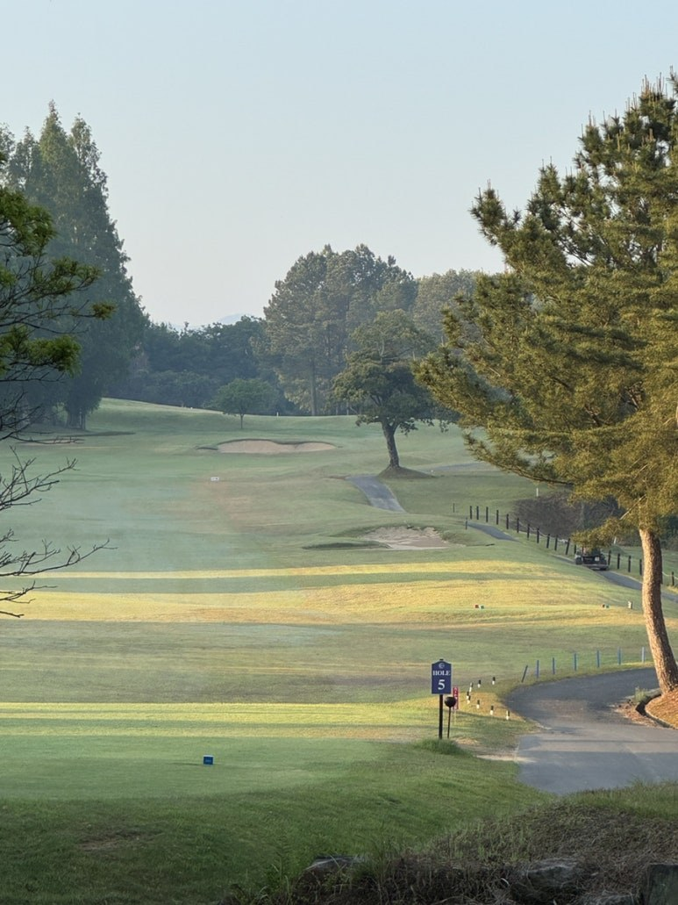
시모노세키 원정 마지막 날. 귀국 비행기 때문에 선택지는 조조 플레이뿐이었다. 기타큐슈 공항에서 가장 가까운 구장. 클럽하우스 도착은 새벽 4시 55분. 첫 팀이라 5시 10분으로 앞당겨 출발했다. 새벽 첫 팀의 조건은 냉정하다. 밤새 이슬을 머금은 잔디는 드라이버 런이 사실상 제로다. 벙커 모래는 축축하게 뭉쳐 바운스가 튕겨 나가기 쉽다. 비행기 시간에 쫓기니 그린 위에서도 평소보다 빠르게 치고 넘어갔다. 전반을 마치고 후반으로 넘어가려는데 변수가 생겼다. 그린키퍼들의 코스 관리 작업으로 클럽하우스 앞에서 강제 대기가 걸렸다. 후반 스타트는 7시 25분으로 밀렸다. 골프장을 떠나야 하는 마지노선은 8시 40분. 75분밖에 없었다. 15번, 16번 홀을 스킵하고 8시 40분에 간신히 라운드를 종료했다. 구글맵 평점 3점 중후반. 수치만 보면 그저 그런 로컬 구장이다. 직접 겪어보니 평점 이상이었다. 산악 지형인데도 페어웨이가 넓다. 업다운이 다이내믹하게 설계되어 18홀 내내 지루하지 않았다. 7,300엔. 조조 할인이 적용된 가격이다. 후쿠오카 시내에서 1시간 거리에 이 레이아웃이면 아침 일찍 일어난 보람이 있다. 그린키퍼 작업으로 2홀을 패스한 건 손해였다. 그런데 그 이유가 코스 관리였다. 묘하게 납득이 갔다. 저 멀리 벙커와 페어웨이를 혼자 정리하는 작업자를 보며 생각이 들었다. 최소 인력으로 골프장 퍼포먼스를 최대치로 끌어올리는 집요함. 화려한 클럽하우스로 포장해놓고 잔디 관리는 뒷전인 채 비싼 그린피만 받는 골프장들이 배워야 할 것이다. 축축한 아침 이슬로 시작해 타임어택으로 끝난 마지막 날. 쫓기듯 끝난 라운드였지만 일본 로컬 골프장의 투박하고 단단한 저력을 확인하기엔 충분한 3시간 40분이었다. 228페이지가 남아있다.
Last day of the Shimonoseki trip. The return flight left no option but an early morning round. Closest course to Kitakyushu Airport. Arrived at the clubhouse at 4:55 AM. First group out — tee time moved up to 5:10. The conditions of a dawn first group are unforgiving. Overnight dew saturates the turf and driver run is effectively zero. Bunker sand clumps wet and heavy, making clean contact unreliable. The flight schedule created urgency, and putting became faster and less considered than usual. After the front nine, a delay. Greenkeeping staff were working on the course and a mandatory wait was enforced at the clubhouse. Back nine start pushed to 7:25. Hard deadline to leave the course: 8:40. Seventy-five minutes remaining. Holes 15 and 16 were skipped. Finished at 8:40. Google Maps rating: mid-to-high 3s. Looks like an unremarkable budget local course on paper. The actual experience exceeded that. Fairways are wide for mountain terrain. Elevation changes are dynamic without feeling forced — 18 holes without a dull moment. 7,300 yen with the early morning discount. A course with this layout, one hour from central Fukuoka, at that price — the early alarm was justified. Skipping two holes because of greenkeeping work was a loss. And yet, knowing that was the reason, the frustration didn’t fully take hold. One worker in the distance, alone, reshaping a bunker and trimming fairway edges. Minimum personnel, maximum output, absolute focus on the course itself. A lesson that golf facilities running on inflated green fees while neglecting their turf would do well to study. A round that started in morning dew and ended in a time sprint. Three hours and forty minutes that confirmed what Japan’s local golf culture quietly delivers, every time. MIKA’s Take: 5:10 AM, 7,300 yen, two holes skipped. Page 72 done. Two hundred and twenty-eight still to go.
下関遠征最終日。帰国便の都合でアーリーモーニングプレー一択だった。北九州空港から 最も近いコース。クラブハウスへの到着は午前4時55分。一番組だったため、5時10分に前 倒しでスタートした。 夜明け前の一番組のコンディションは厳しい。夜露を含んだ芝はドライバーのランがほぼ ゼロだ。バンカーの砂は湿って固まり、バウンスが弾きやすい。飛行機の時間に追われ、 グリーン上でも普段より早いペースで打ち進んだ。 前半を終えて後半へ向かおうとしたところで変数が生じた。グリーンキーパーのコース整備 作業により、クラブハウス前で強制待機となった。後半スタートは7時25分に押した。コース を離れなければならないリミットは8時40分。残り75分しかない。15番と16番の2ホールを スキップし、8時40分にギリギリラウンドを終えた。 Googleマップの評価は3点台中後半。数字だけ見れば平凡なローカルコースだ。実際に体 験してみると評価以上だった。山岳地形にもかかわらずフェアウェイが広い。アップダウン がダイナミックに設計されており、18ホール通じて退屈する暇がなかった。 7,300円。アーリーモーニング割引が適用された価格だ。福岡市内から1時間の距離にこ のレイアウトなら、早起きした甲斐がある。 グリーンキーパーの作業で2ホールをパスしたのは損だった。しかしその理由がコース管 理だったため、不思議と納得がいった。遠くでバンカーとフェアウェイを一人で整備する作 業員を見ながら考えた。最小限の人員でゴルフ場のパフォーマンスを最大限に引き出す執 念。豪華なクラブハウスで着飾りながら芝の管理はそっちのけで高いグリーンフィーだけ取 るゴルフ場が学ぶべきことだ。 夜露の朝に始まり、タイムアタックで終わった最終日。追われるように終わったラウンドだっ たが、日本のローカルゴルフ場が持つ素朴で確かな底力を確認するには十分な3時間40 分だった。 228ページ残っている。
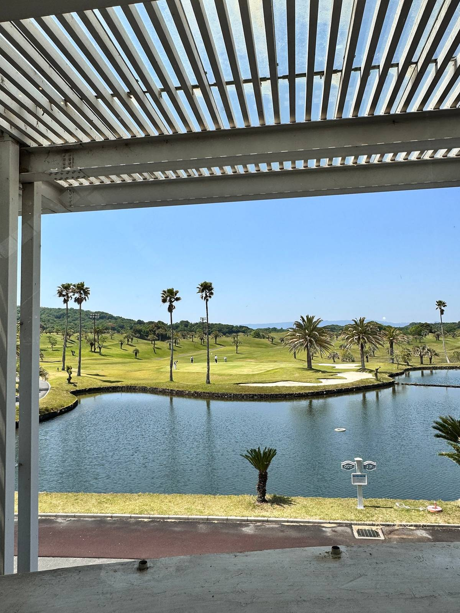
일본 연휴가 끝나고 미에현으로 향했다. 3박 4일, 4라운드. 26년까지 80곳을 목표로 하고 있으니 시간이 날 때마다 일본 지역 골프장을 샅샅이 뒤진다. 구글 리뷰, 골프장 홈페이지, 라쿠텐고라. 그렇게 추려낸 곳들만 간다. 츄부국제공항에서 차를 받았다. 85,000킬로 달린 차였다. 지금까지 빌린 렌터카 중 컨디션이 가장 좋지 않았다. 골프장까지 1시간 30분 예상이었는데 공사 구간을 만나 2시간 50분이 걸렸다. 3개 차선이 1개로 줄어드는 공사였다. 마지막 날 라운드 있는 분들은 참고하시길. 공사는 5월 말까지다. 도착해서 소바부터 시켰다. 일본 오면 제일 먼저 찾는 것이다. 테라스에서 골프장 뷰를 봤다. 야자수가 있었다. 크고 작은 것들이 다양하게 있었으면 하는데 3미터짜리 작은 것들만 있어서 단조로웠다. 리조트형 골프장이라 한국인 단체팀이 눈에 띄었다. 여행사 패키지로 오기 딱 좋은 구조다. 코스는 무난하다. 그린에서 약간의 변별력을 주고 2~3홀 정도 어렵게 구성했지만 전체적으로는 쉬운 편이다. 오후 스루플레이의 함정이 하나 있다. 라커를 이용할 수 없고 중간 그늘집은 락커키로만 결제가 된다. 현금도 카드도 안 된다. 음료를 준비해 가지 않으면 몇 홀을 목마른 채로 버텨야 한다. 공항에서 골프장까지 편의점을 한 곳도 못 만난 것도 이번 여행의 신기한 경험이었다. 에어레이션 작업일이라 무료 음료 쿠폰을 받았는데 9홀 끝나고 찾아가니 식당이 닫혀 있었다. 점심 포함 5,990엔. 맥주 한 잔에 추가 비용 포함해도 7,320엔. 한국에서 캐디피와 카트비 내고 치는 것과 비교하면 대만족이다. 첫날 날씨도 좋았다. 그것만으로 충분하다. 즐길 수 있다.
After Japan’s Golden Week crowds thinned, Mie Prefecture was next. Three nights, four rounds. The target is 80 courses by the end of 2026 — which means combing through Google reviews, course websites, and Rakuten GORA whenever time allows, then visiting only the ones that make the cut. Picked up the rental car at Chubu Centrair International Airport. 85,000 kilometers on the clock. Worst condition of any rental so far. The drive was supposed to take ninety minutes. Road construction — three lanes narrowed to one — stretched it to two hours and fifty. Anyone with a tee time on the last day should factor that in. Construction runs through the end of May. First order of business on arrival: soba. Always the first thing ordered in Japan. Sat on the terrace and took in the course view. Palm trees, but only small ones, around three meters. The variety and scale that would make a resort feel genuinely tropical wasn’t there. The course had a package-tour feel — Korean group bookings were visible, the kind of place that fills easily through travel agencies. The layout is straightforward. A few holes with genuine difficulty, some green complexity for scoring variation, but the overall impression is on the easier side. One trap specific to afternoon splay-through rounds: no locker access, and the halfway house operates exclusively on locker key payment — no cash, no card. Show up without drinks and you’re thirsty for several holes. Getting from the airport to the course without passing a single convenience store was its own novelty. Received a free drink voucher because aeration work was underway. Went to redeem it after the front nine. Restaurant was closed. Green fee with lunch: 5,990 yen. Add a beer and extras: 7,320 yen total. Compared to caddie fees and cart fees back home, that math still works. Good weather on day one. That’s enough. MIKA’s Take: Resort courses sell atmosphere before course design. Calibrate expectations accordingly and there’s plenty to enjoy.
ゴールデンウィークの混雑が落ち着いた後、三重県へ向かった。3泊4日、4ラウンド。2026年末 までに80コースを目標にしているため、時間があればGoogleレビュー、コースのホームページ、 楽天GORAを駆使して候補を絞り込み、本当に行きたいところだけを訪れるようにしている。 中部国際空港でレンタカーを受け取った。走行距離85,000キロ。これまで借りた中で最もコンディ ションの悪い車だった。ゴルフ場まで1時間30分の予定が、工事区間に差し掛かり2時間50分か かった。3車線が1車線に絞られる工事だ。最終日にラウンドを予定している方はご注意を。工事 は5月末までの予定だ。 到着してまず注文したのはそば。日本に来たら必ず最初に食べるものだ。テラスからコースの景 色を眺めた。ヤシの木があった。大小さまざまな種類が揃っていれば見栄えがするのだが、3 メートルほどの小ぶりなものだけで単調な印象だった。リゾート型コースだけあって、韓国人の団 体グループが目についた。旅行会社のパッケージツアーに組み込まれやすい構造だ。 コース自体は無難。グリーンで多少の難易度を設けており、2〜3ホールは手応えがあったが、全 体的には易しめのコースと言える。午後スループレーには注意点がある。ロッカーが使えず、途 中のハーフウェイハウスはロッカーキーでの支払いのみ対応で、現金もカードも使えない。飲み 物を持参しないと、数ホールを喉が渇いたままプレーする羽目になる。空港からゴルフ場までコ ンビニを一軒も見かけなかったのも、今回の珍しい体験だった。 エアレーション作業日だったため、無料ドリンク券を受け取った。前半9ホール終了後に引き換え に行くと、レストランが閉まっていた。 昼食込み5,990円。ビール一杯と追加費用を含めても7,320円。韓国でキャディフィとカート代を 払ってプレーすることと比べれば、十分に満足できる数字だ。初日の天気も良かった。それだけ で十分だ。 に楽しめる。
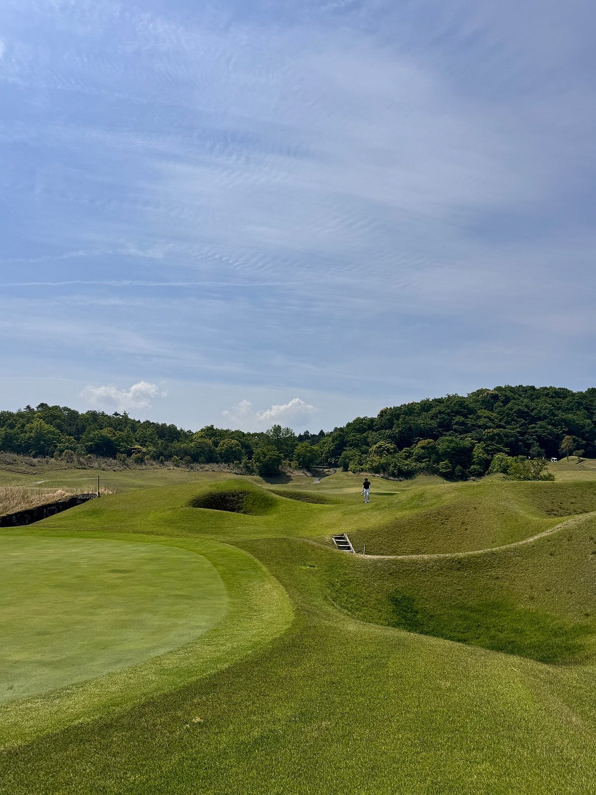
미에현 4라운드 중 한 번은 제대로 된 골프장에서 쳐야겠다고 생각했다. 고르고 골라서 세인트레이크스로 왔다. 제대로 골랐다. 들어가는 길부터 달랐다. 클럽하우스는 크고 깔끔했다. PXG 골프공까지 받았다. 시작이 좋았다. 플레이 나가면서 마주친 얼굴. 피트 다이. 인자하면서도 독할 것 같은 인상이다. 치바에서 혼쭐났던 마리아 골프클럽이 겹쳐 보였다. 주차하면서 슬쩍 봤을 때는 그다지 어려워 보이지 않았다. 불안한 예감은 틀리지 않았다. 전체 레이아웃은 옆 홀 방해 없이 시원하게 구성되어 있다. 어느 홀에서든 클럽하우스가 보인다. 이렇게 설계하기가 쉽지 않다. 탁 트인 시야 하나만으로도 전 홀의 아쉬움이 달래졌다. 첫 홀부터 그린에서 고생했다. 올렸다고 생각했는데 급격한 내리막에 한참 아래로 내려갔다. 벙커가 많고 그린 주변이 전체적으로 어렵다. 최소 두 홀에서는 큰 실수가 나올 수밖에 없도록 세팅되어 있다. 스코어가 잘 나오기 힘든 구조다. 16번 홀 파4, 270미터. 7번 아이언으로 쳤더니 100미터 남은 러프에 들어갔다. 플라이어 걱정에 피칭으로 가볍게 쳤는데 손맛이 너무 좋았다. 그린에 올랐을 거라 확신하고 퍼터를 들고 갔다. 그린이 콩알만 했다. 동반자 셋 공이 모두 벙커에 들어갔다. 혼자 퍼터 들고 멍하니 섰다. 벙커 탈출 실패, 건너편 벙커, 다시 벙커. 꼭 이렇게 만들어야 했나. 17번 홀 파3, 180미터. 앞쪽 전부 벙커, OB. 모르겠다 싶어서 그냥 쳤더니 붙었다. 오늘 하루 보상이라도 해주는 것처럼. 걸어가면서 그린 주변을 보니 여기도 지옥이었다. 홀 이동할 때 업다운이 심하다. 체력 소모가 상당하다. 사진을 보는 것만으로도 다리가 아플 것이다. 동반자들에게 말했다. 다시 오고 싶다고. 한국인이 아예 보이지 않았고 여성 골퍼도 거의 없었던 이유가 있었다. 그게 오히려 이 골프장이 좋은 이유다. 피트 다이 코스를 몇 곳 다녀보니 알겠다. 잘 친다고 자랑하는 사람들이 여기서 대부분 겸손함을 배워간다. 이런 골프장이 한국에 거의 없다는 게 내가 일본 골프에 열광하는 이유다. 세인트레이크스는 전자다.
Out of four rounds in Mie, at least one needed to be a proper course. Spent time selecting carefully and landed on St. Lakes. The choice held up. The approach road set the tone. Clubhouse: large, clean, well-maintained. A sleeve of PXG balls waiting at check-in. Strong start. Walking out to the first tee, a face on a plaque. Pete Dye. Kind eyes, dangerous designer. The memory of Maria Golf Links in Chiba came back immediately. A quick look at the course from the parking lot suggested nothing too severe. That instinct was wrong. The layout opens generously — holes spaced without interference, sightlines clear. Every hole had the clubhouse visible somewhere in the frame. That kind of design continuity isn’t easy to achieve. The open views softened the frustration when the scorecard didn’t cooperate. The first green made its intentions clear. A shot that landed on the putting surface rolled back down a steep slope, well below the hole. Bunkers throughout, complex green surrounds, and at least two holes engineered to produce big numbers almost regardless of approach quality. Scoring here requires sustained focus and a degree of luck. Hole 16, par 4, 270 meters. A 7-iron left the ball in rough with 100 meters remaining. Worried about a flyer, went with a light pitching wedge — struck it perfectly. Walked up confidently with the putter. The green was tiny. All three playing partners found bunkers. One person standing there with a putter and no ball to use it on. Failed escape, opposite bunker, bunker again. Did it really have to be built this way. Hole 17, par 3, 180 meters. Bunkers covering the entire front, OB beyond. Committed to the shot without overthinking it. The ball finished close. The round offering some compensation for the suffering. Walking up, the area around the green looked equally punishing. Lucky the ball had already stopped. The transitions between holes involve serious elevation change. The legs know about it by the back nine. The photos communicate it — viewers will feel tired just looking. Told the group at the end: want to come back. The absence of Korean golfers and the scarcity of women players made sense after playing it. That selectiveness is part of what makes the course worth returning to. A few Pete Dye courses in now. The pattern is consistent: players who talk about their game confidently tend to leave here quieter. The fact that courses like this almost don’t exist in Korea is the clearest explanation for why Japan keeps pulling. MIKA’s Take: The line between a course you want to play again and one you never want to see again is thin. St. Lakes lands firmly on the right side.
三重県4ラウンドのうち、一度はしっかりしたコースで打ちたいと思っていた。選びに選んでセント レイクスにした。正解だった。 アプローチ道路から違った。クラブハウスは大きく清潔感があった。PXGのゴルフボールまでも らった。出だしは上々だった。 プレーに出ようとして目に入った顔。ピート・ダイ。穏やかそうで、実は手厳しそうな印象だ。千葉 で痛い目に遭ったグランドPGMのマリアゴルフクラブが頭をよぎった。駐車場からコースをちらっ と見た時はそれほど難しそうには見えなかった。嫌な予感は当たった。 全体のレイアウトは隣ホールへの干渉がなく、開放的に構成されている。どのホールからもクラ ブハウスが見えた。こういった設計は簡単ではない。抜けるような視界のおかげで、前のホール の悔しさが少し和らいだ。 1番ホールのグリーンが早速本性を現した。乗ったと思ったボールが急激な下り傾斜を転がり、 はるか下まで戻っていった。バンカーが多く、グリーン周りは全体的に難易度が高い。少なくとも2 ホールは、どんなアプローチをしても大きなミスが生まれるような設計になっている。スコアをまと めるのが難しい構造だ。 16番ホール、パー4、270メートル。7番アイアムで打ったボールは100メートル残しのラフへ。フラ イヤーを警戒してピッチングで軽めに打ったところ、これが絶妙な手応え。グリーンに乗ったと確 信してパターを持って歩いていった。グリーンが豆粒ほどの大きさだった。同伴者3人のボールは すべてバンカーへ。一人だけパターを持って呆然と立っていた。バンカー脱出失敗、反対側のバ ンカー、さらにバンカー。こんな設計、必要だったのか。 17番ホール、パー3、180メートル。グリーン手前は全面バンカー、OB。もうどうにでもなれと打っ たら、ピンに寄った。今日一日の報酬をくれるかのように。歩きながらグリーン周りを見ると、ここ も地獄だった。ボールが止まっていて本当に良かった。 ホール間の移動はアップダウンが激しく、体力の消耗が相当だ。写真を見るだけで足が痛くなる はずだ。 同伴者たちに言った。また来たいと。韓国人がまったく見当たらず、女性ゴルファーもほとんどい なかった理由がわかった気がした。その敷居の高さがむしろこのコースの魅力だ。 ピート・ダイのコースをいくつか回ってわかってきた。自分のゴルフを自慢する人たちが、ここで謙 虚さを学んで帰っていく。こういうコースが韓国にほとんど存在しないことが、自分が日本のゴル フに熱狂する最大の理由だ。 迷わず前者だ。
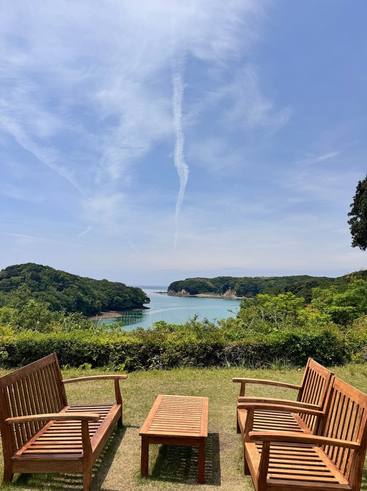
국립공원 안에 있는 골프장이다. 평일 8,800엔. 공기가 다르다. 일본 평일 그린피의 기준을 대략 잡아보면 점심 포함 6,000~8,000엔이면 싼 편, 8,000~10,000엔이 평균, 10,000~15,000엔이면 좋은 클럽이다. 싸도 컨디션 좋은 곳은 있다. 비싼데 컨디션 나쁜 곳은 거의 없다. 한국과 다르게 기본은 한다. 결국 평가 좋은 저렴한 곳을 잘 고르는 게 핵심이다. 네무 골프클럽은 평일인데도 사람이 많았다. 대부분 60대 이상이었다. 카트의 페어웨이 진입이 가능했고 코스가 편안한 느낌을 주니 그럴 만했다. 앞 팀이 인상적이었다. 80대 중후반의 할아버지는 드라이버 한 번 치고, 공 줍고, 그린 앞 어프로치, 퍼터. 그게 전부였다. 70대 초반의 할머니는 그 공을 주우면서 열심히 뛰어다녔다. 그렇게 잘 뛰는 할머니는 처음 봤다. 이런 게 골프구나 싶었다. 국립공원 안이어서 그런지 공기가 좋았다. 골퍼들이 편안하게 치고 있었다. 코스가 어렵지 않았고 분위기가 여유로웠다. 좀 멀긴 하지만 한 번은 다녀올 만한 곳이다. 않았다.
A golf course inside a national park. 8,800 yen on a weekday. The air is noticeably different. A rough guide to Japan weekday green fees: 6,000–8,000 yen with lunch is the budget range, 8,000–10,000 yen is average, 10,000–15,000 yen covers the better clubs. Cheap doesn’t mean poor condition. Expensive with poor condition is almost unheard of. Unlike Korea, a baseline standard holds across the board. The skill is in finding well-reviewed courses at the lower end. Nemu Golf Club was busy for a weekday. Most players were in their sixties or older. The course allows cart access on fairways and has a relaxed, unhurried feel — which probably explains the crowd. The group ahead was memorable. A man in his mid-to-late eighties: one driver swing, pick up the ball, chip to the green, putt. That was his round. A woman in her early seventies ran alongside collecting his ball, moving faster than most people half her age. First time seeing someone her age move like that on a course. Watching them, the thought came naturally: this is what golf is supposed to be. National park air does something to a round. Everyone around us was playing with ease. The course isn’t demanding, the atmosphere is unhurried. It’s a bit out of the way, but worth making the trip at least once. MIKA’s Take: A man in his eighties taking one driver and finishing with a putter. Nothing about that is wrong.
国立公園の中にあるゴルフ場だ。平日8,800円。空気が違う。 日本の平日グリーンフィーの目安をざっくりまとめると、昼食込みで6,000〜8,000円なら安い部 類、8,000〜10,000円が平均、10,000〜15,000円なら良いクラブと言える。安くてもコンディション が良いところはある。高くてコンディションが悪いところはほとんどない。韓国と違い、基本的な水 準は保たれている。結局、評判の良い安いコースをうまく選ぶことが肝心だ。 ネムゴルフクラブは平日にもかかわらず人が多かった。大半が60代以上だった。カートのフェア ウェイ乗り入れが可能で、コース自体が穏やかな雰囲気を持っているからだろう。 前のグループが印象的だった。80代半ばを過ぎたと思われるご主人は、ドライバーを一度打ち、 ボールを拾い、グリーン手前からアプローチして、パター。それだけだった。70代前半と思しき奥 様は、そのボールを拾いながら軽快に走り回っていた。あれほど足の速いお婆様は初めて見 た。これがゴルフだな、と自然に思った。 国立公園の中だけあって、空気が清々しかった。周りのゴルファーたちも皆、余裕を持ってプレー していた。コースは難しくなく、雰囲気はゆったりとしている。少し遠いが、一度は訪れる価値のあ る場所だ。 いるというのか。
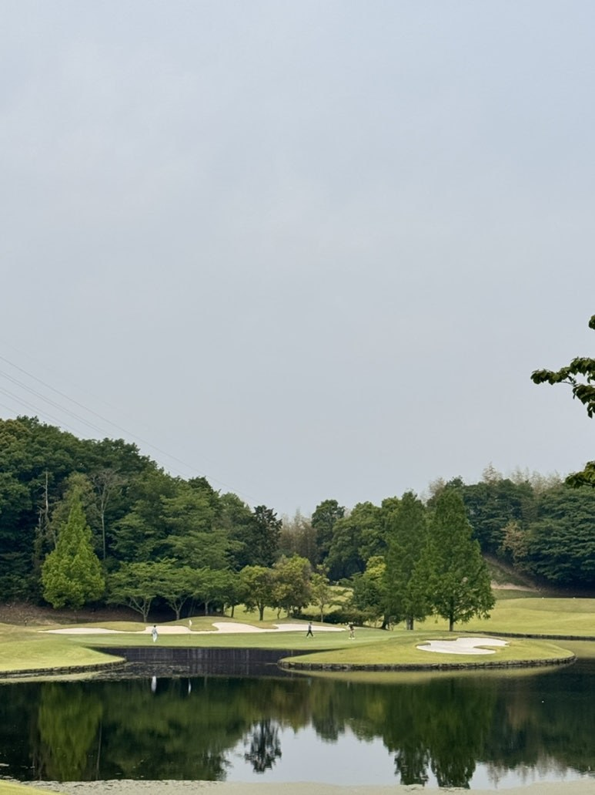
미에현 마지막 라운드. 18홀에 점심까지 포함해서 6,590엔. 우리 돈으로 6만원 남짓이다. 한국에서 카트비와 캐디피만 합쳐도 이미 그 금액을 넘긴다. 그 돈으로 여기서는 하루 종일 골프를 치고 밥을 먹는다. 많은 골퍼들이 비행기를 타고 일본으로 향하는 이유가 이것이다. 클럽하우스 입구에 해녀 조각상이 서 있다. 이세 지역의 정취다. 아카디아 계열답게 마케팅이 예리하다. 6월부터 카트 진입 시 500엔을 받는다는 공지가 붙어 있다. 한국 카트비를 생각하면 애교 수준이다. 6~7월에 다시 오라며 4,500엔 할인 쿠폰까지 쥐여준다. 골퍼의 마음을 훔치는 법을 안다. 코스는 평지에 가깝고 업다운이 거의 없다. 대부분의 홀이 연못을 끼고 있어 묘한 긴장감을 준다. 일본 평균보다 전장이 긴 편이라 티샷 거리가 나지 않으면 세컨드 샷에서 불이익을 감수해야 한다. 파3 홀에서 연못을 넘겨야 할 때, 길게 잡으면 넘어가고 딱 맞게 치려 하면 힘이 들어가 당겨진다. 수년째 고쳐지지 않는 본능적 실수다. 그래도 여기서는 즐거운 고민이다. 미에현에서 네 곳을 돌았다. 나고야 인근의 골프장들은 아직 시작도 못 했다. 일본 전역 2,200여 개. 매일 한 곳씩 가도 6년이 걸린다. 남들이 잘 모르는, 하지만 보석처럼 빛나는 골프장을 하나라도 더 찾아내는 것. 그게 지금 이 여정의 이유다.
Last round in Mie Prefecture. 18 holes, lunch included, 6,590 yen. Just over 60,000 won. Back home, cart fees and caddie fees alone exceed that number. Here, the same amount covers a full day of golf and a meal. This is why golfers board planes to Japan. A haenyeo sculpture greets you at the clubhouse entrance — a nod to the Ise region’s coastal culture. Accordia group, and the marketing reflects it. A notice announces a 500-yen cart access fee starting in June. Compared to Korean cart fees, it barely registers. A 4,500-yen discount coupon for a return visit in June or July gets handed out on the way out. They know how to keep a golfer coming back. The course runs mostly flat with minimal elevation change. Nearly every hole plays alongside a pond, which keeps the tension present throughout. Distance off the tee matters here — the course runs longer than the Japanese average, and a short drive leaves a difficult second shot. Par 3s over water bring out the familiar dilemma: club up and the ball carries long, swing for the right distance and the tension creeps in. A mistake that years of golf haven’t fixed. At least here it’s an enjoyable problem to have. Four courses in Mie. The courses around Nagoya haven’t been touched yet. Over 2,200 across Japan. One a day would take six years. The goal is to find the ones others haven’t written about yet — the quiet ones that shine when you get there. That’s what this is for. MIKA’s Take: Golf and lunch for 60,000 won. The reason Japan keeps calling is that simple.
三重県最後のラウンド。18ホールに昼食まで含めて6,590円。日本円にしてこの金額だ。 韓国ではカート代とキャディフィを合わせるだけでその金額をゆうに超える。ここでは同じ金額で 一日中ゴルフをして、食事もできる。多くのゴルファーが飛行機に乗って日本へ向かう理由がこ れだ。 クラブハウスの入口に海女の彫像が立っている。伊勢地域の風情だ。アコーディア系列らしく、 マーケティングが鋭い。6月からカート乗り入れに500円を徴収するという告知が貼り出されてい る。韓国のカート代と比べれば、愛嬌のある金額だ。6〜7月にまた来いと言わんばかりに、4,500 円の割引クーポンまで手渡してくれる。ゴルファーの心の掴み方をよくわかっている。 コースはほぼ平坦でアップダウンがほとんどない。大半のホールが池に沿って展開しており、独 特の緊張感を生み出している。日本の平均的なコースより全長が長めで、ティショットの飛距離 が出なければセカンドショットで確実に不利になる。池越えのパー3では、大きめのクラブを持て ばオーバーし、ちょうど良く打とうとすると力みで引っかける。何年ゴルフを続けても直らない本能 的なミスだ。それでもここでは、楽しい悩みになる。 三重県で4コースを回った。名古屋近郊のコースにはまだ手をつけていない。日本全国に2,200 以上。毎日1か所ずつ回っても6年かかる計算だ。他の人があまり知らない、しかし宝石のように 輝くゴルフ場を一つでも多く見つけること。それが今この旅の意味だ。
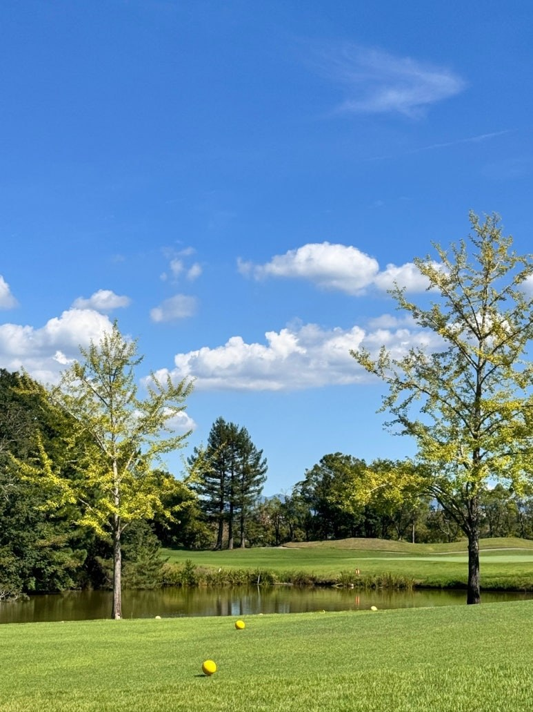
8월 말, 간사이. 굳이 더운 계절에 더운 지방을 택한 데는 이유가 있었다. 고베의 지대가 높아 도심보다 쾌적하다는 계산이었다. 25년을 함께한 후배 둘과 3년 연속 여름 해외 골프. 더위 내성은 이미 검증됐다. 여행 스타일은 늘 같다. 에어비앤비를 통째로 빌려 라운딩 후 밤새 술을 마신다. 25년치 이야기가 안주다. 동이 틀 때까지 마시는 그 맛에 매번 짐을 싼다. 첫날 골프장 선택은 항상 고민이다. 한국에서 아침 비행기를 타고 간사이에 도착하면 일본 골프장의 오전 막티는 이미 끝나 있다. 스루플레이가 가능한 오후 구장을 찾아야 한다. 도조 파인밸리가 그 조건을 충족했다. 첫날에 비싼 명문 구장을 예약하는 건 리스크다. 연착, 수속 지연, 교통 체증. 변수가 많다. 도조 파인밸리는 5,500엔. 코스 컨디션은 이 가격이 믿기지 않을 만큼 좋다. 수면 부족에 굳은 몸으로 첫날부터 산악 코스를 걷는 건 부상 초대다. 도조 파인밸리는 평탄하고 시야가 넓다. 완전 땡볕이었지만 생각보다 덥게 느껴지지 않았다. 수분 보충만 잘 해주면 된다. 여름 라운딩에서 그게 전부다. 코스가 평탄해서 체력 소모가 적었다. 숙소 근처에서 맛있는 저녁과 술로 하루를 마감했다. 첫날의 선택이 틀리지 않았다는 걸 맥주 한 캔이 증명해줬다. 해낸다.
Late August, Kansai. Choosing one of Japan’s hottest regions in peak summer was deliberate — Kobe’s elevation keeps the courses noticeably cooler than the city below. Three consecutive summers of overseas golf with the same two friends of 25 years. Heat tolerance, well established. The travel format never changes. Rent an entire Airbnb, play golf, stay up drinking. Twenty-five years of shared history makes for endless conversation. The night ends when the sun comes up. That’s what keeps the bags getting packed. First-day course selection is always the hardest call. Morning flights from Korea land in Kansai after the last regular tee times have already gone. The only option is finding a course that offers afternoon splay-through. Dojo Pine Valley was one of the few that did. Booking an expensive prestige course on day one is a gamble. Delays, immigration queues, traffic — the variables are real. Dojo Pine Valley at 5,500 yen removes that risk without sacrificing course quality. The condition doesn’t match the price in any way you’d expect. Walking a mountain course on the first day, sleep-deprived and stiff, is an invitation to injury. Dojo runs flat and open. Full sun, but less oppressive than expected. Staying hydrated is the only real discipline required in summer golf — everything else follows from that. Flat terrain meant energy to spare. Dinner near the Airbnb, drinks, a proper close to the first day. The choice held up. MIKA’s Take: Day one is for loosening up. Dojo Pine Valley does that job perfectly for 5,500 yen.
8月末、関西。あえて暑い季節に暑い地域を選んだのには理由があった。神戸は標高が高く、市 街地より涼しいという計算だ。25年来の後輩二人と、3年連続の真夏の海外ゴルフ。暑さへの耐 性はとっくに証明済みだ。 旅のスタイルはいつも同じ。Airbnbを丸ごと借りて、ラウンド後は夜通し飲む。25年分の話がつま みだ。夜明けまで飲み続ける、その味に毎回荷物を詰める。 初日のゴルフ場選びは毎回悩む。韓国からの朝便で関西に着く頃には、日本のゴルフ場の午前 の最終ティオフはすでに終わっている。スループレーができる午後の枠を探すしかない。道場パ インバレーがその条件を満たしていた。 初日から高い名門コースを予約するのはリスクだ。遅延、入国審査、渋滞。変数が多すぎる。道 場パインバレーは5,500円。コースのコンディションは、この価格では信じられないほど良い。 寝不足で体が固まった状態で初日から山岳コースを歩くのは怪我への招待状だ。道場パインバ レーは平坦で視界が広い。完全な直射日光の下だったが、思ったより暑く感じなかった。こまめな 水分補給さえ心がければ十分だ。夏のゴルフはそれに尽きる。 コースが平坦なので体力の消耗が少なかった。宿の近くで美味しい夕食と酒で一日を締めくくっ た。初日の選択は間違っていなかった。ビール一缶がそれを証明してくれた。 たす。
일본 여름 골프. 홋카이도도 30도를 넘는다. 치바, 오사카, 나고야의 여름은 습도까지 더해져 지옥이다. 그나마 숨 쉴 수 있는 선택지는 고원 골프뿐이다. 기온은 2~3도 낮지만 체감은 5도 이상 차이 난다. 가끔 부는 바람도 다르다. 고원 골프도 덥다고 하는 분들은 여름에 집에 계시는 게 맞다. 다카라즈카 고원 CC를 고른 이유는 세 가지였다. 첫째, 역사. 1964년 개장, 60년이 넘었다. 영국인 설계가 J.E. 크레인의 작품이다. “초보자에게는 즐거움을, 상급자에게는 도전 의식을 주는 상자정원 같은 코스”를 목표로 설계했다고 한다. 아웃과 인 코스의 파 구성이 완벽히 동일한 것도 전국적으로 드문 구성이다. 블라인드 홀을 극력 배제한 정통 클래식 코스다. 둘째, 컨디션. 해발 350미터. 도심보다 확실히 서늘하다. 한여름에도 페어웨이와 그린이 푸르게 유지된다는 평가가 지배적이다. 티박스에 서면 양쪽 숲 때문에 페어웨이가 좁아 보이지만 실제로는 넓다. 그린은 빠르고 언듈레이션이 심하다. 퍼팅에서 정교한 터치가 요구된다. 셋째, 접근성과 시설. 다카라즈카 IC에서 8킬로미터. 300야드 32타석 야외 연습장에 어프로치, 벙커 연습장까지 갖췄다. 레스토랑 카츠토지 고젠이 든든한 인기 메뉴다. 25년 메이트들과 4일에 1년치를 녹여서 논다. 라운딩, 이자카야, 야키니쿠, 에어비앤비 편의점 술. 이 순서가 맞다.
Summer golf in Japan. Even Hokkaido crosses 30 degrees. Chiba, Osaka, Nagoya in August — humidity included — is a different category of suffering. Highland golf is the only real alternative. Two to three degrees cooler on paper, five or more in felt experience. The breeze is different too. Anyone who finds highland golf too hot probably shouldn’t be outside in summer at all. Three reasons for choosing Takarazuka Kogen CC. First, history. Opened in 1964, over sixty years old. Designed by British architect J.E. Crane, responsible for many of Kansai’s notable courses. His stated goal: a course that gives beginners pleasure and advanced players a genuine challenge — a “box garden” in miniature. The par configuration on the Out and In courses is identical, an uncommon detail nationally. Blind holes are minimized throughout. A proper classical layout. Second, condition. Elevation: approximately 350 meters. Noticeably cooler than the city. Reviews consistently describe fairways and greens staying green and well-maintained through the hottest months. The trees lining each hole create a visual impression of narrow fairways — the actual width is more generous. Greens are fast with real undulation. Putting requires precision. Third, access and facilities. Eight kilometers from Takarazuka IC. A 300-yard, 32-bay outdoor range with approach and bunker practice areas. The restaurant’s katsu-toji gozen — a pork cutlet hot pot set — is the standout menu item. Four days to fit a year’s worth of time with people who’ve been close for twenty-five years. Golf, izakaya, yakiniku, Airbnb convenience store drinks. In that order, every time. MIKA’s Take: A sixty-year-old course staying green through midsummer. The “box garden” description wasn’t an exaggeration.
日本の夏ゴルフ。北海道でさえ30度を超える。千葉、大阪、名古屋の夏は湿度も加わって地獄 だ。それでも息ができる選択肢があるとすれば、高原ゴルフしかない。気温は2〜3度低いが、体 感では5度以上の差がある。時折吹く風も都市とは違う。高原ゴルフでも暑いという方は、夏は家 にいるのが正解だと思う。 宝塚高原CCを選んだ理由は三つあった。 一つ目は歴史だ。1964年開場、60年以上の歴史を持つ。関西地区に多くの名門コースを生み出 した英国人設計家J.E.クレインの作品だ。「初心者には楽しみを、上級者には挑戦心をくすぐる箱 庭のようなコース」を目指して設計されたという。アウトとインのパー構成が完全に同一という全 国でも珍しい設計だ。ブラインドホールを極力排除した正統派クラシックコースだ。 二つ目はコンディションだ。標高約350メートル。都心より明らかに涼しい。真夏でもフェアウェイと グリーンが青々と保たれているという評価が多い。ティボックスに立つと両サイドの森でフェアウェ イが狭く見えるが、実際にはかなり広い。グリーンは速く、アンジュレーションも強め。パッティング には精度が求められる。 三つ目はアクセスと施設だ。宝塚ICから8キロ。300ヤード32打席の屋外練習場にアプローチ・バ ンカー練習場も完備。レストランのカツとじ御膳が人気メニューだ。 25年来の仲間と4日間で1年分を詰め込んで遊ぶ。ゴルフ、居酒屋、焼肉、Airbnbでコンビニ酒。 この順番が正しい。
약간의 숙취와 뻐근함. 그래도 발걸음은 가벼웠다. 3년 연속 8월 해외 골프. 이 몸들은 이미 단련됐다. 후지오노 골프클럽. 고베 오노시. 고원 골프장이라고 부르기에는 정확하지 않다. 산을 부드럽게 깎아 만든 완만한 구릉형 코스다. 하지만 도심을 벗어나 산림 속으로 조금만 올라오면 공기가 달라진다. 카트를 타고 달리다 보면 산등성이를 넘어온 바람이 이마의 땀을 식혀준다. 오르막 내리막이 심하지 않아 체력 소모도 최소화된다. 한여름에 이 정도면 충분하다. 설계는 아놀드 파머. 동·중·서 코스 27홀이다. 억지스럽게 좁고 험한 전형적인 일본 산악 코스와 다르다. 티박스에 서면 시야가 넓고 페어웨이도 넉넉하다. 드라이버를 맘 놓고 칠 수 있다는 게 아마추어에게는 최고의 힐링이다. 대신 곳곳에 벙커와 워터 해저드가 절묘하게 배치되어 있다. 넓다고 방심하면 안 된다. 벤트그라스 그린은 빠르고 매끄럽다. 명랑 골프 속에서 은근한 승부욕이 올라온다. 18홀을 마치고 클럽하우스로 돌아오면 노천탕이 기다린다. 산바람을 맞으며 뜨거운 탕에 몸을 뉘이면 하루치 피로가 녹아내린다. 셋이 나란히 앉아 “아까 7번 홀 퍼팅이 들어갔어야 했는데” 하며 샷을 복기한다. 비싼 명문 구장이 아니어도 된다. 좋은 사람들과 좋은 코스에서 땀 흘리고, 노천탕에서 씻어내는 것. 매년 여름 무거운 골프백을 메고 비행기에 오르는 진짜 이유다. 라운드 후에는 고베 시내를 돌아다녔다. 전망대에서 고베 전경을 내려다봤다. 밤에는 에어비앤비로 돌아와 또 수다가 시작됐다. 골프의 완성이다.
Mild hangover, stiff shoulders. Bags packed anyway. Three consecutive Augusts of overseas golf — these bodies know the drill. Fujiono Golf Club, Ono City, Kobe. Calling it a highland course would be a stretch. It’s closer to a gently contoured hillside layout carved into the mountain. But leave the city and climb into the forest and the air changes immediately. A breeze comes over the ridge and cools the sweat off your forehead as the cart moves through the fairway. Minimal elevation change keeps fatigue manageable in the heat. In midsummer, that’s more than enough. Designed by Arnold Palmer. Twenty-seven holes across East, Central, and West courses. Nothing like the claustrophobically tight mountain tracks that define a certain type of Japanese course. The tee boxes open up to wide sightlines and generous fairways. Being able to swing a driver without anxiety is one of the underrated pleasures of amateur golf. That said, bunkers and water hazards are positioned with precision throughout. Generous fairways don’t mean easy holes. The bentgrass greens are fast and smooth. A casual round starts quietly competing with itself. After 18 holes, an outdoor bath is waiting. Hot water, mountain air, three people side by side replaying the missed putt on the 7th. It doesn’t require an expensive prestige course. Good people, a good course, sweat earned and washed away in an open-air bath — that’s the actual reason the golf bag goes on the plane every August. After the round, time spent in central Kobe. The observation deck looking out over the city. Back to the Airbnb later, and the conversation started again. MIKA’s Take: Arnold Palmer’s design, sweat earned on the course, rinsed away in an outdoor bath. That’s summer golf completed properly.
軽い二日酔いと体のこわばり。それでも足取りは軽かった。3年連続8月の海外ゴルフ。この身体 はもう慣れている。 藤おのゴルフクラブ、兵庫県小野市。高原ゴルフ場と呼ぶには正確ではない。山をなだらかに削 り出した丘陵型コースに近い。ただ、都心を離れて山林の中へ少し入るだけで空気が変わる。 カートで走っていると、山の稜線を越えてきた風が額の汗を冷やしてくれる。アップダウンが激しく ないため、真夏でも体力の消耗を最小限に抑えられる。夏場にこれだけ快適なら十分だ。 設計はアーノルド・パーマー。東・中・西コースの27ホール。窮屈で険しい典型的な日本の山岳 コースとは一線を画す。ティボックスに立つと視界が広く、フェアウェイも十分な広さがある。ドライ バーを気兼ねなく振れるのは、アマチュアゴルファーにとって最高の癒しだ。ただし油断は禁物。 コース随所にバンカーとウォーターハザードが絶妙に配置されている。広いからといって甘くはな い。ベントグラスのグリーンは速く滑らか。明るいゴルフの中に、いつの間にか自分との静かな勝 負が始まっている。 18ホールを終えてクラブハウスに戻ると、露天風呂が待っていた。山風を感じながら熱い湯に身 を沈めると、一日の疲れが溶けていく。3人並んで「さっきの7番のパットが入ってれば」と振り返り ながら。高い名門コースでなくてもいい。気の合う仲間と良いコースで汗をかき、露天風呂で流 す。それが毎年夏に重いゴルフバッグを抱えて飛行機に乗る、本当の理由だ。 ラウンド後は神戸市内を歩いた。展望台から神戸の街を見渡した。夜はAirbnbに戻り、また話が 始まった。 フの完成形だ。
고베 골프 여행 마지막 날. 전날 밤 로컬 선술집에서 현지인과 생맥주를 부딪쳤던 여운과 가벼운 숙취가 교차하는 아침이다. 그래도 짐을 꾸려 나서는 발걸음은 가볍다. 1974년 개장. 반세기의 역사를 가진 니시와키 컨트리클럽. 수십 년 된 소나무들이 페어웨이를 병풍처럼 감싸는 전형적인 일본식 임간 코스다. 홀과 홀 사이가 빽빽한 숲으로 분리되어 있어 우리 일행만 숲속에 남겨진 듯한 고요함이 있다. 3일 연속 라운딩의 마지막 날, 이보다 더 좋은 환경은 없었다. 코스는 평탄하다. 3일치 피로에 지친 몸에 배려가 느껴졌다. 하지만 방심은 일찍 거둬야 했다. ‘물과 녹의 조화’라는 구장의 자랑처럼, 페어웨이 곳곳에 실개천과 워터 해저드, 날카로운 벙커가 도사리고 있다. 드라이버는 맘껏 쳐도 된다. 세컨드 샷부터는 다르다. 방심하는 순간 물에 공을 헌납해야 한다. 마지막 홀까지 승부욕이 유지됐다. 클럽하우스와 락커룸, 대욕장을 최근 모던하게 리뉴얼했다. 3일치 땀을 씻어내고 뽀송뽀송한 옷으로 갈아입으니 상쾌하다. 비행기 타기 전 산뜻한 기분으로 공항을 향할 수 있다는 것. 마지막 날 코스로서 갖춰야 할 최고의 미덕이다. 3박 4일 고베. 골프 목적지로서 효고현이 가진 강점은 분명하다. 일본 최초의 골프장이 문을 연 곳답게 150개 이상의 코스가 밀집해 있다. 구릉지 지형 덕분에 여름에도 쾌적하다. 간사이 공항에서 1시간 안에 수준급 구장이 즐비하다. 라운딩 후에는 고베규, 나다의 사케, 아리마 온천이 기다린다. 매년 여름 다시 오고 싶어지는 이유가 여기에 있다.
Last day in Kobe. The morning carried traces of the previous night — a local bar, cold draft beer shared with a stranger, the harbor lights. Light hangover, lighter footsteps. The final course of the trip was waiting. Nishiwaki Country Club. Opened in 1974, fifty years of history. Towering pines lining the fairways like a folding screen — a textbook Japanese woodland course. Each hole is completely separated from the next by dense forest. A quiet that makes the group feel like they have the whole place to themselves. For the last day of three consecutive rounds, there was no better setting. The terrain is flat. After three days of accumulated fatigue, that felt deliberate. The ease didn’t last long. True to the course’s reputation for “harmony of water and green,” streams, water hazards, and sharp bunkers are positioned throughout the otherwise peaceful fairways. Drivers can be swung freely. Second shots require something else entirely. Lose concentration for a moment and the water collects the ball. The competitive instinct held all the way to the final hole. The clubhouse, locker rooms, and main bath have been recently renovated — modern and clean despite the course’s age. Three days of sweat washed away, fresh clothes on, a clear head for the drive to the airport. Leaving a golf trip feeling genuinely refreshed is an underrated quality in a final-day course. Three nights, four days in Kobe. Hyogo Prefecture as a golf destination has a clear case. Over 150 courses, the highest concentration in western Japan, rooted in the history of where Japanese golf began. Hillside terrain keeps summer rounds bearable. Top courses within an hour of Kansai Airport. Kobe beef, Nada sake, and Arima Onsen waiting after the round. Reason enough to come back every August. MIKA’s Take: Pine forest wrapping the fairways, water guarding the greens. The right course for the last day.
神戸ゴルフ旅行の最終日。前夜、地元の居酒屋で地元の人と生ビールをぶつけ合った余韻と軽 い二日酔いが交差する朝だ。それでも荷物をまとめて出る足取りは軽い。 1974年開場。半世紀の歴史を持つ西脇カントリークラブ。数十年を経た松の木がフェアウェイを 屏風のように囲む、典型的な日本式林間コースだ。ホールとホールの間が鬱蒼とした森で完全 に仕切られていて、まるで我々だけが森の中に残されたような静けさがある。3日連続ラウンドの 最終日、これ以上の環境はなかった。 コースは平坦だ。3日分の疲れを抱えた身体への配慮が感じられた。しかし油断はすぐに禁物だ とわかった。「水と緑の調和」というコースの売り文句通り、穏やかに見えるフェアウェイの随所に 小川とウォーターハザード、鋭いバンカーが潜んでいる。ドライバーは思い切って振っていい。セ カンドショットからは別の話だ。気を抜いた瞬間、池にボールを献上することになる。最終ホール まで闘志が続いた。 クラブハウス、ロッカールーム、大浴場は最近モダンにリノベーションされている。3日分の汗を流 し、さっぱりとした服に着替えると気持ちがいい。飛行機に乗る前に爽快な気分で空港へ向かえ ること。最終日のコースとして備えるべき最高の美徳だ。 3泊4日の神戸。ゴルフ目的地としての兵庫県の強みは明確だ。日本最初のゴルフ場が生まれた 地らしく、150以上のコースが集中している。丘陵地形のおかげで夏でも快適だ。関西空港から1 時間以内に水準以上のコースが揃っている。ラウンド後には神戸牛、灘の酒、有馬温泉が待って いる。毎年夏に戻りたくなる理由がここにある。
시즈오카 5라운드 중 개인적으로 가장 마음에 들었던 곳이다. 고라카단. 일본 최고의 하이엔드 료칸 브랜드. 그 이름을 단 골프장이다. 도착했을 때 클럽하우스가 공사 중이었다. 덕분에 이 수준의 골프장을 매우 저렴하게 이용할 수 있었다. 후지산은 보이지 않았다. 아쉬웠다. 대신 코스 전체가 선명하게 들어왔다. 코스 관리가 매우 훌륭했다. 티샷은 벤트그라스의 푹신한 잔디를 밟으며 쳤다. 페어웨이는 칼같이 정리되어 있었다. 퍼스트컷과 세컨컷 러프의 차별화도 뚜렷했다. 그린 주변이 특히 인상적이었다. 훌륭한 관리 덕분에 맨땅에서 어프로치를 할 일이 없었다. 직원들은 손님이 티샷할 때 처음부터 끝까지 방해가 되지 않으려 대기했다. 클럽하우스 공사 중임에도 카트로 주차장까지 클럽을 직접 옮겨줬다. 단순히 공을 치는 라운딩이 아니었다. 18홀 내내 코스가 주는 감동과 완벽한 서비스에 매료됐다. 명문이 무엇인지를 제대로 보여준 하루였다. 후지산을 보지 못한 것이 유일한 아쉬움이다. 그래서 다시 와야 하는 이유가 생겼다.
Of five rounds in Shizuoka, this was the one that stayed with me longest. Korakuen. One of Japan’s most acclaimed high-end ryokan brands. This is their golf course. The clubhouse was under construction on arrival. That meant playing one of the finest courses in the region at a fraction of what it would normally cost. Fuji was hidden. Disappointing, but it meant the course itself took full attention. What the course showed was exceptional. Bentgrass tees, soft underfoot. Fairways trimmed with precision. First cut and second cut rough clearly differentiated — the kind of detail that signals serious course management. The areas around the greens stood out most. Not a patch of bare ground to be found. Approaching from anywhere around the green, the turf held. Staff waited at a distance during every tee shot, careful not to interrupt. Despite the clubhouse construction, bags were transported directly to the parking area by cart. The disruption was invisible in the experience. This wasn’t just a round of golf. Eighteen holes of course quality and service that held attention completely from start to finish. A clear, unambiguous demonstration of what a prestige course actually means. The only regret is Fuji staying behind the clouds. Which means there’s a reason to come back. MIKA’s Take: It was enough without Fuji. What it looks like with the mountain is a question for the next visit.
静岡での5ラウンドの中で、個人的に最も心に残ったコースだ。 星野リゾート系列の高級旅館ブランド「強羅花壇」。その名を冠したゴルフ場だ。到着時、クラブハ ウスは工事中だった。おかげで、このレベルのゴルフ場を非常に手頃な価格で利用することがで きた。 富士山は見えなかった。残念だった。その代わり、コース全体が鮮明に目に入ってきた。コース 管理が非常に素晴らしかった。 ティショットはベントグラスの柔らかな芝を踏みしめながら打った。フェアウェイは刃物のように整 えられていた。ファーストカットとセカンドカットのラフの差別化も明確だった。特にグリーン周りが 印象的だった。丁寧な管理のおかげで、ベアグラウンドからアプローチする場面は一度もなかっ た。 スタッフはゲストがティショットする間、最初から最後まで邪魔にならないよう距離を置いて待機し ていた。クラブハウスが工事中にもかかわらず、カートで駐車場まで直接クラブを運んでくれた。 単にボールを打つラウンドではなかった。18ホールを通じて、コースの与える感動と完璧なサー ビスに魅了された。名門とは何かを、正面から見せてくれた一日だった。 富士山が見えなかったことが唯一の心残りだ。だからこそ、また来る理由ができた。
후지산 인생샷 하나 보고 예약했다. 결론은 짙은 안개와 비. 후지산의 ‘후’ 자도 못 봤다. 그래도 아깝지 않았다. 체크인하면서 웰컴 티를 받았다. 클럽하우스를 둘러보다 모자 디자인이 예뻐서 하나 샀다. 비가 많이 왔던 탓인지 건조룸이 상당히 컸다. 샤워 끝내고 갔더니 우비, 모자, 장갑이 말끔히 말라 있었다. 신발까지 같이 말려줬으면 완벽했을 텐데. 코스 상태는 아웃과 인이 달랐다. 아웃코스는 야생동물 피해 홀을 제외하면 페어웨이 상태가 양호했다. 인코스는 관리가 아쉬웠다. 후기들이 생각보다 박하다는 말을 들었는데, 이유가 있었다. 점심 돈가스는 기가 막히게 맛있었다. 다만 약간 덜 익힌 스타일이라 웰던으로 미리 요청하는 게 낫다. 22,300엔. 한국인에게는 비싸다. 재작년엔 반값이었다고 한다. 앞으로 더 오를 것 같다. 그래도 기회가 되면 다시 올 만한 곳이다. 다음엔 후지산을 봐야 한다. 그게 유일한 숙제다. 있다.
Booked for one reason: a photograph of Fuji seen from the fairway. The day delivered thick fog and rain. Not a trace of the mountain. Still no regrets. A welcome tee on check-in. A cap caught the eye in the pro shop — clean design, bought it. The drying room was large, clearly built for days like this. Came back after the shower to find the rain jacket, gloves, and cap dried and ready. Shoes in the same room would have completed the picture. Course conditions split along the way out and back. The Out course held up well aside from a hole affected by wildlife damage. The In course fell short on maintenance. Reviews had mentioned mixed impressions — seeing the course explains it. Lunch: pork cutlet, cooked beautifully. Served slightly pink inside, which works for some. Those who prefer fully cooked should say so when ordering. 22,300 yen. On the expensive side for a Korean visitor. Apparently half that price two years ago. Likely heading higher. Worth returning to when the chance comes — but the next visit needs Fuji in the frame. That’s the unfinished business. MIKA’s Take: Fuji stayed hidden. Which means there’s one more visit required. Some courses leave homework.
富士山の写真一枚を見て予約した。当日は濃霧と雨。富士山の「ふ」の字も見えなかった。 それでも後悔はなかった。 チェックイン時にウェルカムティーをもらった。クラブハウスを見回っていたら帽子のデザインが気 に入って一つ購入した。雨が多かったせいか、乾燥室がかなり広かった。シャワーを終えて戻る と、レインウェア、帽子、グローブがきれいに乾いていた。靴も一緒に乾かせたら完璧だったと思 う。 コースのコンディションはアウトとインで差があった。アウトコースは野生動物の被害を受けた ホールを除けばフェアウェイの状態は良好だった。インコースは管理面で物足りなさが残った。事 前に評判が芳しくないという話を聞いていたが、理由がわかった。 昼食のとんかつは絶品だった。ただし若干ピンク色が残る仕上がりなので、完全に火を通したい 方はウェルダンで注文することをお勧めする。 22,300円。韓国人には高い。一昨年は半額だったという。今後さらに上がりそうだ。それでも機会 があればまた来る価値はある。次回は必ず富士山を見なければならない。それが唯一の宿題 だ。 フ場もある。
이번 여행에서 유일하게 후지산 남쪽으로 내려갔다. 주말인데도 8,500엔. 찾고 찾아서 골랐다. 평일은 5,200엔이다. 큰 기대는 접었다. 하지만 구글 리뷰에 골프장을 좀 다녀본 분들이 괜찮다고 했으니 마음 한편으로는 기대를 했다. 진짜 오래된 일본 시골 골프장이다. 낡은 건 맞다. 그런데 기본에 충실하다. 프런트 직원은 한 명이다. 골프샵은 제법 큰데 직원이 없다. 일본 골프장이 그렇다. 일할 사람이 점점 줄어든다. 한국 지방 골프장의 5년 후 모습이다. 그린 주변은 생각보다 세세하게 관리되어 있었다. 우리가 오후 막팀이었는지 내일 오전에 바꿀 홀컵을 교체하는 모습이 보였다. 대충 파는 게 아니었다. 발로 좌우를 제대로 재고, 자로 다시 한번 확인하고 홀컵을 바꿨다. 9홀 이후 대기가 생기자 덜 막히는 홀로 안내해줬다. 약간의 비가 왔는데도 4시간 만에 마쳤다. 전장은 짧은 편이지만 업다운이 심하다. 스코어는 평상시와 다를 게 없었다. 앞 팀 일본인 세 명이 18홀 내내 ‘fore’를 20번은 외쳤다. 골프장을 들었다 놓을 정도의 소리였다. 덕분에 내 스코어를 웃으면서 넘길 수 있었다. 누마즈 시내에서 35~40분. 숙소를 여기에 잡는다면 한 번은 꼭 가볼 만하다. 골프장 가는 길 35분 내내 좌우로 상점이 이어진다. 예전엔 꽤 번성했을 거리다. 지금은 조용하다. 인생의 후반기에 들어선 거리처럼 보였다. 잘 마무리 짓자.
The only day on this trip that went south of Fuji rather than north. Weekend, 8,500 yen. Found after considerable searching. Weekday rate is 5,200. Expectations were managed downward. But Google reviews from people who’d played a few courses mentioned it favorably, so a thread of hope remained. An old Japanese countryside course — worn in the right ways, honest in all the right ways. One staff member at the front desk. A decently sized pro shop with no one in it. This is what Japanese golf looks like now. The workforce shrinks every year. It’s a preview of what regional Korean courses will look like in five years. The greens were maintained with more care than expected. Being the last group of the afternoon, there was a chance to watch the cup being changed for the next morning. Not a casual job — both sides measured on foot, then checked again with a ruler before the new cup went in. After the turn, a marshal redirected us to a less congested nine without being asked. Finished in four hours despite some light rain. Short course overall but with real elevation change — the scorecard didn’t reflect the terrain’s forgiveness. The group ahead played 18 holes with a combined ‘fore’ count somewhere around twenty. Loudly. It helped keep the mood light regardless of the numbers. Thirty-five to forty minutes from Numazu city center. Worth going if the accommodation is nearby. The road from town runs past shops for the entire drive — a street that must have been busy once, quieter now. A road in its later years. Best to finish well. MIKA’s Take: Worn but honest. In golf courses as in people, that combination is harder to find than it looks.
今回の旅で唯一、富士山の南側へ下りた。週末なのに8,500円。探しに探して見つけた。平日は 5,200円だ。 大きな期待はしないようにした。しかしGoogleレビューで何か所か回ったことのある方が「なかな か良い選択」と書いていたので、心のどこかでは期待していた。本当に古い日本の田舎のゴルフ 場だ。古びているのは確かだ。しかし基本に忠実だ。 フロントのスタッフは一人。ゴルフショップはそれなりの広さだが、誰もいない。日本のゴルフ場は そういうものだ。働く人がどんどん減っている。韓国の地方ゴルフ場の5年後の姿だ。 グリーン周りは思いのほか丁寧に管理されていた。我々が午後の最終組だったためか、翌朝に 向けてカップを交換する作業が見えた。雑にやるわけではなかった。足で左右をきちんと測り、さ らに定規で確認してからカップを入れ替えていた。後半のターンで待ちが発生すると、混んでいな い9番ホール側へ案内してくれた。小雨が降っていたにもかかわらず、4時間でラウンドを終えた。 全長は短めだが、アップダウンが激しい。スコアは普段と変わらなかった。前のグループの3人が 18ホールを通じて「フォア」を20回は叫んだ。コース中に響き渡るほどの声量だった。おかげで自 分のスコアも笑って流せた。 沼津市内から35〜40分。ここに宿を取るなら、一度は行く価値がある。ゴルフ場への道中、35分 間ずっと左右に商店が続く。かつてはかなり賑わっていただろう通りだ。今は静かだ。人生の後 半に差し掛かった通りのように見えた。いい終わり方をしてほしい。
후지산을 보러 온 지 3일째. 서서히 모습을 드러내기 시작했다. 구름 낀 후지산이었지만 산의 기운을 제대로 받는 느낌이었다. 아사기리잼보리, 올해로 50년이 됐다. 50년 된 골프장. 한국에도 그 연배의 골프장들이 있다. 남서울, 88, 뉴서울. 이 골프장들의 공통점은 포대그린이고, 코스는 여러모로 올드하다. 클럽하우스를 아무리 리모델링해봐야 코스를 고치지 않는 한 그 밥에 그 나물이다. 심지어 드라이버가 페널티 구역으로 가면 그린 가까이에서 다음 볼을 치게 해주는 곳도 있다. 빨리 끝내고 싶은 골프장 측의 운영 방침이다. 아사기리잼보리는 달랐다. 50년의 세월을 품고 있으면서도 코스와 관리 모두 정성을 들여 최상의 상태를 유지하고 있었다. 코스의 단조로움을 거리와 러프 길이로 보완해서 버디 찬스를 쉽게 주지 않는다. 후지클래식이 야생동물 피해로 페어웨이가 망가진 것과 달리 이 코스는 그런 문제가 없었다. 스타트하우스 앞에서 퍼터, 어프로치, 벙커 연습을 충분히 하고 18홀을 차근차근 돌았다. 후지산 배경의 골프장을 선택한다면, 동반자들과 편하게 치고 싶다면 아사기리, 내기 골프라면 후지클래식. 그게 내 결론이다. 어느 쪽이든 한번은 반드시 와봐야 하는 곳이다.
Three days of waiting for Fuji. On the third morning, it appeared — partially veiled in cloud, but unmistakably there. Standing on the course with that mountain in the background, something about the atmosphere felt different. Asagiri Jambori turns fifty this year. There are Korean courses of similar vintage — Namseoull, 88, New Seoul. What they share: elevated greens, courses that feel their age in ways that renovation can’t fix. Some have even adopted a policy of dropping near the green when a tee shot finds a penalty area. A management philosophy that prioritizes pace over integrity. Asagiri Jambori took a different path. Half a century old, and playing like it was built to last. The course compensates for a naturally understated layout through distance and rough length — birdie chances don’t come easily. Where Fuji Classic suffered from wildlife damage across fairways and rough, this course showed none of it. Spent time at the practice area before the round — putting, chipping, bunkers. Then 18 holes at a measured pace. If choosing between the two Fuji-area courses: Asagiri for a relaxed round with good company, Fuji Classic for a competitive match. Both worth the trip. MIKA’s Take: Fifty years old and playing at its best. Age is a number. This course proves it.
富士山を見に来て3日目。その朝、山がゆっくりと姿を現し始めた。雲に包まれた富士山だった が、山の気配をしっかりと感じる瞬間だった。 朝霧ジャンボリー、今年で50周年を迎えた。50年のゴルフ場。韓国にも同じ年代のコースがあ る。南ソウル、88、ニューソウル。これらの共通点は砲台グリーンで、コースは様々な面で時代を 感じさせる。クラブハウスをいくらリノベーションしても、コースを変えない限り本質は変わらない。 ティショットがペナルティエリアに入ると、グリーン近くから次のボールを打てるようにしている場所 もある。早く終わらせたいというゴルフ場側の運営方針だ。 朝霧ジャンボリーは違った。50年の歳月を抱えながら、コースも管理も丁寧に手をかけ、最高の 状態を保っていた。コースの単調さを距離とラフの長さで補い、バーディチャンスを簡単には与え ない。富士クラシックが野生動物の被害でフェアウェイが荒れていたのとは対照的に、このコース にはそういった問題はなかった。 スタートハウス前でパター、アプローチ、バンカーの練習を十分にこなし、18ホールをゆっくりと 回った。富士山を背景にしたゴルフ場を選ぶなら、仲間とゆったり楽しみたいなら朝霧、真剣勝負 なら富士クラシック。それが私の結論だ。 どちらにせよ、一度は必ず訪れるべき場所だ。 フ場が証明している。
시즈오카 마지막 날. 공항으로 가는 길목에 있는 골프장을 골랐다. 누마즈 시내에서 시즈오카 공항 방향 중간에 위치한 후지노미야GC. 마지막 날의 동선을 고려한 선택이었다. 후지산 뷰가 가능한 곳 중 하나다. 새벽에 도착하니 후지산 전경이 선명하게 보였다. 시간이 지나면서 점점 흐릿해졌다. 쉽게 자태를 내어주지 않는다. 마치 인생의 면면을 보는 것 같았다. 코스 리뷰에 짧고 좁다는 말이 있었다. 실제로 가보니 달랐다. 파4 거리 구성은 오히려 다른 구장보다 긴 편이다. 티샷 욕심을 내면 어김없이 안 좋은 곳으로 간다. 산악형과 평지 코스가 적절히 섞여 있다. 후기도 중요하지만 사전에 홀 구성을 직접 확인하는 게 낫다. 페어웨이, 러프, 홀 난이도는 전체적으로 무난했다. 그린은 느린 편이었다. 7,900엔. 후지산 뷰에 이 가격이면 시즈오카 가성비 구장으로 손꼽힐 만하다. 한국으로 돌아가는 마지막 날, 좋은 선택지였다.
Last day in Shizuoka. The course was chosen for its position on the route from Numazu to Shizuoka Airport — practical logic for a travel day. Fujinomiya GC offers Fuji views from several points on the course. Arriving early, the mountain was fully visible. As the morning progressed, it gradually faded back behind haze. Fuji doesn’t give itself away easily. There’s something in that worth thinking about. Pre-trip reviews described the course as short and tight. The reality was different. Par 4 distances run on the longer side compared to nearby courses. Aggressive tee shots get punished consistently. The layout mixes mountain and flat terrain in reasonable balance. Reviews are useful, but checking the actual hole configurations beforehand is worth the extra step. Fairways, rough, and hole difficulty were all in the manageable range. Greens ran on the slower side. At 7,900 yen with Fuji views available, this sits comfortably among the value options in the Shizuoka area. A good final-day choice. MIKA’s Take: Fuji shows itself in the morning. An early arrival is the only way to earn that view.
静岡最終日。沼津市内から静岡空港へ向かう途中に位置するコースを選んだ。移動の動線を考 慮した選択だった。 富士宮GCはコース内のいくつかの地点から富士山を望める場所だ。早朝に到着すると、富士山 の全景がくっきりと見えた。時間が経つにつれ、徐々に霞んでいった。簡単には姿を見せてくれな い。人生の一面を見るようだと感じた。 事前のレビューにはコースが短く狭いという声があった。実際に来てみると違った。パー4の距離 構成は近隣のコースより長い部類に入る。ティショットで欲を出すと決まって悪い場所へ行く。山 岳型と平地コースが程よく組み合わさっている。レビューも大切だが、事前にホール構成を自分 で確認するのをお勧めする。 フェアウェイ、ラフ、ホールの難易度はいずれも無難な水準だった。グリーンはやや遅めだった。 7,900円。富士山ビューがあってこの価格なら、静岡のコスパ上位コースとして十分に名前が挙 がる。 韓国へ帰る最終日の選択として、悪くなかった。
이바라키현. 그랜드 PGM 2박 3일. 비행기가 하루 한 편이라 라운딩은 이틀뿐이다. 깔끔하게 두 곳, 제대로 치고 온다는 계획이었다. 새벽 7시 7분 티오프. 세겹을 껴입고 나왔다. 골프장 입구를 들어서는 순간, 스페인이다. 세고비아라는 이름이 허세가 아니었다. 코스 운영은 8분 간격. 국내 7분보다 여유롭다. 화이트티 거리는 일본 평균보다 5% 정도 길다. 대부분의 그린 앞에 벙커가 있어서 짧으면 그냥 들어간다. 모래가 약간 무거운 편이라 벙커에서 힘을 더 써야 한다. 파3 홀들이 전반적으로 재미있고, 아일랜드 그린 홀에서는 전략이 먼저다. 맞바람이 자주 부니 한 클럽 넉넉하게 잡는 게 낫다. 그린 스피드는 빠르지 않다. 하지만 착시가 있다. 반드시 반대편에서 라이를 한 번 더 읽어야 한다. 페어웨이는 넓은 편이지만 일부 홀은 우측으로 밀린다. 벙커 수는 사우스스프링스 수준은 아니더라도 상당하다. 티샷과 세컨샷 모두 정확성이 요구된다. 하이라이트는 데스몬드 뮤어헤드가 설계한 ‘가스파초 아일랜드 그린’. 사진으로는 다 못 담았다. 환상적이라는 말밖에 안 나온다. 첫 팀으로 둘이 스타트해서 1시간 38분 만에 마감. 9홀 추가를 물어봤더니 풀부킹에 오후 잔디작업까지 겹쳐서 정중히 거절당했다. 식당은 지금까지 간 곳 중 가장 친절했다. 밥 먹는 내내 인사를 몇 번이나 받았는지 모른다. 맛도 좋았다. 탈의실은 한국 목욕탕 구조 그대로다. 밖에서 탈의하고 들어간다. 처음 온 일본인들도 어리둥절해한다. 라커에 귀중품 보관도 된다. 수도권 남부 거주자라면 청주-이바라키 노선 저가 항공 노려볼 만하다. 관광할 건 없다. 그게 오히려 장점이다. 골프에만 집중하고 싶은 사람에게는 최적이다. 잠깐 헷갈린다.
Ibaraki Prefecture. Grand PGM, two nights three days. One flight a day means only two rounds. The plan: two good courses, no filler. 7:07 AM tee time. Three layers on. Stepping through the entrance, it’s unmistakably Spain — the name Segovia earns its keep from the moment you arrive. Tee intervals run at eight minutes, a notch more relaxed than the standard seven back home. White tee distances run about five percent longer than the Japanese average. Most greens have bunkers up front — miss short and you’re in. The sand runs slightly heavy, so expect to put in extra effort to escape. Par 3s are consistently entertaining, and the island green holes demand a plan before a swing. Headwinds are frequent; taking one extra club is rarely the wrong call. Green speeds aren’t particularly fast, but the breaks play with your eyes. Always read from the opposite side. Fairways are generous on most holes, though a few push right. Bunker count is serious — not quite South Springs territory, but enough that both tee shots and approaches need precision. The highlight is Desmond Muirhead’s Gazpacho Island Green. Photos don’t do it justice. Fantastic is the only word that fits. Two players, first group out, finished in an hour and thirty-eight minutes. Asked about adding nine more — full booking, plus afternoon turf maintenance. Politely turned down. The restaurant, however, was the friendliest of any course visited so far. Lost count of how many greetings came during the meal. The food matched. The locker room is laid out exactly like a Korean public bathhouse — undress outside, then walk in. First-time Japanese visitors ask where to change. Valuables storage in the locker is a nice touch. For anyone based in southern greater Seoul, the Cheongju–Ibaraki route is worth watching for deals. There’s nothing to sightsee. That’s the point. For pure golf immersion, this is as good as it gets. MIKA’s Take: Standing in front of the Gazpacho Island Green, club in hand, you briefly forget whether this is golf or art.
茨城県。グランドPGM、2泊3日。飛行機が1日1便しかないため、ラウンドは2日間のみ。良い コースを2つ、きっちり回ってくるという計画だった。 ティオフは朝7時7分。三枚重ね着で出発した。クラブハウスの入口をくぐった瞬間、スペインだ。 セゴビアという名前は伊達ではなかった。 コース運営は8分間隔。国内の7分より少しゆとりがある。ホワイトティの距離は日本の平均より 約5%長め。ほとんどのグリーン手前にバンカーがあり、短ければそのまま入る。砂がやや重め なので、脱出には余分な力が必要だ。パー3ホールは全体的に面白く、アイランドグリーンのホー ルでは戦略が先に来る。向かい風が多いので、一番手大きめに持つのが無難だ。 グリーンスピードは速くはないが、錯視が起きる。必ず反対側からラインを読み直す必要がある。 フェアウェイは広めだが、一部のホールは右に流れる。バンカーの数はサウススプリングスほど ではないが相当多く、ティショットとセカンドショット両方に精度が求められる。 ハイライトは、デズモンド・ミュアヘッド設計の「ガスパチョ・アイランドグリーン」。写真では伝えき れない。圧巻という言葉しか出てこない。 2人で先頭スタート、1時間38分でラウンド終了。9ホール追加を尋ねたところ、満員予約に加えて 午後は芝作業とのことで丁重に断られた。レストランはこれまで訪れた中で最も親切だった。食 事中に何度挨拶を受けたか数えきれない。味も申し分なかった。 ロッカールームは韓国の銭湯と同じ構造だ。外で脱衣してから中へ入る。初めて来た日本人も戸 惑っている様子だった。ロッカーに貴重品を預けられるのも良かった。 首都圏南部在住の方には、清州―茨城路線の格安便を狙う価値がある。観光するものは何もな い。それがむしろ強みだ。ゴルフに集中したい人には最高の環境だ。 芸術なのか、一瞬わからなくなる。
첫날 7시 7분, 둘째날 7시 52분. 이틀 연속 겨울 이른 아침 티오프. 결론은 간단하다. 일본 겨울골프도 9시 티타임이 가장 좋다. 골프장 도착하니 담요를 손에 두른 직원들이 맞아준다. 짐을 조심스럽게 내리겠다는 일종의 쇼잉이다. 프론트에서는 핫팩까지 챙겨준다. 성의는 충분했다. 단, 핫팩은 한국 것이 최고라는 사실도 재확인했다. 서리가 아직 녹지 않은 페어웨이. 까마귀가 먼저 나와 있다. 가까이 가야 겨우 비켜난다. 치요다CC는 27홀이다. 동·중·서 코스 중 서코스와 중코스를 돌았다. 전체적으로 솔직히 말하면 좀 지루한 코스다. 어제의 세고비아GC가 인위적으로 극적인 코스를 만들었다면, 치요다는 자연스러운 구릉지 그대로다. 서코스 기준 8개 홀에서 티샷 구역에 서면 그린이 보인다. 전략적 고민보다는 정직한 샷이 요구되는 레이아웃이다. 그린은 투그린 운영. A그린이 B그린보다 상당히 작다. 그린을 놓치면 어프로치로 붙이기 쉽지 않다. 약간 포대 형태라 시즌에는 짧게 치고 오르막 퍼트를 노리는 게 낫다. 7번홀 오르기 전, 직원이 따뜻한 물수건과 레몬차를 건네준다. 얼마나 반가웠던지 파3에서 바로 붙여서 버디. 계속 따라와 줬으면 했다. 점심은 카레에 맥주 한 잔. 기린 생맥주가 역시 좋다. 오후가 되자 햇살이 나오고 긴팔 하나로 편해졌다. 겨울골프는 이 시간이다. 2박 3일 총비용 60만원 안팎. 비행기, 숙소, 렌트, 골프 두 라운드. 이자카야에서 1인당 20만원 넘게 쓴 건 별도로 친다. 가고시마에서 유기농 닭을 키우는 부모님, 이바라키에서 장사하는 아들. 반만 익혀 먹는 닭이었는데 엄청 맛있었다. 이바라키에 골프장이 114개라고 한다. 일주일씩 잡아놓고 오면 딱이다. 있다.
First day, 7:07 AM. Second day, 7:52 AM. Two consecutive early winter tee times. The conclusion is straightforward: 9 AM is the right call for winter golf in Japan, same as anywhere. Arriving at the course, staff greet you with blankets wrapped around their hands — not for warmth, but to handle luggage with care. A piece of deliberate hospitality. At the front desk, hand warmers are handed out as a gift. The gesture lands well. The execution reminds you that Korean hand warmers remain unmatched. Frost still on the fairways. A crow has already claimed the first hole. It moves only when you get close. Chiyoda CC runs 27 holes — East, Central, and West courses. We played West and Central. Honest assessment: it’s a bit on the quiet side. Where Segovia yesterday was theatrical and engineered, Chiyoda lets the natural hillside do the work. On the West course, you can see the green from the tee box on eight holes. The layout rewards clean, straightforward ball-striking over creative shot-making. Dual greens in operation. The A green runs considerably smaller than B. Missing the green leaves a tricky approach — a slightly raised, plateau-style surface means short and uphill is the better play during peak season. Before the 7th hole climb, a staff member arrives with a warm towel and lemon tea. The timing was perfect. Birdied the par 3 immediately after. Wished she’d followed us for the rest of the round. Lunch: curry and a draft beer. Kirin on tap, as it should be. By afternoon, the sun arrived and one layer came off. This is when winter golf makes sense. Total trip cost: just under 600,000 won for two nights, three days — flights, accommodation, rental car, two rounds with meals included. The izakaya tab, at over 200,000 won per person across two evenings, is accounted for separately. The place was run by a son whose parents raise organic chickens in Kagoshima. Served half-cooked. Tasted exceptional. Ibaraki has 114 golf courses. A week here, properly planned, would not be wasted. MIKA’s Take: Not every course needs to be dramatic. Sometimes a cup of lemon tea and a birdie is enough.
1日目7時7分、2日目7時52分。冬の早朝ティオフが2日続いた。結論はシンプルだ。日本の冬ゴ ルフも、9時スタートが一番いい。 コースに到着すると、毛布を手に巻いたスタッフが出迎えてくれた。荷物を丁寧に扱うための演出 だ。フロントでは使い捨てカイロまでプレゼントされた。心遣いは十分伝わった。ただし、カイロは 韓国製が最高だという事実も改めて確認した。 フェアウェイにはまだ霜が残っている。カラスが先に出てきていた。近づいてやっと飛び去る。 千代田CCは27ホール。東・中・西コースのうち、西コースと中コースをプレーした。正直に言え ば、少し単調なコースだ。昨日のセゴビアGCが人工的にドラマチックなコースを作り上げていたと すれば、千代田は自然の丘陵地をそのまま活かしている。西コースでは8つのホールで、ティグ ラウンドからグリーンが見渡せる。戦略的な創意工夫よりも、正確なショットが求められるレイア ウトだ。 ツーグリーン制で、AグリーンはBグリーンよりかなり小さい。グリーンを外すとアプローチで寄せ るのが難しい。やや砲台形状のため、シーズン中は短めに打って上りのパットを残す方が有利だ ろう。 7番ホールに上がる前、スタッフが温かいおしぼりとレモンティーを持ってきてくれた。それがどれ ほど嬉しかったか。パー3でそのままピンに붙けてバーディ。ずっと一緒についてきてほしかった。 昼食はカレーに生ビール一杯。キリンの生が、やはりいい。午後になると日差しが出てきて、一 枚脱いで身軽になった。冬ゴルフはこの時間帯に限る。 2泊3日の総費用は60万ウォン弱。飛行機、宿泊、レンタカー、食事込みのラウンド2回分。居酒 屋での飲み代が1人あたり20万ウォン超になったのは別勘定だ。鹿児島で有機農法の鶏を育て る両親を持つ息子が、茨城で店を構えていた。半生で提供される鶏肉。驚くほど美味しかった。 茨城県には114のゴルフ場があるという。1週間かけてじっくり回る価値は十分ある。 る。
이바라키의 여운이 채 가시기 전에 치바로 향했다. 골프장 천국. 뿌리칠 수가 없었다. 나리타히가시CC는 공항에서 20분. 아카디아 계열이다. 스루플레이라 출발 전 식사를 먼저 했다. 신선하고 맛이 괜찮아서 5일째 되는 날 같은 메뉴를 또 시켰다. 클럽하우스에서 보면 따뜻해 보인다. 오후가 되면 바람이 달라진다. 점점 거세진다. 사진이 아래로 내려갈수록 일몰에 가까워지고, 그만큼 추워 보일 것이다. 12시 52분 티오프라 일몰 전에 마칠 수 있을지 걱정했지만 아슬아슬하게 맞췄다. 코스는 무난하다. 아카디아 계열 특성상 거리 세팅에서 여성 우대가 느껴진다. 부부 내기하실 분들은 참고하시길. 겨울 일본 골프, 1월과 2월을 경험하고 나서 결론이 생겼다. 9시 30분 티오프가 정답이다. 1월에 7시부터 27홀을 돈 건 지금 생각해도 무모했다. 저녁은 나리타역 근처 태국 음식점에서 1인 3접시. 2차는 이자카야.
The afterglow of Ibaraki hadn’t quite faded before Chiba pulled us in. Golf course paradise. Hard to say no. Narita Higashi CC sits twenty minutes from the airport. Part of the Arcadia group. Playing through without a lunch break, we ate before the round. The food was fresh and good enough that the same order got placed again on day five. From the clubhouse it looks warm. By afternoon, the wind changes its mind. It builds. The further down the photo reel you go, the closer to sunset — and the colder it looks. A 12:52 tee time with a winter sun made finishing the round a close call, but we got there. The course itself is straightforward. Arcadia properties tend to favor shorter distance setups, which skews noticeably toward female golfers. Couples playing a match here should factor that in. Two months of winter golf in Japan — January and February — and the conclusion is firm: 9:30 AM is the right tee time. Looking back at starting 27 holes at 7:00 AM in January, that was a questionable call. Dinner at a Thai restaurant near Narita Station. Three plates each. Second stop, izakaya. The evening handled itself. MIKA’s Take: Some days it’s not the course you remember — it’s the wind. Narita in February afternoon was that kind of day.
茨城の余韻が冷めやらぬうちに、千葉へ向かった。ゴルフ場の天国。抗えなかった。 成田東CCは空港から20分。アルカディア系列だ。スループレーのため、出発前に食事を済ませ た。新鮮で味も悪くなく、5日目にも同じメニューを頼んだ。 クラブハウスから見ると暖かそうに見える。午後になると風が変わる。徐々に強まっていく。写真 が下に進むほど日没に近づき、それだけ寒そうに見えるはずだ。12時52分ティオフで日没前に 終えられるか心配だったが、ギリギリ間に合った。 コースは無難だ。アルカディア系列らしく、距離設定に女性優遇が感じられる。ご夫婦で勝負され る方はご参考に。 1月と2月、冬の日本ゴルフを経験して結論が出た。9時30分スタートが正解だ。1月に7時から27 ホールを回ったのは、今思えば無謀だった。 夕食は成田駅近くのタイ料理店で1人3皿。2軒目は居酒屋へ。
1월의 교훈을 살렸다. 10시 15분 티오프. 아침을 여유롭게 먹고 출발했다. 나리타 시내 숙소에서 15분이면 닿는 거리. Grand PGM. 조건은 충분했다. 오늘도 바람이 분다. 카트에 올려둔 파3 거리 안내 종이가 위태롭게 흔들린다. 미리 파3 거리를 확인할 수 있는 서비스는 좋다. 소세이GC는 대체로 평지 구성이라 바람이 잠잠한 날이면 그 종이대로 치면 충분하다. 문제는 오늘이 그런 날이 아니라는 것이었다. 전반에 바람과 싸우다 10타를 훌쩍 넘겼다. 점심 먹으러 들어오면서 의욕 절반을 두고 왔다. 아침에 카레를 먹은 것도 잊고 카레우동을 시켰다. 그런 날이 있다. 소세이GC는 점심 불포함 12,500엔. 식사까지 하면 15만원 안팎이 된다. 요즘 점심 불포함 코스가 눈에 띄게 늘고 있다. 가능하면 포함된 곳을 고르는 게 가격 메리트가 있다. 코스 자체는 좋다. 다만 확 이끌리는 무언가는 없다. ‘그냥 좋다’ 수준. 이번 여행 다음 편인 이시오카GC가 너무 강렬해서 상대적으로 더 그렇게 느껴지는 것일 수도 있다. 도쿄 근처 골프장 예약이 예전보다 어려워졌다. 한국 골퍼들이 많이 들어온 탓이다. 가격도 따라 올랐다. 그래도 1~2년은 아직 합리적인 구간이 남아 있다. 와봐야 안다.
January’s lesson applied. 10:15 AM tee time. A proper breakfast, no rushing. Fifteen minutes from the hotel in Narita city center. Grand PGM. The setup was right. The wind had other plans. A sheet of paper on the cart listing par 3 distances was doing its best to stay put. It’s a useful service — Sosei GC runs mostly flat, so on a calm day those numbers are reliable. Today was not a calm day. The front nine turned into a battle. Ten-something on the scorecard, enthusiasm somewhere on the back nine. Walked into the restaurant, forgot about the curry eaten at breakfast, and ordered curry udon. That kind of morning. Sosei GC charges 12,500 yen without lunch included. Add a meal and the total lands around 15,000 yen. Lunch-excluded pricing is becoming more common around Tokyo-area courses. Where possible, lunch-included packages still offer better value. The course is good. Just not the kind that reaches out and grabs you. Solid, pleasant, unremarkable. Though it’s worth noting that the next stop on this trip — Ishioka GC — hits differently, which may be doing Sosei no favors in comparison. Reservations near Tokyo have gotten harder. Korean golfers have arrived in numbers, and pricing has followed. A window of reasonable rates likely remains for another year or two. MIKA’s Take: Without the wind, this might have been a different story. Whether that’s an excuse or a fact requires a return visit to find out.
1月の教訓を活かした。10時15分ティオフ。朝食をゆっくり取ってから出発した。成田市内の宿か ら15分の距離。グランドPGM。条件は揃っていた。 風は別の計画を持っていた。カートに置かれたパー3の距離を記した紙が、今にも飛ばされそう に揺れている。事前にパー3の距離を確認できるのは親切なサービスだ。蒼生GCはほぼ平坦な 地形なので、風が穏やかな日ならその通りに打てば十分だろう。問題は、今日がそういう日では なかったことだ。 前半は風との格闘だった。スコアは10オーバーを軽く超え、やる気の半分をどこかに置いてき た。レストランに入り、朝にカレーを食べたことも忘れてカレーうどんを注文した。そういう日もあ る。 蒼生GCは昼食別途で12,500円。食事を加えると15,000円前後になる。昼食別途のコースが目 立って増えてきた。可能であれば、昼食込みのプランを選ぶ方がコスト面でメリットがある。 コース自体は良い。ただ、強く引きつけられるものがあるかというと、そうでもない。「普通に良い」 という水準だ。この旅の次の目的地である石岡GCが強烈すぎて、相対的にそう感じてしまうのか もしれないが。 東京近郊のゴルフ場の予約が以前より難しくなった。韓国人ゴルファーが増えた影響だ。価格も 上がった。それでも、あと1〜2年は手頃な選択肢が残っているだろう。 は、また来てみなければわからない。
동반자가 1년 내내 입에 침이 마르도록 칭찬하던 곳이다. 나리타에서 1시간 30분. 거리가 있어도 이번 여행 일정에 넣었다. 결론부터 말하면, 칭찬이 과하지 않았다. 잭 니클라우스가 설계한 400여 개 코스 중 하나. 본인이 “내 설계 이력에서 최고 중 하나”라고 했다. 그 말이 허언인지 아닌지는 코스에 서보면 안다. 연습장이 크다. 퍼팅, 어프로치, 300야드 유료 드라이빙 라운지까지 갖춰져 있다. 티오프 전에 반드시 몸을 풀고 나가길 권한다. 날씨는 지난 이틀과 달리 화창하고 따뜻했다. 전반은 긴팔 하나로 충분했다. 화이트티 거리는 짧지도 길지도 않다. 아마추어가 적절히 페널티를 받도록 설계된 코스다. 시즌에 그린 컨디션이 올라오면 지금보다 확실히 더 어려울 것 같았다. 이바라키는 평지가 많다. 동반자들이 헐떡거리는 일 없이 여유롭게 라운드를 마쳤다. 우리가 마지막 팀이었는지 코스 관리자들이 뒤따라붙었다. 손발이 잘 맞았고, 코스 정리가 깔끔했다. 후반으로 갈수록 벙커가 커진다. 마지막 몇 홀의 벙커는 진짜 엄청나다. 일 년에 한두 번은 꼭 다시 오고 싶은 곳이다. 청주-이바라키 노선이 있는 한 이유는 충분하다. 자랑이었는지 잠깐 헷갈린다.
A playing partner had been talking about this place for a year straight. Ninety minutes from Narita. The detour made it into the itinerary anyway. The verdict: the praise was justified. One of roughly 400 courses designed by Jack Nicklaus. He called it one of the finest of his design career. Whether that holds up is something you can only judge from the fairway. The practice facility is serious — putting green, approach area, and a 300-yard paid driving lounge. Use it before you tee off. After two days of wind and cold, the weather finally cooperated. Warm enough for a single long-sleeve through the front nine. White tee distances sit in a comfortable middle range. The layout is calibrated to penalize amateurs at the right moments. When the greens firm up in peak season, this course will play considerably harder. Ibaraki runs flat. No one was breathing hard at any point. We appeared to be the last group out — course maintenance staff followed closely behind, working efficiently and cleaning up as we went. The bunkers grow as the round progresses. By the final holes, they’re enormous. Worth returning to once or twice a year. As long as the Cheongju–Ibaraki route exists, the reason to come back does too. MIKA’s Take: Nicklaus called it one of his best. Standing on the course, you briefly wonder whether that was modesty or bragging. Then a bunker answers the question.
同伴者が1年間ずっと絶賛し続けていたコースだ。成田から1時間30分。距離があっても、今回の 旅程に組み込んだ。結論から言えば、その評価は誇張ではなかった。 ジャック・ニクラウスが設計した約400コースのうちの一つ。本人が「私の設計歴の中で最高の一 つ」と称えたコースだ。それが本当かどうかは、フェアウェイに立ってみればわかる。 練習施設が充実している。パッティンググリーン、アプローチエリア、そして300ヤードの有料ドラ イビングラウンジまで揃っている。ティオフ前に必ず身体を温めてから臨むことをお勧めする。 ここ2日間とは打って変わって、晴れ渡った暖かい一日だった。前半はロングスリーブ一枚で十分 だった。ホワイトティの距離は長くも短くもなく、適度な難易度だ。アマチュアが適切なタイミングで ペナルティを受けるよう設計されている。シーズンにグリーンコンディションが上がれば、今よりも 確実に難しくなるだろう。 茨城は平坦な地形が多い。同伴者が息を切らす場面は一度もなく、ゆとりを持ってラウンドでき た。最終組だったのか、コース管理スタッフが後ろについてきた。連携が取れており、コース整備 も丁寧だった。 後半に進むにつれ、バンカーが大きくなっていく。最終ホール付近のバンカーは本当に圧巻だ。 年に一度か二度は必ず訪れたいコースだ。清州―茨城路線がある限り、その理由は十分にあ る。 だったのか、一瞬迷う。そしてバンカーが答えを出す。
나리타에서 치바 남쪽으로 내려가는 길. 골프장 표지판이 끊이질 않는다. 일본 전체 골프장 2,200개. 국토의 3분의 2가 산지인 나라에서. 골프 사랑으로 따지면 한국과 일본은 비슷한 수준이다. 입구에서부터 남쪽 식생이 보인다. 치바가 따뜻하다는 걸 나무들이 먼저 알려준다. 코스를 사전에 전혀 보지 않고 왔다. 사진을 찍다가 설계가가 피트 다이라는 걸 알았다. 검색하고 나서 오늘 스코어가 대충 예상됐다. 첫 홀 파5. 드라이버가 쪼록 나더니 공이 우측으로만 간다. 나무 뒤, 러프를 거쳐 어렵게 그린에 올렸더니 경사에 미끄러진다. 핀 오른쪽에 꽂혀 있으면 붙이지 않는 한 다 흘러내린다. 기본 3퍼트 예상해야 하는 그린이다. 첫 홀부터 에바. 그런데 기분이 나쁘지 않다. 이런 코스가 좋다. 고저차, 바람, 벙커가 18홀 내내 골퍼를 압박한다. 18홀 중 3홀만이라도 원하는 샷이 들어가면 그날 밤 뒷풀이 안주가 생긴다. 술맛이 달라진다. 사실 그게 골프 치는 이유다. 점심에 메뉴판의 ‘함바가’를 시켰더니 직원이 “라이스? 오어 브레드?“라고 묻는다. 뭔가 더 주는 줄 알고 브레드라고 했더니 햄버거 번 사이에 패티를 끼운 게 나왔다. 함바그 스테이크를 시켰어야 했다. 그나마 그걸 먹고 후반을 잘 쳤으니 됐다. 후반은 전반에 핸디를 다 써버린 덕분인지 여유가 생겼다. 석양 속에서 마지막 홀을 마무리했다. 골프장을 나오는 길, 파란 하늘보다 붉은 하늘이 더 쓸쓸하다. 한국에서 이런 코스를 본 적이 없다. 구력이 좀 있는 중상급 이상에게 권한다. 초보자에게는 권하지 않는다.
Heading south from Narita toward Chiba. Golf course signs line the road without a break. Japan has 2,200 courses across a country where two-thirds of the land is mountainous. By any measure, the appetite for golf matches Korea’s. The vegetation near the entrance signals the climate shift. Chiba runs warm. The trees made that clear before anything else. No course research done beforehand. Spotted the designer’s name on a sign mid-round: Pete Dye. A quick search confirmed what the first hole had already suggested about the day’s scoring. Hole 1, par 5. Driver goes right. Ball finds trees, then rough, then somehow the green — where the slope takes over. With the pin on the right, anything short of a precise approach slides away. Three-putt territory from the start. A big number on hole one. And somehow the mood stayed fine. This is the kind of course that’s worth playing. Elevation changes, wind, bunkers — the pressure doesn’t let up. Out of 18 holes, land three shots exactly where you intended and the evening’s conversation takes care of itself. The beer tastes better. That’s what golf is actually for. At lunch, ordered the ‘hambaga’ from the menu. Staff asked: “Rice? Or bread?” Assumed something extra was coming. Said bread. A hamburger bun with a patty arrived. Should have ordered the hamburg steak. Fortunately, it fueled a better back nine. The back nine played with more ease — likely because all the mistakes had been made already. Finished the final hole at sunset. Leaving the course, the red sky felt quieter than the blue. No course in Korea plays like this. Best suited for experienced, mid-to-advanced handicappers. Beginners should come back later. MIKA’s Take: There are courses where a blowup hole leaves you smiling anyway. Maria is one of them.
成田から千葉南部へ向かう道。ゴルフ場の案内標識が途切れない。日本全国に2,200のゴルフ 場。国土の3分の2が山地のこの国で。ゴルフへの情熱という点では、韓国と日本は同じ水準だ。 入口付近の植生が気候を物語っている。千葉は暖かい。木々がそれを先に教えてくれた。 事前にコースを調べずに来た。ラウンド中に看板で設計者の名前を知った。ピート・ダイ。検索し てみると、今日のスコアがおおよそ予想できた。 1番ホール、パー5。ドライバーがチョロになり、ボールは右へ。木の後ろ、ラフを経てどうにかグ リーンに乗せたが、傾斜に流される。ピンが右に立っている場合、ぴったり寄せなければすべて 流れていく。最初から3パット覚悟のグリーンだ。1番ホールからビッグナンバー。それでも気分は 悪くない。 こういうコースが好きだ。高低差、風、バンカーが18ホールを通じてゴルファーを追い詰める。18 ホールのうち3ホールでも思い通りのショットが打てれば、その夜の話のネタには事欠かない。 ビールの味も変わる。それがゴルフをする本当の理由だ。 昼食でメニューの「ハンバーガ」を注文したところ、スタッフに「ライス？オア ブレッド？」と聞かれ た。何か追加で来るのかと思い「ブレッド」と答えたら、バンズにパティを挟んだものが出てきた。 ハンバーグステーキを頼むべきだった。それでも、それを食べて後半をうまくプレーできたので良 しとする。 後半は前半で失敗を出し尽くしたおかげか、余裕が生まれた。夕日の中で最終ホールを終えた。 コースを出る道、青い空より赤い空の方がどこか寂しく感じられた。 韓国ではこういうコースに出会ったことがない。経験豊富な中上級者以上に勧める。初心者には もう少し腕を磨いてから来ることをお勧めする。
치바현 주말 그린피는 평일의 두 배다. 그 이상인 곳도 많다. 그래도 좋은 골프장은 예약이 어렵다. 회원 동반 없이는 입장조차 안 되는 곳도 있다. 어찌 보면 회원들에게 감사해야 한다. 그분들이 평일을 채워주는 덕에 우리가 이 가격에 칠 수 있으니까. 아리가토. 10시 15분 티오프. 출발은 10시 40분이었다. 앞에 단체팀이 있었다. 홀마다 한 사람씩 인사하며 정중하게 진행하는 팀이었다. 4팀이 지나갔다. 그리고 복병이 나타났다. 여성 세 분. 30미터씩 또박또박 치신다. 셋이 붙어 다니면서 서로 레슨까지 한다. 벙커에서 모래놀이도 한참이다. 첫 홀부터 어떻게 쳤는지 기억이 없다. 점심 때 레스토랑에서 보니 남자분도 잘생기고 여자분들도 그에 못지않았다. 그나마 위안이랄까. 코스는 아카디아 계열답게 크게 어렵지 않다. 봄에 벚꽃 필 때 오면 꽤 예쁠 것 같다. 이름값을 하는 코스다. 점심 후에도 앞 팀 속도가 나아질 기미가 없었다. 14홀 이후 철수했다. 일본에서 첫 번째 조기 철수다. 치바는 주말에 가는 게 아니다. 이번 여행에서 얻은 가장 확실한 결론이다.
Weekend green fees in Chiba run at roughly double the weekday rate. Some courses go higher. The well-regarded ones are still hard to book regardless. Many require member accompaniment just to get on. There’s a case to be made for gratitude toward those members — their weekday rounds are what keeps the weekday pricing accessible for the rest of us. Arigatō. Tee time: 10:15. Actual start: 10:40. A group ahead was making its way through with deliberate politeness — introductions at each hole, unhurried by design. Four groups passed. Then came the real obstacle. Three women. Thirty meters at a time, methodical and thorough. Moving as a unit, offering each other instruction at every shot. The bunker became a prolonged stay. What happened on the first hole is no longer retrievable from memory. At lunch, they turned out to be sitting at the table directly in front of us. The group was, by any measure, attractive. That helped somewhat. The course itself runs on the gentler side — Arcadia group DNA. In cherry blossom season, it would be genuinely beautiful. The name earns itself in spring. After lunch, the pace showed no sign of improving. We called it at hole 14. First early exit in Japan. Chiba on a weekend is not the answer. That much is now settled. MIKA’s Take: Worth coming back for the blossoms. On a weekday.
千葉県の週末グリーンフィーは平日の約2倍だ。それ以上の差がある場所も少なくない。それで も評判の良いコースは予約が取りにくい。メンバー同伴がなければ入場すらできないところも多 い。ある意味、会員の方々に感謝すべきかもしれない。彼らが平日を埋めてくれるおかげで、 我々がこの価格で楽しめるのだから。ありがとう。 ティオフは10時15分。実際のスタートは10時40分だった。前に団体グループがいた。ホールごと に一人ずつ挨拶しながら、丁寧に進行していくグループだった。4チームが通り過ぎた。そして伏 兵が現れた。 女性3人組。30メートルずつ、着実に打っていく。3人で固まって移動し、互いにレッスンまでして いる。バンカーでは長い時間を過ごした。1番ホールで何が起きたかはもう記憶にない。昼食時、 レストランで彼女たちが目の前のテーブルに座っていた。同伴の男性も、女性たちも、なかなか 見目麗しかった。それが唯一の慰めだったかもしれない。 コースはアルカディア系列らしく、全体的に穏やかな設定だ。桜の季節に来れば、相当美しいだ ろう。名前に恥じないコースだ。昼食後も前のグループのペースが上がる気配はなかった。14 ホール終了後に撤収した。日本での初めての途中棄権だ。 千葉の週末はない。今回の旅で得た、最も確かな結論だ。
올해 세 번째 일본이다. 이번엔 도쿄에 사는 후배가 모든 일정을 짰다. 료칸, 골프, 맛집, 동선까지. 비행기표 하나만 들고 갔다. 지금까지 일본을 수없이 다녔는데 도쿄 시내는 이번이 처음이다. 촌놈 인증. 2박 3일. 금토일. 치바권이라 그린피는 애초에 포기하고 그나마 가성비 좋은 구성으로 갔다. 첫날은 태평양클럽 야치요CC. 태평양클럽은 일본 불황기에 골프장을 대거 인수하며 덩치를 키운 그룹이다. 현지 후배 말로는 Grand PGM 이상으로 쳐주는 브랜드라고 한다. 복장 규정이 엄격하다는 말을 듣고 세미재킷에 면바지로 맞춰 갔는데, 골프 브랜드 라운드티 입은 분들이 꽤 있었다. 목의 3분의 1 정도 감싸는 정도면 통과. 일본 복장 규정에 너무 벌벌 떨 필요는 없다. 1인 전동 카트. 버튼이 예민하다. 갑자기 빨라지고 갑자기 멈춘다. 18홀 내내 카트에 집중력을 쏟았다. 공항에서부터 합산하니 25,000보. 골프가 아니라 트레킹이었다. 클럽하우스는 깔끔하다. 천장 높이가 10미터는 될 것 같은 식당. 최근 리모델링한 것 같다. 코스 매니저들이 유니폼 차림으로 티박스에서 기다리고 있다가 홀 설명과 함께 18홀 맵을 건네준다. 4월 중순 잔디는 초록과 누런색이 섞여 있었다. 2주만 더 있었으면 완전히 달랐을 것이다. 코스 자체는 무난했다. 평소에 한두 개는 나오는 더블 이상이 없었다. 보기 이상 없이 마감. 만족스러운 라운드였다. 파4 한 홀에서는 드라이버를 쓸 수 없다. 진행 요원 두 명이 상주해서 안내한다. 일본어로 설명하니 못 알아들으면 그냥 왼쪽 나무 보고 치면 된다. 라운드 후 씻지도 않고 료칸으로 직행했다. 동네 지주가 운영하는 조용한 곳. 가격 대비 음식이 좋았다. 이치노미야. 해수욕장 근처라 서퍼들이 많았다. 한밤중에 바닷가 나와서 별 보며 소원을 빌었다. 소원은 비밀이다. 18홀 내내 했다.
Third trip to Japan this year. This time, a friend living in Tokyo arranged everything — ryokan, golf, restaurants, logistics. One flight ticket was all that was needed. After all the trips to Japan, this was the first time inside central Tokyo. Proper country bumpkin confirmed. Two nights, three days. Friday to Sunday. Chiba territory means green fees aren’t going to be friendly, so the goal was finding the best value within an already expensive bracket. Day one: Taiheiyō Club Yachiyo Course. Taiheiyō Club expanded aggressively during Japan’s economic downturn, acquiring courses at low prices across the country. Among those in the know, it ranks alongside or above Grand PGM. The dress code has a reputation for strictness — arrived in semi-jacket and chinos to be safe. Plenty of players were in golf-brand round-neck shirts. Collar covering about a third of the neck seemed to be the threshold. No need to overthink it. Solo electric carts. Sensitive controls — sudden acceleration, abrupt stops. Concentration that should have been on the round went partly to operating the cart. Combined with walking from the airport, the step count hit 25,000. Less golf, more trekking. The clubhouse is clean and well-maintained. The restaurant ceiling stretches roughly ten meters. Looks recently renovated. Course managers in uniform waited at the tee box with hole explanations and a full 18-hole map before the round began. Mid-April turf was a mix of green and straw-yellow. Two more weeks and it would have been a different course visually. The layout itself was solid and manageable. No doubles on the day — bogey or better throughout. A satisfying round. One par 4 doesn’t allow a driver. Two marshals are stationed there to guide players through. Instructions come in Japanese. If that’s not an option, aim left of the tree. That’s the whole tip. Straight to the ryokan after the round, no shower stop. A quiet place run by a local landowner. Good food for the price. The town was Ichinomiya — surf culture, beach shops, guesthouses. Walked to the shore late at night and made a wish under the stars. The wish stays private. MIKA’s Take: Two weeks later and the turf would have been fully green. That thought ran through the entire back nine.
今年3回目の日本だ。今回は東京在住の後輩がすべてを手配してくれた。旅館、ゴルフ、グルメ、 移動動線まで。飛行機のチケット一枚だけ持って行った。これだけ日本に来ているのに、東京の 市街地に入ったのは今回が初めてだ。筋金入りの田舎者確定。 2泊3日。金土日。千葉エリアなのでグリーンフィーは最初から諦め、その中でコスパの良い構成 を選んだ。初日は太平洋クラブ八千代コース。 太平洋クラブは日本の不況期に多くのゴルフ場を低価格で取得し、規模を拡大したグループだ。 現地の後輩によると、グランドPGMと同等かそれ以上に評価されるブランドだという。服装規定 が厳しいと聞き、セミジャケットにチノパンで臨んだが、ゴルフブランドのラウンドネックシャツを着 ているプレーヤーも多かった。首の3分の1程度を覆っていれば問題ないようだ。日本の服装規 定をそこまで恐れる必要はない。 1人乗り電動カート。操作ボタンが敏感で、急加速したり急停止したりする。18ホールを通じて、 ショットよりカート操作に集中力を割いた気がする。空港からの歩数を合わせると25,000歩。ゴル フというよりトレッキングだった。 クラブハウスは清潔感があり、ロッカーも広い。レストランの天井は10メートルほどありそうだ。最 近リノベーションしたのではないかと思う。コースマネージャーがユニフォーム姿でティボックスで 待ち構えており、ホールの説明と18ホールのマップを手渡してくれた。 4月中旬の芝は緑と枯れ色が混在していた。あと2週間後なら、まったく違う景色だっただろう。 コース自体は無難で、特別難しくはなかった。いつもなら1〜2つはあるダブルボギー以上が一度 もなく、ボギー以内でまとめた。満足のいくラウンドだった。 パー4の1ホールではドライバーが使えない。進行スタッフが2名常駐して案内してくれる。日本語 での説明なので分からない場合は、左の木を目標に打てばいい。それだけで十分だ。 ラウンド後はシャワーも浴びずに旅館へ直行した。地元の地主が運営する静かな宿。価格の割 に料理が良かった。一宮という町で、海水浴場近くにサーファーが多く、ショップや民宿も目立っ た。真夜中に海岸へ出て、星を見ながら願い事をした。願い事は秘密だ。 離れなかった。
전날 늦게까지 마실 걸 알고 숙소에서 10~15분 거리 골프장으로 잡았다. 10시 티오프 덕에 아침이 여유로웠다. 숙소 아침 식사가 생각보다 근사했고, 근처 세븐일레븐에 산책 나가 커피 한 잔 마시고 출발했다. 가는 길에 민박집 간판이 눈에 띈다. 1인 3,000엔. 도쿄에서 1시간 20~30분 거리에 이 가격이면 꽤 매력적이다. 구글맵으로 확인해보니 2인 기준 1인 3,000엔, 1인 이용 시 4,000엔. 이치노미야 서퍼 타운의 민박 문화가 이런 가격을 만들어낸다. 36홀 코스라 스타트하우스 앞이 북적인다. 동코스는 카트에서 내려 승합차로 이동하는 방식이다. 이동하는 차 안에서 앞에 강아지가 밥 달라고 시위 중이었다. 사람이나 동물이나 배고프면 같다. 오래된 일본 골프장 특유의 레이아웃이다. 페어웨이 한가운데 큰 나무가 버티고 서 있다. 이 코스는 그게 유난히 많다. 그런데 묘하게 맞는다. 최근에 지어진 깔끔한 코스보다 이런 오래된 구조가 더 편하게 느껴진다. 4월 중순 잔디는 올라오는 중이었다. 페어웨이가 부실해 보이지만 실제로 밟아보면 적당히 촘촘하다. 전체적으로 평이하지만 난이도 있는 홀들이 중간중간 섞여 있어서 지루하지 않았다. 스코어도 잘 나왔다. 이번 치바 3라운드 중 가성비로는 여기가 가장 나았다. 치바 주말 그린피 기준으로는 합리적인 선택이었다. 페어웨이에 올라서면 생각보다 편안한 코스다. 있다.
Knowing the first night would run late, the accommodation was picked for proximity — ten to fifteen minutes from the course. A 10 AM tee time made the morning unhurried. Breakfast at the ryokan came out better than expected. A walk to the nearby 7-Eleven for coffee, then straight to the course. A guesthouse sign along the way caught the eye. 3,000 yen per person. One hour and twenty minutes from Tokyo — at that rate, it’s genuinely attractive. A quick Google Maps check confirmed: 3,000 yen per person when two share, 4,000 yen solo. Ichinomiya’s surf town culture keeps accommodation prices in a different bracket from central Chiba. The 36-hole layout means the area around the starter’s house is busy. The East course requires leaving the cart and boarding a shuttle vehicle. Mid-transfer, a dog staged a protest in the road — demanding food with full commitment. Hunger communicates the same way regardless of species. Classic old Japanese golf course design: large trees standing in the middle of fairways. This course has more than most. Somehow that layout feels natural — more comfortable than the cleaner, newer designs that have become standard. Old bones, familiar feel. Mid-April turf was still coming in. Fairways looked sparse from a distance but felt adequately firm underfoot. The layout ran mostly straightforward with enough challenging holes scattered through to keep things interesting. Scoring went well. Among the three Chiba rounds this trip, this one offered the best value. For a Chiba weekend rate, it was a reasonable call. Gets easier once you’re actually on the fairway. MIKA’s Take: Looks tougher than it plays. Some courses are like that. Some people too.
前夜が遅くなることを見越して、宿から10〜15分の距離にあるコースを選んだ。10時ティオフの おかげで朝はゆったりとしていた。宿の朝食が思いのほか豪華で、近くのセブンイレブンまで散 歩してコーヒーを一杯飲んでから出発した。 道中、民宿の看板が目に入った。1人3,000円。東京から1時間20〜30分の距離でこの価格は十 分魅力的だ。グーグルマップで確認すると、2人利用時は1人3,000円、1人利用時は4,000円との こと。一宮のサーファータウン文化が、こうした価格帯を生み出している。 36ホールのコースだけあって、スタートハウス前は賑やかだ。東コースはカートを降りてマイクロ バスで移動する方式だ。移動中、前方で犬がご飯を要求して抗議活動中だった。空腹を訴える のは人間も動物も変わらない。 昔ながらの日本のゴルフ場に特有のレイアウトだ。フェアウェイの真ん中に大きな木が立ってい る。このコースはそれが特に多い。不思議と、これが肌に合う。近年のすっきりとした新しいコー スより、こういう古い構造の方が落ち着いて感じる。 4月中旬の芝はまだ育ちかけだった。フェアウェイは頼りなく見えるが、実際に踏んでみると適度 な密度がある。全体的には平易だが、難しいホールも点在していて飽きずに楽しめた。スコアも 良く出た。今回の千葉3ラウンドの中では、コスパは一番良かった。 千葉の週末グリーンフィーとしては、妥当な選択だった。フェアウェイに上がってみると、思いのほ か落ち着けるコースだ。 いる。
여행 사흘째. 일본에 사는 후배 얼굴이 아침부터 누렇다. 연 3일 골프는 처음이라고 한다. 미안하면서도 웃음이 난다. 언제 또 이렇게 불태워보겠냐는 생각에. 오늘 티오프 9시, 비행기 오후 6시 20분. 18홀을 마치고 공항까지 갈 수 있을지가 관건이었다. 결론은 면세점 들를 시간 없이 바로 탑승. 간만에 공항을 뛰었다. 주말 일본 골프장 웨이팅이 이렇게 길다. 히가시치바CC는 평범한 평가를 받는 곳이지만 코스는 나름 재미있었다. 오래된 골프장 특유의 편안함이 있다. 몸은 3일째 피로가 쌓였는데 샷감은 오히려 좋았다. 버디 2개. 술 마시고 힘 빠진 상태에서 스윙이 더 자연스럽다는 건 골프의 국룰이다. 앞 팀이 컴피티션 티를 사용한다. 여성 컴피티션 티가 380야드. 거의 프로 티 수준이다. 점심은 햄버거스테이크. 사진으로는 하이라이스처럼 보인다. 음식 사진은 좀 더 공부가 필요하다. 이번 2박 3일 금토일, 총비용 190만원 안팎. 술을 많이 마신 탓이 크다. 치바 주말은 그린피만으로도 부담이다. 다음엔 주말을 피하거나 주말에는 더 저렴한 지역으로 이동하는 걸로. 내가 일본 골프를 계속 오는 이유는 세 가지다. 코스 컨디션, 캐디 없는 자유로운 라운드, 그리고 합리적인 비용. 이번엔 세 번째가 좀 흔들렸지만 앞의 두 가지는 여전했다. 한국에서 찌든 시간을 이렇게라도 풀어내는 거다. 그래서 또 힘이 난다.
Day three. The friend living in Tokyo looked pale over breakfast. Three consecutive days of golf, apparently a first. Hard to feel too guilty about it — when else does anyone get to burn like this? Tee time at 9, flight at 6:20 PM. The question was whether 18 holes could be completed and the airport reached in time. Answer: boarded directly without a duty-free stop. First airport sprint in a while. Weekend golf in Japan runs long. Higashi Chiba CC sits in the average range by reputation, but the course delivered more than expected. Older courses carry a certain ease to them. Three days of accumulated fatigue in the body, yet the swing felt better than any day prior. Two birdies. There’s a well-established principle in golf: play tired, swing free. The group ahead was using competition tees. The women’s competition tee on one hole measured 380 yards. Essentially a pro tee. Lunch was hamburg steak. Photographed, it looked like hayashi rice. Food photography needs work. Total for the three-day weekend: approximately 1.9 million won. The drinking contributed significantly. Chiba on weekends carries a premium that’s hard to justify on green fees alone. Next time: avoid weekends, or shift to cheaper regions when the calendar says Saturday or Sunday. Three reasons to keep coming back to Japan for golf: course conditions, the freedom of playing without a caddie, and reasonable pricing. The third one took a hit this trip. The first two held. This is how the weight of ordinary life gets set down for a few days. It works. MIKA’s Take: The body was most tired on day three. The swing was the best it had been all trip. Golf never quite makes sense, and that’s the point.
3日目。東京在住の後輩は朝から顔色が悪い。3日連続のゴルフは初めてだという。申し訳ない 気もするが、笑いが止まらない。こんなに燃え尽きて遊べる機会がまたいつあるのかと思うと。 ティオフは9時、飛行機は午後6時20分。18ホールを終えて空港まで間に合うかどうかが今日の 課題だった。結論は、免税店に寄る時間もなくそのまま搭乗。久しぶりに空港を走った。週末の 日本のゴルフ場、ウェイティングが長すぎる。 東千葉CCは平均的な評価のコースだが、実際に回ってみると思った以上に面白かった。古いゴ ルフ場特有の落ち着きがある。3日間の疲労が蓄積された身体なのに、ショットの感触はむしろ 良かった。バーディ2つ。疲れて力が抜けた状態の方がスイングが自然になるのは、ゴルフの法 則だ。 前のグループはコンペティションティを使用していた。女性コンペティションティが380ヤード。ほぼ プロティに近い設定だ。 昼食はハンバーグステーキ。写真に撮るとハヤシライスに見える。料理の撮影はもう少し勉強が 必要だ。 2泊3日の金土日、総費用は約190万ウォン。お酒をたくさん飲んだのが大きい。千葉の週末はグ リーンフィーだけで十分な負担だ。次回は週末を避けるか、週末はより安い地域に移動すること にする。 日本にゴルフをしに来る理由は三つある。コースコンディションの良さ、キャディなしで気楽にプ レーできること、そして手頃な費用。今回は三つ目が少し揺らいだが、最初の二つは変わらな かった。 韓国での日常の疲れを、こうして発散する。それでまた力が湧いてくる。 理屈通りにはいかない。それがいい。
45년 지기 친구들의 첫 일본 골프. 가이드 역할을 맡았다. 2박 3일, 54홀. 이시오카 웨스트, 마시코 PGA, 가누마 72. 타이트한 일정이었다. 처음 일본 골프를 경험하는 친구들에게 좋은 곳보다는 일본 골프의 기본을 먼저 보여주고 싶었다. 한국 비용의 30% 수준. 나중에 좋은 곳은 얼마든지 갈 수 있으니까. 나리타 착륙, 수하물 찾기, 렌터카 인수, 이바라키까지 1시간 20분. 조수석과 뒷자리에서 질문이 쏟아졌다. 창밖 풍경 하나하나가 이들에겐 새로운 장면이었다. 피곤할 겨를이 없었다. 1번 홀 티박스에 섰다. 가이드로서 가장 긴장되는 순간이다. 잘 관리된 잔디를 밟자마자 반응이 왔다. “이 정도가 4,990엔이라고?” 첫인상이 제대로 먹혀들었다. 코스는 만만하지 않았다. 벙커와 도그렉 홀들이 비행 피로가 채 가시지 않은 멤버들에게 신고식을 제대로 치렀다. 그래도 일본 페어웨이 특유의 푹신한 잔디 위에서 아이언 샷이 달라붙는 손맛은 충분히 전달됐다. 그린 스피드도 약간 빨라 퍼팅의 맛을 느낄 수 있었다. 산악 지형이 아닌데도 코스가 꼬여 있는 이바라키현에서는 경험하기 쉽지 않은 구조였다. 4,990엔으로 이 수준을 보여줄 수 있다는 것. 그게 오늘의 목적이었고, 충분히 달성했다. 저녁 만찬까지 함께하며 하루를 마감했다.
First time in Japan for three friends of 45 years. Playing guide for the trip. Two nights, three days, 54 holes — Ishioka West, Mashiko PGA, Kanuma 72. A tight itinerary by any measure. The goal wasn’t to show them the best courses Japan has to offer. It was to show them the baseline — what Japan golf looks like at around 30 percent of what a Korean round costs. The good courses can come later. Narita landing, bags, rental car, ninety minutes to Ibaraki. Questions from the passenger seats the entire drive. Every unfamiliar sign and roadside scene was a new conversation. No room for fatigue. Standing on the first tee. The most tense moment for a guide. The moment shoes touched well-maintained turf, the reaction came. “This is 4,990 yen?” First impression landed exactly as intended. The course didn’t go easy on anyone. Bunkers and dogleg holes gave the jet-lagged group a proper welcome. But the feel of iron shots gripping Japan’s distinctively soft fairway grass came through clearly. Green speeds ran slightly quick, adding another layer to the experience. The layout had more complexity than the flat Ibaraki terrain might suggest. An unusual find for the region. Showing what 4,990 yen can deliver — that was the day’s objective. Objective met. Closed out the evening over dinner together. MIKA’s Take: A first impression of Japanese golf is made on the turf. 4,990 yen did the job.
45年来の友人たちにとって、初めての日本ゴルフ。ガイド役を務めた。2泊3日、54ホール。石岡 ウェスト、益子PGA、鹿沼72。タイトなスケジュールだった。 初めて日本ゴルフを経験する友人たちには、良いコースよりもまず日本ゴルフの基本を見せた かった。韓国のコスト約30%水準。良いところはいくらでも後から行ける。 成田着陸、荷物受け取り、レンタカー引き取り、茨城まで1時間20分。助手席と後部座席から質 問が飛んできた。車窓から見える見慣れない風景が、彼らには一つひとつ新鮮な場面だった。疲 れを感じる暇もなかった。 1番ホールのティボックスに立つ。ガイドとして最も緊張する瞬間だ。よく管理された芝を踏んだ瞬 間、反応が返ってきた。「このレベルが4,990円ってこと？」第一印象は狙い通りに刺さった。 コースは甘くなかった。バンカーとドッグレッグホールが、フライト疲れの抜けきっていないメン バーたちにしっかりと洗礼を浴びせた。それでも、日本のフェアウェイ特有のふかふかした芝でア イアンショットがぴたりと止まる感触は十分に伝わった。グリーンスピードもやや速めで、パッティ ングの醍醐味も味わえた。 山岳地形ではないのにコースが複雑に入り組んでいる、茨城県では珍しい構造だった。4,990円 でこのレベルを見せられること。それが今日の目的であり、十分に達成できた。 夕食を共にしながら、1日目を締めくくった。
마시코가 어떤 곳인지 전혀 몰랐다. 체크인하니 원하는 소품을 하나씩 고르라고 한다. 왜 주는지 물었더니 마시코가 도자기로 유명한 곳이라고 했다. 100년 넘게 이어온 도자기의 고장. 클럽하우스 곳곳에 마시코야키가 놓여 있다. 골프장이 마을의 정체성을 품고 있었다. 일본에서 유일하게 일본프로골프협회(PGA) 이름을 공식 사용하는 코스다. 실제 프로 테스트가 열리는 곳이기도 하다. 코스가 그 사실을 티샷부터 증명한다. 드라이버 180~200야드 지점에 벙커가 거의 없다. 대신 해저드와 벙커가 비거리와 방향성을 정확히 계산해야만 피할 수 있는 위치에 배치되어 있다. 요행보다 실력을 요구하는 설계다. 완만한 구릉지를 따라 홀마다 독립성이 뛰어나고, 미세한 고저 차가 거리감을 착각하게 만든다. 그린은 빠르다. 태평양클럽 계열답게 관리 상태가 최상급이다. 핀 위치에 따라 난이도가 극명하게 갈린다. 파3 홀들은 짧지 않고 그린 주변 위협이 확실하다. 파5 홀은 2온 유혹이 있지만 미스 샷의 대가가 분명하다. 처음 일본 골프를 경험한 친구들에게 전날 이시오카 웨스트로 기본을 보여줬다면, 오늘 마시코는 한 단계 위를 보여주는 자리였다. 코스가 실력을 정직하게 돌려준다는 게 무슨 뜻인지, 18홀을 돌고 나면 알게 된다. 정직하다.
No prior knowledge of Mashiko before arriving. At check-in, staff offered a choice of small items to take as a gift. Asked why. Mashiko, it turns out, is famous for its pottery — a tradition stretching back over a hundred years. Mashiko-yaki pieces were placed throughout the clubhouse. The course carries the town’s identity within it. The only course in Japan to officially carry the Japan PGA name. Pro qualification rounds are held here. The layout makes that credential apparent from the first tee. The 180–200 yard landing zone off the tee is largely bunker-free. Instead, hazards and bunkers are positioned precisely where wayward shots find them — distance and accuracy both have to be calculated, not estimated. The design rewards real ball-striking. The gently rolling terrain gives each hole its own character, and subtle elevation changes consistently mislead distance perception. Greens are fast. Taiheiyō Club conditioning, which means they’re in top shape. Pin placement dictates everything. Par 3s run long with unforgiving surrounds. Par 5s tempt a run at the green in two, but punish the miss. The previous day at Ishioka West showed the friends what Japan golf looks like at its accessible end. Mashiko showed them what a step up looks like. What it means for a course to give an honest accounting of your game becomes clear after 18 holes here. MIKA’s Take: Mashiko pottery is shaped by craftsmen. This course was validated by the PGA. Both are honest about what they are.
益子がどんな場所か、訪れる前はまったく知らなかった。チェックインすると、好きな小物を一つ 選んでほしいと言われた。理由を聞くと、益子は陶器で有名な土地だと教えてくれた。100年以上 続く陶芸の里。クラブハウスのあちこちに益子焼が飾られていた。ゴルフ場が町のアイデンティ ティを宿していた。 日本で唯一、日本プロゴルフ協会（PGA）の名称を公式に使用するコースだ。実際のプロテスト が行われる場所でもある。そのことは1番ティから証明される。 ドライバーの180〜200ヤード地点にはバンカーがほとんどない。代わりに、ハザードとバンカー が飛距離と方向性を正確に計算しなければ避けられない位置に巧みに配置されている。運では なく実力を求める設計だ。緩やかな丘陵地に沿ってホールごとの独立性が高く、わずかな高低差 が距離感を錯覚させる。 グリーンは速い。太平洋クラブ系列らしく、コンディションは最上級だ。ピン位置によって難易度が 大きく変わる。パー3は短くなく、グリーン周りの脅威も確実だ。パー5は2オンを狙いたくなるが、 ミスショットの代償は明確だ。 前日の石岡ウェストで日本ゴルフの基本を見せたとすれば、今日の益子はその一段上を見せる 場だった。コースが実力を正直に返してくれるとはどういうことか、18ホールを回り終えればわか る。
2박 3일의 마지막 날이다. 나리타로 돌아가는 날. 가누마72라는 이름 때문에 72홀로 오해하기 쉽다. 실제로는 45홀이다. 쓰쿠바 18홀, 난타이 18홀, 후지 9홀. 도치기현 최대 규모 골프장이다. 1975년 개장, 약 120만 평. 런치 뷔페가 현지 골퍼들에게 호평받는 곳이다. 우리가 친 쓰쿠바 코스는 넓다. 페어웨이가 넓고 평탄하다. 블라인드 홀이 적다. 스트레스가 없다. 그런데 솔직히 말하면 골프장이라기보다 넓은 연습장에 온 느낌이었다. 좌우 범위가 넓은 골퍼들에게는 이보다 좋은 곳이 없겠지만, 상위권 골퍼에게는 자극이 부족하다. 이번 여행의 목표가 가성비였다. 그러다 보니 마지막 날 선택의 만족도가 떨어졌다. 싼 게 뭐다. 적당히 좋은 곳으로 다니는 게 맞다. 2박 3일 총 이동 거리 약 320킬로미터. 나리타 공항에서 이시오카 웨스트, 마시코 PGA, 가누마72를 거쳐 다시 나리타로. 동선 자체는 효율적이었다. 코스 선택만 빼면.
Last day of the trip. The drive back to Narita. The name Kanuma 72 implies 72 holes. It’s actually 45 — Tsukuba 18, Nantai 18, Fuji 9. The largest golf facility in Tochigi Prefecture. Opened in 1975 across roughly 4 million square meters. The lunch buffet gets serious praise from local regulars. The Tsukuba course we played is wide. Broad fairways, flat terrain, minimal blind holes. No stress. But honestly, it felt less like a golf course and more like a large practice range. Golfers who spray the ball left and right will find this a paradise. For anyone who wants the course to push back, it doesn’t deliver. The goal for this trip was value. That priority led to a less satisfying final day. Cheap has its costs. Next time, aim slightly higher and pick the right course rather than the affordable one. Total distance covered over two nights and three days: approximately 320 kilometers. Narita to Ishioka West, Mashiko PGA, Kanuma 72, and back to Narita. The routing was efficient. The course selection on day three was the weak point. MIKA’s Take: Some days cheap is exactly what you pay for. The last day deserved a better choice.
2泊3日の最終日。成田へ戻る日だ。 「鹿沼72」という名前から72ホールと思いがちだが、実際は45ホール。筑波18ホール、男体18 ホール、富士9ホール。栃木県最大規模のゴルフ場だ。1975年開場、約120万坪。ランチビュッ フェが地元ゴルファーから高く評価されている。 プレーした筑波コースは広い。フェアウェイが広く平坦で、ブラインドホールが少ない。ストレスが ない。ただ正直に言えば、ゴルフ場というより広い練習場に来た感覚だった。左右に散らばりがち なゴルファーにとってはこれ以上ない環境だが、上級者には物足りない。 今回の旅のテーマはコスパだった。その結果、最終日のコース選択の満足度が下がった。安い には理由がある。次は多少高くても、自分に合ったコースを選ぶ方がいい。 2泊3日の総移動距離は約320キロ。成田空港から石岡ウェスト、益子PGA、鹿沼72を経て再び 成田へ。動線自体は効率的だった。3日目のコース選択を除けば。
6월 초 홋카이도. 한국 초여름 날씨를 생각하고 가벼운 옷차림으로 갔다가 티박스에서 서늘한 바람에 깜짝 놀랐다. 비까지 조금 내렸다. 바람막이와 얇은 스웨터는 필수다. 뼈저리게 배웠다. 루스츠 리조트 골프 72. 홋카이도 최대 규모. 타워, 이즈미카와, 리버, 우드 총 4개 코스 72홀이다. 요테이산을 배경으로 넓고 평탄한 페어웨이가 펼쳐진다. OB 압박이 적고 힐링에 최적화된 코스다. 자유여행 직후 리조트 여행을 간 건 일본 여행 스타일을 확인하기 위해서였다. 결론은 예상대로였다. 자유여행이 답이다. 매번 렌터카를 몰고 로컬 맛집을 찾아다니며 매일 다른 구장을 도는 게 내 스타일이다. 리조트 안에만 머물며 정해진 식당을 이용하는 시스템은 답답하게 느껴졌다. 설상가상으로 이때 금주 중이었다. 18홀 마치고 마시는 생맥주 한 잔이 골프의 완성인데, 그걸 포기하니 라운딩의 재미가 반감됐다. 코스 자체도 내게는 너무 얌전했다. 스트레스 없이 치기엔 좋지만 도전적인 묘미가 부족했다. 루스츠가 나쁜 곳이 아니다. 가족 여행객이나 편안한 휴양을 원하는 분들에게는 100점짜리다. 다만 매 홀 도전적인 레이아웃을 원하고 라운딩 후 로컬 선술집에서 마무리하는 스타일이라면 자유여행이 훨씬 낫다. 이번 홋카이도 여정은 내 골프 여행의 취향을 확고히 해준 시간이었다.
Early June in Hokkaido. Packed for a Korean early summer and got hit by cold wind on the first tee. Light rain on top of that. Windbreaker and a thin sweater are non-negotiable. Learned it the hard way. Rusutsu Resort Golf 72. Hokkaido’s largest golf facility. Four courses — Tower, Izumikawa, River, Wood — 72 holes in total. Mount Yotei in the background, wide flat fairways throughout. Minimal OB pressure, designed for relaxed, scenic play. Went straight from independent travel to a resort trip to figure out which style suited better. Conclusion was exactly as expected. Independent travel wins. Driving a rental car to local restaurants and a different course each day — that’s the format. Staying inside a resort with set dining options for several days felt confining. Made worse by a brief alcohol-free period at the time. A cold draft beer after 18 holes is how the round gets finished properly. Without it, something was missing. The course itself was too tame. Easy and stress-free, but lacking the challenging layout that makes a round stay in the memory. Rusutsu is not a bad place. For families or anyone wanting pure relaxation in grand natural scenery, it’s a perfect choice. For someone who wants a demanding course and a loud local izakaya afterward, independent travel is the only answer. This Hokkaido trip settled the question permanently. MIKA’s Take: The resort was comfortable. For me, that was the problem.
6月初旬の北海道。韓国の初夏の気候を想定して薄着で行ったところ、ティボックスで冷たい風に 驚かされた。小雨まで降った。ウインドブレーカーと薄手のセーターは必須だ。身をもって学ん だ。 ルスツリゾートゴルフ72。北海道最大規模のゴルフ施設。タワー、泉川、リバー、ウッドの4コース 72ホール。羊蹄山を背景に広く平坦なフェアウェイが広がる。OBのプレッシャーが少なく、ヒーリ ングに最適化されたコースだ。 自由旅行の直後にリゾート旅行へ行ったのは、自分の旅のスタイルを確認するためだった。結論 は予想通りだった。自由旅行が答えだ。毎回レンタカーでローカルの名店を探し回り、毎日違う コースを回るのが自分のスタイルだ。リゾート内に留まり決められたレストランを利用するシステ ムは窮屈に感じた。 追い打ちをかけるように、このとき禁酒中だった。18ホールを回った後のビール一杯がゴルフの 締めくくりなのに、それを手放すとラウンドの楽しさが半減した。 コース自体も自分には物足りなかった。ストレスなくプレーするには良いが、挑戦的な醍醐味が 足りなかった。 ルスツが悪い場所だということでは決してない。ファミリー旅行者や雄大な自然の中でゆったり過 ごしたい方には満点の選択肢だ。ただし、毎ホール挑戦的なレイアウトを求め、ラウンド後はロー カルの居酒屋で締めくくるスタイルなら、自由旅行の方が圧倒的に満足度が高い。この北海道の 旅は、自分のゴルフ旅行の好みを改めて確認させてくれた時間だった。